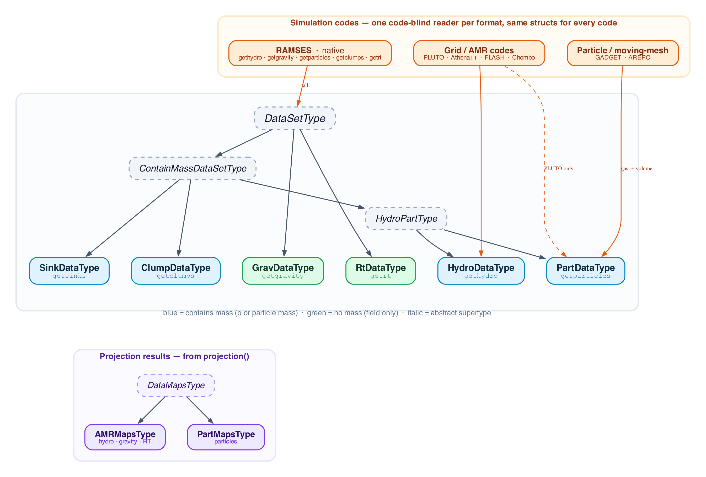

MERA.jl's comprehensive API for high-performance astrophysical data analysis and computational workflows
Types
Abstract type hierarchies

- HydroMapsType <: DataMapsType
- PartMapsType <: DataMapsType
List of types
Mera.AMRMapsTypeMera.AbstractFinderMera.ArgumentsTypeMera.CheckOutputNumberTypeMera.ClumpCardMera.ClumpCardMera.ClumpCatalogMera.ClumpDataTypeMera.CombinedCardMera.CombinedCardMera.CompilationInfoTypeMera.ContainMassDataSetTypeMera.CoveringGridResultMera.DataMapsTypeMera.DataSetTypeMera.DendrogramMera.DensityWatershedMera.DescriptorTypeMera.FluxBudgetTypeMera.FluxMapTypeMera.GraphSegFinderMera.GridInfoTypeMera.HDBSCANFinderMera.Histogram2DMapTypeMera.HydroDataTypeMera.HydroMapsTypeMera.HydroPartTypeMera.IOBenchmarkMera.InfoTypeMera.LosCubeTypeMera.MaskTypeMera.MortonGridMera.PartDataTypeMera.PartInfoTypeMera.PartMapsTypeMera.PersistenceFinderMera.PhaseCardMera.PhaseCardMera.PhaseSpaceFoFMera.PhysicalUnitsType002Mera.ProfileCardMera.ProfileCardMera.ProjectionCardMera.ProjectionCardMera.QuickLookResultMera.QuickReportMera.ReportPlanMera.ReportResultCardMera.SFRCardMera.SFRCardMera.ScalarCardMera.ScalarCardMera.ScalesType002Mera.StructureNodeMera.StructureTreeMera.ThreadSafeProgressMera.ThreadSafeProgressMera.ThresholdFoFMera.WStatType
Functions
Mera.JLD2flagMera.__init__Mera._lz4_typemapMera.add_fieldMera.add_fieldMera.add_unitMera.add_unitMera.amroverviewMera.amroverviewMera.amroverviewMera.analyze_amr_structureMera.average_mweighted_metaprogMera.average_velocityMera.baryon_fractionMera.baryon_fractionMera.batch_convert_meraMera.batchesMera.benchmark_buffer_sizesMera.benchmark_mera_ioMera.benchmark_multi_variable_projectionMera.benchmark_projection_hydroMera.benchmark_single_variable_projectionMera.build_camera_basisMera.build_camera_basisMera.bulk_velocityMera.bulk_velocity_metaprogMera.calculate_safe_thread_countMera.calibrate!Mera.calibrate!Mera.cell_shiftMera.center_of_massMera.center_of_massMera.center_of_mass_joint_metaprogMera.center_of_mass_metaprogMera.check_available_filesMera.check_safety_margin_violationMera.checkoutputsMera.clump_mass_fractionMera.clump_mass_fractionMera.clump_massfunctionMera.clump_massfunctionMera.clump_recoveryMera.clump_recoveryMera.clumpfindMera.clumpfindMera.clumpfindMera.clumpfindMera.clumpfindMera.clumpplotMera.clumptableMera.clumptableMera.column_integralMera.column_integralMera.comMera.comMera.comoving_to_proper_densityMera.comoving_to_proper_lengthMera.complete_progress!Mera.configure_adaptive_ioMera.configure_mera_ioMera.construct_datatypeMera.convert_single_file_safeMera.cosmologyMera.covering_gridMera.covering_grid_memoryMera.create_progress_trackerMera.create_ultrafast_tableMera.createpathMera.createscales!Mera.dataoverviewMera.dataoverviewMera.dataoverviewMera.dataoverviewMera.delete_fieldMera.delete_fieldMera.delete_unitMera.delete_unitMera.downsampleMera.downsampleMera.emission_mapMera.emission_mapMera.ensure_optimal_io!Mera.estimateMera.estimateMera.export_vtkMera.extract_column_dataMera.field_dependenciesMera.field_dependenciesMera.field_infoMera.field_infoMera.field_treeMera.field_treeMera.filter_by_rangeMera.fluxbudgetMera.fluxmapMera.fluxmapplotMera.fluxprofileMera.fluxshellMera.fluxtimeseriesMera.fmt_timeMera.formation_redshiftMera.formation_timeMera.get_available_memory_gbMera.get_cylinder_inclusion_weightMera.get_disk_info_commandMera.get_filtered_rangesMera.get_filtered_rangesMera.get_filtered_rangesMera.get_height_cylinderMera.get_memory_info_commandMera.get_memory_usage_percentageMera.get_network_info_commandMera.get_process_info_commandMera.get_radius_cylinderMera.get_radius_sphereMera.get_simulation_characteristicsMera.get_system_info_commandMera.get_total_memory_gbMera.get_unit_factor_fastMera.getclumpsMera.getextentMera.getgravityMera.gethydroMera.gethydroMera.getinfoMera.getmassMera.getparticlemaskMera.getparticlemaskMera.getparticlesMera.getpositionsMera.getrtMera.getspectrumMera.getspectrumMera.gettimeMera.getvarMera.getvarMera.getvarMera.getvar_requirementsMera.getvar_requirementsMera.getvelocitiesMera.humanizeMera.infodataMera.integrated_spectrumMera.integrated_spectrumMera.interactive_mera_converterMera.iops_testMera.iscosmologicalMera.list_fieldsMera.list_fieldsMera.list_unitsMera.list_unitsMera.load_clumpsMera.load_clumpsMera.loaddataMera.loadreportMera.loadreportMera.log_envMera.los_componentMera.los_componentMera.los_cubeMera.los_cubeMera.los_momentsMera.los_momentsMera.makefileMera.map_amr_cells_to_grid!Mera.map_amr_cells_to_grid_adaptive!Mera.map_amr_cells_to_grid_surface_density!Mera.map_amr_cells_to_grid_with_spatial_index!Mera.massfunctionplotMera.mean_baryon_densityMera.mean_matter_densityMera.mera_io_statusMera.mock_observeMera.mock_observeMera.moment2Mera.moment2Mera.msumMera.msum_metaprogMera.namelistMera.notifymeMera.offaxis_sliceMera.offaxis_sliceMera.openclose_testMera.optimize_mera_ioMera.parse_output_numberMera.patchfileMera.perform_sanity_checksMera.phaseMera.phaseMera.phaseMera.plot_resultsMera.position_velocityMera.position_velocityMera.prep_cylindrical_shellrangesMera.prep_spherical_shellrangesMera.preprangesMera.preprangesMera.previewMera.previewMera.printtablememoryMera.printtimeMera.profileMera.profileMera.profileMera.profile3dMera.profile3dMera.profiletimeseriesMera.profiletimeseriesMera.projectMera.projectionMera.projectionMera.projectionMera.projectionMera.proper_to_comoving_densityMera.proper_to_comoving_lengthMera.quicklookMera.quicklookplotMera.recommend_buffer_sizeMera.redshiftMera.renderMera.renderMera.reportMera.reportMera.required_raw_varsMera.reset_auto_optimization!Mera.reset_mera_ioMera.resolve_losMera.resolve_losMera.rotation_sequenceMera.rotation_sequenceMera.rotationcurveMera.rotationcurveMera.run_benchmarkMera.safe_executeMera.safe_printlnMera.save_benchmark_resultsMera.save_clumpsMera.save_clumpsMera.savecubeMera.savecubeMera.savedataMera.savefitsMera.send_resultsMera.sfrMera.sfrMera.sfr_snapshotMera.shellregionMera.show_auto_optimization_statusMera.show_mera_configMera.show_threading_infoMera.showprogressMera.sliceMera.smart_io_setupMera.smooth_transitionMera.stellar_ageMera.storageoverviewMera.subregionMera.subregioncuboidMera.subregioncuboidMera.subregioncuboidMera.subregioncylinderMera.subregioncylinderMera.subregioncylinderMera.subregionsphereMera.subregionsphereMera.subregionsphereMera.throughput_testMera.timed_notifyMera.timerfileMera.update_progress!Mera.update_progress!Mera.usedmemoryMera.velocity_cubeMera.velocity_cubeMera.velocity_momentsMera.velocity_momentsMera.velocitydispersionMera.velocitydispersionMera.viewallfieldsMera.viewdataMera.viewfieldsMera.viewmoduleMera.wstatMera.wstat_metaprog
Macros
Mera.@apply — Macro
Find examples in the Mera Documentation for: filter data with pipeline macros
Mera.@filter — Macro
Find examples in the Mera Documentation for: filter data with macros
Mera.@where — Macro
Find examples in the Mera Documentation for: filter data with pipeline macros
Documentation Types
Mera.AMRMapsType — Type
Mutable Struct: Contains the maps/units returned by an AMR cell-based projection (hydro, gravity-with-hydro, and radiative-transfer all return this type; the provenance is preserved in the .info field). smallr/smallc are hydro-only and set to 0 for RT.
Fields
maps::SortedDict{Symbol,Array{Float64,2}}— one 2D map per requested quantity, keyed by variable symbol (e.g.:sd,:rho,:vx,:T). For an intensive variable the map is the weighted average per pixel; for an extensive variable (:sd, and:mass/:ekin/:etherm/:volumeundermode=:sum) it is the per-pixel column/sum. Access asproj.maps[:sd].maps_unit::SortedDict{Symbol,Symbol}— the physical unit of each map (e.g.:Msol_pc2,:g_cm3,:km_s,:standardfor code units), keyed by the same symbols asmaps.maps_lmax::SortedDict— per-map record of the AMR level a map was projected onto (relevant when a coarserlmaxthan the simulation maximum was requested).maps_weight::SortedDict{Symbol,Symbol}— the weighting used per map::mass,:volume, or:nothingfor the extensive:sum/:sdaccumulations that carry no weighting.maps_mode::SortedDict{Symbol,Symbol}— how each map was reduced::mass_weighted,:volume_weighted,:standard, or:sum.lmax_projected::Real— the maximum AMR level actually used in the projection.lmin::Int,lmax::Int— the simulation's level range carried over for provenance.ranges::Array{Float64,1}— the 6-element projected sub-box[xmin,xmax,ymin,ymax,zmin,zmax]in box-fraction units[0,1]. (proj.xrange/yrange/zrangeare accessor slices of this.)extent::Array{Float64,1}—[xmin,xmax,ymin,ymax]of the map in code length units (multiply byproj.scale.kpcetc. for physical axes); the data-plane extent for plotting.cextent::Array{Float64,1}— the same extent but centred on the chosen projection centre (so the centre sits at 0); use for axes labelled relative to the centre.ratio::Float64— pixel aspect ratio of the map (xspan/yspan).effres::Int— the effective square resolution (pixels per side);proj.resaliases this.pixsize::Float64— physical size of one pixel in code length units (×scalefor kpc/pc).boxlen::Float64— the simulation box length in code units.smallr::Float64,smallc::Float64— hydro density/sound-speed floors (0 for RT projections).scale::ScalesType003— unit-conversion factors (code↔physical) inherited from the dataset.info::InfoType— the full simulation descriptor (provenance: output, paths, cosmology, …).los,up,cam_right,center::Vector{Float64}— off-axis camera basis and centre; emptyFloat64[]for axis-aligned projections.proj.directionreturns:offaxiswhen populated.
Mera.AbstractFinder — Type
AbstractFinderSupertype of the seven 3D structure-finding algorithms passed to clumpfind: ThresholdFoF, DensityWatershed, Dendrogram, GraphSegFinder, HDBSCANFinder, PhaseSpaceFoF and PersistenceFinder. A finder is a typed parameter bundle (field, threshold, linking length, neighbour backend) that implements _label(finder, points); extend it by adding a new subtype and _label method.
Mera.ArgumentsType — Type
Mutable Struct: Contains fields to use as arguments in functions
Mera.CheckOutputNumberType — Type
Mutable Struct: Contains the existing simulation snapshots in a folder and a list of the empty output-folders
Mera.ClumpCard — Type
ClumpCard(kind, field=:rho; threshold, linking_length, threshold_unit=:standard, pos_unit=:kpc, mass_unit=:Msol, min_members=1, label="")A report card that runs clumpfind and reports the clump count + total clump mass (the full ClumpCatalog is kept in the result card's data.catalog).
Mera.ClumpCatalog — Type
ClumpCatalogResult of clumpfind. clumps is a vector of per-clump NamedTuples (sorted most-massive first); meta records the search parameters; tree is the StructureTree hierarchy (only when built via hierarchy=true, else nothing). Index/iterate it like a vector (cat[1], length(cat), for c in cat).
Mera.ClumpDataType — Type
Mutable Struct: Contains clump data and information about the selected simulation
ClumpDataType <: ContainMassDataSetType
Mera.CombinedCard — Method
CombinedCard(datatypes, compute; unit=:fraction, label="combined")
CombinedCard(datatypes; unit=:fraction, label="combined") do datas … endA cross-datatype scalar card. compute(datas) receives a Dict{Symbol,Any} of the read data objects for datatypes and returns a number. Computed only if all datatypes are present. See the built-ins baryon_fraction and clump_mass_fraction.
Mera.CompilationInfoType — Type
Mutable Struct: Contains the collected information about the compilation of RAMSES
Mera.ContainMassDataSetType — Type
Abstract Supertype of all datasets that contain mass variables
HydroPartType <: ContainMassDataSetType <: DataSetType
Mera.CoveringGridResult — Type
CoveringGridResultResult of covering_grid / slice. grid maps each variable to its uniform array (3-D for a covering grid, 2-D for a slice); level is the uniform refinement level, dims the array size, extent the physical bounds [x0,x1,y0,y1,z0,z1] and cellsize the physical cell size (both in pos_unit). Index grid[:rho] for the array.
Mera.DataMapsType — Type
Abstract Supertype of all the different dataset type maps AMRMapsType <: DataMapsType PartMapsType <: DataMapsType
Mera.DataSetType — Type
Abstract Supertype of all the different dataset types
HydroPartType <: ContainMassDataSetType <: DataSetType
Mera.Dendrogram — Type
Dendrogram(field=:rho; threshold, linking_length, threshold_unit=:standard, min_delta=0.0, backend=CellLinkedList)Multi-scale hierarchy finder (Rosolowsky & Leroy 2008): the finest density peaks (local maxima with prominence ≥ min_delta) are the catalog's leaf clumps, and clumpfind(obj, …; hierarchy=true) attaches the full merge StructureTree recording the level at which they join. min_delta (in field units) is the minimum peak-to-saddle contrast for a separate leaf.
Mera.DensityWatershed — Type
DensityWatershed(field=:rho; threshold, linking_length, threshold_unit=:standard, peak_min_distance=2·linking_length, persistence=0.0, backend=CellLinkedList)Watershed finder: friends-of-friends for connectivity, then each connected group is split into density-descending basins (peaks separated by peak_min_distance), so touching cores are resolved along their saddles (DENMAX/SUBFIND-style). persistence (in field units) prunes shallow basins: a basin whose prominence — peak value minus the saddle at which it joins a deeper basin — is below persistence is merged into that deeper basin (topological contrast control, Rosolowsky & Leroy 2008 min_delta). persistence=0 keeps every local maximum (bare watershed).
Mera.DescriptorType — Type
Mutable Struct: Contains the collected information about the descriptors
Mera.FluxBudgetType — Type
FluxBudgetTypeResult of fluxbudget. rates is a NamedTuple keyed by quantity (:mass, :momentum, :energy, :metals), each an (in, out, net, err_in, err_out, err_net, n_in, n_out, unit) NamedTuple (in ≤ 0 inflow, out ≥ 0 outflow, net = in + out; err_* is the sampling/shot-noise standard error of the cell-sum — large when a few cells dominate). components is nothing or a per-phase NamedTuple. surface/radius/shell_width/center record the definition; n_cells the shell cell count; shell_mass_Msol and residual the conservation check.
Mera.FluxMapType — Type
FluxMapTypeResult of fluxmap. map is the 2-D surface map of quantity (:vr — mass-weighted mean normal velocity [km/s], inflow < 0 / outflow > 0; or :mdot — the per-bin mass-flux contribution [Msol/yr], whose sum is the net flux total). xedges/yedges are the surface-coordinate bin edges (xlabel/ylabel name them); mass is the Σ-mass map.
Mera.GraphSegFinder — Type
GraphSegFinder(field=:rho; threshold, linking_length, threshold_unit=:standard, scale=1.0, backend=CellLinkedList)Graph-segmentation finder (Felzenszwalb & Huttenlocher 2004): segments the neighbour graph so that the density variation within a region stays below the contrast between regions. scale k sets the granularity (larger ⇒ fewer, larger segments). Near-linear; good as a fast multi-scale deblender, e.g. deblend=GraphSegFinder(...).
Mera.GridInfoType — Type
Mutable Struct: Contains the collected information about grid
Mera.HDBSCANFinder — Type
HDBSCANFinder(field=:rho; threshold, linking_length, threshold_unit=:standard, min_cluster_size=5, min_samples=min_cluster_size, backend=CellLinkedList)Density-adaptive finder — a self-contained HDBSCAN* (Campello+2013; McInnes+2017): core distances from the min_samples-nearest neighbours define a mutual-reachability metric whose minimum spanning tree is condensed into a cluster hierarchy, and the most stable clusters (each with ≥ min_cluster_size members) are extracted. Finds clumps across a wide density range with almost no tuning; points not in any stable cluster are labelled noise (dropped). linking_length only bounds the neighbour search (set it generously).
Mera.Histogram2DMapType — Type
Mutable Struct: Contains the 2D histogram returned by the function: histogram2 and information about the selected simulation
Mera.HydroDataType — Type
Mutable Struct: Contains hydro data and information about the selected simulation
HydroDataType <: HydroPartType
Mera.HydroMapsType — Type
const HydroMapsType = AMRMapsTypeDeprecated alias for AMRMapsType (renamed because gravity and RT projections return the same AMR-map type, not only hydro). Kept for backward compatibility: existing code using HydroMapsType (construction, isa, dispatch) keeps working unchanged. Prefer AMRMapsType in new code.
Mera.HydroPartType — Type
Abstract Supertype of data-sets that contain hydro and particle data
HydroPartType <: ContainMassDataSetType <: DataSetType
Mera.IOBenchmark — Type
IOBenchmarkResult of run_benchmark: the iops, throughput and openclose sub-results (each with .samples/.stats), the number of runs, the threads levels tested, and total_elapsed seconds. Pass it to plot_results for a figure.
Mera.InfoType — Type
Mutable Struct: Collected information about the selected simulation output
Mera.LosCubeType — Type
Mutable Struct: an off-axis line-of-sight cube returned by los_cube / velocity_cube.
cube[i,j,k] is the deposited weight (default mass) at sky pixel (i,j) in bin k of the binned line-of-sight quantity (e.g. :vlos, :T, :rho, or a vector (:bx,:by,:bz)). x/y/bins are bin EDGES. Convenience aliases: .velocity → bins, .v_unit → bin_unit, .direction → :offaxis. Store with savecube / load with loadcube.
Fields
cube::Array{Float64,3}— the(nx, ny, nbins)data cube: depositedweightper sky pixel and line-of-sight bin. Summing over the 3rd axis recovers the column (moment-0) map.x::Vector{Float64},y::Vector{Float64}— sky-pixel bin edges in code length units (lengthnx+1,ny+1); ×scale.kpcetc. for physical axes.bins::Vector{Float64}— the line-of-sight quantity bin edges (lengthnbins+1) inbin_unit(e.g. velocity channels for:vlos).quantity::Any— the binned LOS quantity: aSymbol(:vlos,:T,:rho, …) or a 3-tuple/ vector of symbols for a vector LOS component (e.g.(:bx,:by,:bz)).bin_unit::Symbol— unit of thebinsaxis (e.g.:km_s,:standard). Alias:.v_unit.weight::Symbol— the deposit weight (:massor:volume).los,up,cam_right::Vector{Float64}— the orthonormal off-axis camera basis (line of sight, up vector, right vector).center::Vector{Float64}— the projection centre in code units.pixsize::Float64— physical size of one sky pixel in code length units.boxlen::Float64— the simulation box length in code units.range_unit::Symbol— the unit the spatial ranges were specified in.scale::ScalesType003— unit-conversion factors (code↔physical).info::InfoType— the full simulation descriptor (provenance).
Mera.MortonGrid — Type
MortonGrid <: AbstractNeighborIndexNeighbour-search backend (pass as backend=MortonGrid to any finder). Like CellLinkedList, but the indexed points are visited in Morton (Z-order) order so spatially-near points are also near in the traversal — neighbour lookups then touch cache-resident coordinates and the access pattern is near-sequential (the locality an out-of-core path also needs). Produces exactly the same neighbour pairs as the CellLinkedList/HashGrid backends; only the traversal order, and hence speed on large selections, differs.
Mera.PartDataType — Type
Mutable Struct: Contains particle data and information about the selected simulation
PartDataType <: HydroPartType
Mera.PartInfoType — Type
Mutable Struct: Contains the collected information about particles
Mera.PartMapsType — Type
Mutable Struct: Contains the maps/units returned by a particle projection (projection(::PartDataType, …)). Particle maps are histogram deposits of the selected quantity onto the sky grid; provenance is preserved in the .info field.
Fields
maps::SortedDict{Symbol,Array{Float64,2}}— one 2D map per requested quantity, keyed by variable symbol (e.g.:sdsurface density,:vx,:age).:sdis the column mass per pixel area; intensive variables are mass- or volume-weighted averages per pixel.maps_unit::SortedDict{Symbol,Symbol}— the physical unit of each map (e.g.:Msol_pc2,:km_s,:standardfor code units), keyed by the same symbols asmaps.maps_lmax::SortedDict— per-map record of the grid level the deposit used.maps_mode::SortedDict{Symbol,Symbol}— how each map was reduced::mass_weightedor:volume_weighted(particle projection has nomode=:sumpath;weightingselects between:massand:volume).lmax_projected::Real— the maximum grid level used.lmin::Int,lmax::Int— the simulation's level range carried over for provenance.ref_time::Real— the reference time (code units) used to convert birth times to ages for age-dependent quantities (e.g.:age); taken frominfo.timeunless overridden.ranges::Array{Float64,1}— the 6-element projected sub-box[xmin,…,zmax]in box-fraction units[0,1]. (proj.xrange/yrange/zrangeare accessor slices.)extent::Array{Float64,1}—[xmin,xmax,ymin,ymax]of the map in code length units (×proj.scale.kpcetc. for physical axes).cextent::Array{Float64,1}— the same extent centred on the projection centre.ratio::Float64— pixel aspect ratio of the map (xspan/yspan).effres::Int— effective square resolution (pixels per side);proj.resaliases this.pixsize::Float64— physical size of one pixel in code length units (×scalefor kpc/pc).boxlen::Float64— the simulation box length in code units.scale::ScalesType003— unit-conversion factors (code↔physical) inherited from the dataset.info::InfoType— the full simulation descriptor (provenance).los,up,cam_right,center::Vector{Float64}— off-axis camera basis and centre; emptyFloat64[]for axis-aligned projections.proj.directionreturns:offaxiswhen populated.
Mera.PersistenceFinder — Type
PersistenceFinder(field=:rho; threshold, linking_length, persistence, threshold_unit=:standard, backend=CellLinkedList)Topological persistence clustering (0-dim persistent homology / ToMATo; Chazal+2013): a superlevel-set filtration of the density field where a peak is kept as a separate cluster only if its prominence (peak − merge saddle) reaches persistence. Principled, parameter-light deblending that is robust in crowded fields.
Mera.PhaseCard — Method
PhaseCard(kind, xvar, yvar; weight=:mass, nbins=(80,80), xscale=:log, yscale=:log, xunit=:standard, yunit=:standard, label="")A phase (2-D histogram) card for a ReportPlan.
Mera.PhaseSpaceFoF — Type
PhaseSpaceFoF(field=:rho; threshold, linking_length_pos, linking_length_vel, threshold_unit=:standard, backend=CellLinkedList)6-D phase-space friends-of-friends (Rockstar-style; Behroozi+2013): points link only when within linking_length_pos in space and linking_length_vel (km/s) in velocity, so kinematically distinct populations that overlap spatially — streams, subhaloes, tidal debris — separate. Needs velocities (the finder loads them automatically).
Mera.PhysicalUnitsType002 — Type
Mutable Struct: Contains the physical constants in cgs units
Mera.ProfileCard — Type
ProfileCard(kind, xvar, yvar=nothing; weight=:mass, nbins=40, geometry=:none, unit=:standard, xunit=:standard, range_unit=:standard, center=[:bc], yscale=:auto, label="")A profile (1-D radial/other profile) card for a ReportPlan. For a disk galaxy use xvar=:r_cylinder, geometry=:cylindrical (radius in the disk plane); :r_sphere, geometry=:spherical suits a halo/spheroid. yscale sets the y-axis when plotted: :log/:log10 (log₁₀), :identity (linear), or :auto (log when the profile is positive and spans ≳ 1.5 decades, e.g. density).
Mera.ProjectionCard — Method
ProjectionCard(kind, var; unit=:standard, weight=:mass, res=256, direction=:z, center=[:bc], range_unit=:standard, label="")A projection card (surface-density / mass-weighted map) for a ReportPlan.
Mera.QuickLookResult — Type
QuickLookResultResult of quicklook. Fields: info, levelmin, levelmax, lmax_used (level actually read, nothing for a header-only call), ncells (cells read), sampled (true ⇒ coarse/partial ⇒ estimates are approximate), maps (a NamedTuple of surface-density projections: gas x, y, z, face-on stars/dm when particles are present, plus a face-on magnetic-field map bmag (μG) on an MHD run, or nothing), phase (the ρ–T histogram, or nothing), budget (a NamedTuple global snapshot budget — gas/stellar/DM mass and current SFR — or nothing), and summary (a NamedTuple of facts + estimates).
Mera.QuickReport — Type
QuickReportThe result of report: cards (a vector of [ReportResultCard]), summary (header facts), provenance, cost (timings), and info. Render with render(report, :ascii|:jld2|:file) or reload with loadreport.
Mera.ReportPlan — Type
ReportPlan(output; path=".", cards=[], lmax=-1, budget=2_000_000)A declarative, inspectable plan of report cards. Build it, preview its cost, then run it with report. cards is a vector of ReportCard. lmax=-1 picks a budgeted level (coarse if the full output exceeds budget cells), mirroring quicklook.
Mera.ReportResultCard — Type
ReportResultCardA computed card inside a [QuickReport]: label, kind (:map/:phase/:profile/:scalar), datatype, func, the plain-data data payload, and a meta NamedTuple (units, ranges, cost_s, sampled, …).
Mera.SFRCard — Type
SFRCard(kind=:particles; tbinsize=10.0, trange=[0.0,missing], unit=:Msol_yr, mode=:none, mass=:auto, mask=nothing, label="")A star-formation-history card (sfr). mode=:probability gives the normalised SFH (a fraction); mass=:auto prefers a stored initial-mass field; mask=obj->BitVector subselects.
Mera.ScalarCard — Method
ScalarCard(kind, var; reduce=:sum, unit=:standard, fraction=false, relative_to=nothing, mask=nothing, label="")A scalar reduction card (reduce ∈ :sum,:mean,:extrema,:count). fraction=true divides by the total of relative_to (or var); mask=obj->BitVector restricts the rows.
Mera.ScalesType002 — Type
Mutable Struct: Contains the created scale factors from code to physical units
Mera.StructureNode — Type
StructureNodeOne node of a StructureTree: id, parent (0 at a root), children (ids), an is_leaf flag, the peak field value in its subtree, the base level at which it forms (the saddle where it merges into its parent, or the threshold at a root), and member counts n_self (points it owns directly — nonzero only for leaves) and n_subtree (points in the whole subtree).
Mera.StructureTree — Type
StructureTreeThe multi-scale hierarchy produced by a Dendrogram finder (clumpfind(obj, …; hierarchy=true)): nodes (a vector of StructureNode, indexable by node id) and roots (top-level node ids, one per disconnected region). Leaves are the finest structures (density peaks pruned by min_delta); branches are the levels at which they merge. Accessors: roots, leaves, children, parent.
Mera.ThreadSafeProgress — Type
ThreadSafeProgressMutable struct for managing progress bar updates across multiple threads. Prevents race conditions when multiple threads try to update progress simultaneously.
Fields
progress: ProgressMeter.Progress object for displaycurrent_file: Name of file currently being processedcompleted: Number of files completed so fartotal: Total number of files to processlock: ReentrantLock for thread synchronization
Mera.ThreadSafeProgress — Method
ThreadSafeProgress(total::Int) -> ThreadSafeProgressConstructor for thread-safe progress tracker. Initializes progress bar with appropriate settings for file conversion display.
Progress Bar Configuration
- Shows completion ratio [completed/total]
- Updates every 0.5 seconds to avoid excessive output
- 40-character progress bar for good visual feedback
- Shows processing speed (files/second)
Mera.ThresholdFoF — Type
ThresholdFoF(field=:rho; threshold, linking_length, threshold_unit=:standard, backend=CellLinkedList)Friends-of-friends finder: members with field ≥ threshold are linked into a clump when within linking_length of one another. The classic, fast connectivity finder (Davis et al. 1985).
Mera.WStatType — Type
Mutable Struct: Contains the output statistics returned by wstat
Mera.MaskType — Type
Union Type: Mask-array that is of type Bool or BitArray MaskType = Union{Array{Bool,1},BitArray{1}}
Documentation Functions
Mera.JLD2flag — Method
JLD2flag(first_flag::Bool) -> (Bool, Symbol)Determines the appropriate file mode for JLD2 operations.
- First write operation: creates new file (:write mode)
- Subsequent operations: append to existing file (:append mode)
Returns updated first_flag and corresponding file mode symbol.
Mera.__init__ — Method
__init__()Announce Mera on load. In an interactive session (REPL / Jupyter) print the ASCII banner with the version; otherwise emit a single greppable @info "Mera vX.Y.Z" line (stderr, silenceable, doesn't pollute stdout) so scripts / tests / CI get a clean one-line marker instead of the art. The version comes from pkgversion, so it always tracks Project.toml. (Top-level printlns would only run during precompilation, so this lives in __init__ instead.)
Mera._lz4_typemap — Method
_lz4_typemap()Create a JLD2 typemap entry for handling old LZ4FrameCompressor objects.
Old files have LZ4FrameCompressor with header::TranscodingStreams.Memory field, new code expects header::Vector{UInt8}. We map the old type directly to the current type — JLD2 constructs a fresh default compressor, which works because the compressor is just metadata (the actual compressed data is separate).
Mera.add_field — Method
add_field(name::Symbol, compute::Function; depends_on=Symbol[], datatypes=:hydro,
unit::Symbol=:standard, description::String="")Register a user-defined derived field that then behaves like any built-in getvar quantity — it works in getvar, and therefore in projection, profile, phase, etc.
compute(dataobject, deps)— your kernel.depsis aDict{Symbol,Vector}holding the arrays ofdepends_on(already centered / masked consistently). Return the field in code units; the requestedunit(or this field's defaultunit) is applied for you.depends_on— the variables your kernel needs (built-in or other user fields). These are also recorded in the dependency graph sogetvar_requirements(and the read-only-what-you-need logic inproject/quicklook) cover your field.datatypes— a kind symbol or collection of them::hydro,:gravity,:rt,:particle,:clump.unit— default unit symbol (must be a field ofinfo.scale, or:standard).
add_field(:vmag2, (o, d) -> d[:vx].^2 .+ d[:vy].^2 .+ d[:vz].^2; depends_on=[:vx,:vy,:vz])
getvar(gas, :vmag2)
projection(gas, :vmag2)See also delete_field, list_fields.
Mera.add_unit — Method
add_unit(name::Symbol, factor::Real)Register a custom unit: a value in code units is multiplied by factor to convert to this unit. The name then works anywhere a unit symbol is accepted — in add_field (as the field's default unit), and in getvar(obj, var, name).
add_unit(:Msun_per_yr, 1.0) # e.g. for an SFR-like custom field
add_field(:mdot, (o,d)->d[:rho]; depends_on=[:rho], unit=:Msun_per_yr)See also delete_unit, list_units.
Mera.amroverview — Method
amroverview(dataobject::GravDataType; verbose::Bool=true)Get the number of cells and CPUs per AMR level for gravity data. Returns an IndexedTable with columns level, cells, cellsize, and optionally cpus.
Mera.amroverview — Method
amroverview(dataobject::HydroDataType; verbose::Bool=true)
amroverview(dataobject::GravDataType; verbose::Bool=true)
amroverview(dataobject::PartDataType; verbose::Bool=true)Generate an overview table showing the distribution of cells/particles across AMR levels.
Arguments
dataobject: AMR data object (HydroDataType, GravDataType, or PartDataType)verbose::Bool=true: Display progress information during calculation
Returns
IndexedTable: Table with columns::level: AMR refinement level:cells/:particles: Number of cells or particles at each level:cellsize: Physical size of cells at each level (Hydro/Grav only):cpus: Number of CPU domains at each level (if CPU info available)
Examples
```julia
Basic AMR overview for hydro data
gas = gethydro(info, verbose=false) table = amroverview(gas)
Silent processing
table = amroverview(gas, verbose=false)
Mera.amroverview — Method
amroverview(dataobject::PartDataType; verbose::Bool=true)Get the number of particles and CPUs per AMR level for particle data. Returns an IndexedTable with columns level, particles, and optionally cpus.
Mera.analyze_amr_structure — Method
analyze_amr_structure(gas_data) → DictPerform comprehensive analysis of AMR data structure and refinement hierarchy.
Analyzes the adaptive mesh refinement structure to understand data complexity, refinement level distribution, and spatial extent. This information provides essential context for interpreting benchmark performance results.
Returns
Dictionary containing:
total_cells: Total number of AMR cellsdata_size_gb: Memory footprint in gigabyteslevel_range: (minlevel, maxlevel) refinement rangelevel_count: Number of distinct refinement levelslevel_stats: Per-level cell counts and percentagescomplexity_factor: Normalized complexity metric for performance scaling
Analysis Components
- Cell Count Statistics: Total cells and memory usage
- Refinement Level Distribution: Cell counts per refinement level
- Spatial Extent Analysis: Coordinate ranges and effective resolution
- Performance Metrics: Complexity weighting for benchmark interpretation
Example
gas_data = loaddata(300, "/path/to/ramses/", :hydro)
amr_stats = analyze_amr_structure(gas_data)
println("AMR complexity factor: $(amr_stats["complexity_factor"])")Mera.average_mweighted_metaprog — Method
Metaprogramming-optimized mass-weighted average with template generation. Fuses mass and variable data access for optimal performance.
Mera.average_velocity — Method
Calculate the average velocity (w/o mass-weight) of any ContainMassDataSetType:
average_velocity(dataobject::ContainMassDataSetType; unit::Symbol=:standard, weighting::Symbol=:mass, mask::MaskType=[false])
return Tuple{Float64, Float64, Float64,}Arguments
Required:
dataobject: needs to be of type: "ContainMassDataSetType"
Optional Keywords:
unit: the unit of the result (can be used w/o keyword): :standard (code units) :kms, :ms, :cm_s (of typye Symbol) ..etc. ; see for defined velocity-scales viewfields(info.scale)weighting: use different weightings: :mass (default), :volume (hydro), :nomask: needs to be of type MaskType which is a supertype of Array{Bool,1} or BitArray{1} with the length of the database (rows)
Mera.baryon_fraction — Method
baryon_fraction(; label="baryon_fraction")Cross-datatype card: (gas + stars) / (gas + stars + dark matter), reading hydro + particles.
Mera.batch_convert_mera — Method
batch_convert_mera(input_dir::String, output_dir::String,
start_output::Int, end_output::Int;
requested_threads::Int=Threads.nthreads(),
safety_margin::Float64=DEFAULT_SAFETY_MARGIN,
min_threads::Int=DEFAULT_MIN_THREADS,
max_threads::Int=DEFAULT_MAX_THREADS,
skip_existing::Bool=true,
show_confirmation::Bool=true,
compress=nothing) -> DictMain function for safe multithreaded batch conversion with active safety margin monitoring.
This function coordinates the entire conversion process including:
- System resource validation and safety checks
- File discovery and filtering by output number range
- Thread count optimization based on system constraints
- User confirmation and information display
- Multithreaded conversion with real-time monitoring
- Comprehensive results reporting and recommendations
Parameter Details
Required Parameters
input_dir: Source directory containing old JLD2 files with version issuesoutput_dir: Destination directory for converted files (created if doesn't exist)start_output: Starting output number for conversion range (inclusive)end_output: Ending output number for conversion range (inclusive)
Performance Tuning Parameters
requested_threads: Desired number of conversion threads (default: all available)safety_margin: Memory usage threshold as decimal 0.0-1.0 (default: 0.8 = 80%)min_threads: Minimum thread count even under resource constraints (default: 1)max_threads: Maximum thread count regardless of system capacity (default: 64)
Behavior Control Parameters
skip_existing: Skip files that already exist in output directory (default: true)show_confirmation: Display user confirmation prompt before starting (default: true)compress: Compression codec for the output files, matchingsavedata's API (default:nothing→LZ4FrameCompressor()). Passfalseto write uncompressed files, or a specific codec instance (LZ4FrameCompressor(),ZlibCompressor(),Bzip2Compressor()) for finer control.
Safety Margin System
The safety_margin parameter is now actively used throughout the process:
Pre-Conversion Phase
- Validates current system memory usage
- Adjusts thread recommendations based on available memory within safety limits
- Warns user if current usage already exceeds margin
During Conversion Phase
- Monitors memory usage before each file load operation
- Checks memory after data loading (peak usage point)
- Triggers automatic garbage collection on violations
- Counts total violations for reporting
Post-Conversion Phase
- Reports final memory state and violation statistics
- Provides recommendations for future conversions based on violation patterns
Return Value
Returns comprehensive dictionary with conversion statistics:
success: Number of files successfully convertedfailed: Number of files that failed conversionskipped: Number of files skipped (already existed)safety_violations: Number of times memory exceeded safety marginconversion_time: Total time spent in conversion (seconds)threads_used: Actual number of threads usedfinal_memory_usage_percent: Memory usage percentage at completion
Error Handling Strategy
The function handles errors gracefully:
- Individual file failures don't stop the batch
- Out-of-memory errors receive specific guidance
- System resource violations trigger automatic recovery
- All errors are logged with specific context
Example Usage
Basic conversion with default safety settings: results = batchconvertmera("/data/old", "/data/new", 100, 200)
Conservative conversion for large files: results = batchconvertera("/data/old", "/data/new", 100, 200; requestedthreads=4, safetymargin=0.9)
High-performance conversion with monitoring: results = batchconvertmera("/data/old", "/data/new", 100, 200; requestedthreads=16, safetymargin=0.7, skip_existing=false)
Mera.batches — Method
Split 1:nfiles into chunks of size ≤ chunk.
Mera.benchmark_buffer_sizes — Method
benchmark_buffer_sizes(simulation_path::String, output_num::Int;
test_sizes=[32768, 65536, 131072, 262144], verbose=true)Benchmark different buffer sizes to find the optimal setting for this specific simulation.
Mera.benchmark_mera_io — Method
benchmark_mera_io(simulation_path::String, output_num::Int;
test_sizes=["32KB", "64KB", "128KB", "256KB"])Benchmark different I/O configurations to find optimal settings for your specific simulation.
This function tests various buffer sizes with your actual data to determine which configuration gives the best performance on your system.
Arguments
simulation_path: Path to your RAMSES simulation directoryoutput_num: Output number to test withtest_sizes: Array of buffer sizes to test (as strings)
Returns
- Dictionary with benchmark results and recommended optimal settings
Example
# Standard benchmark
results = benchmark_mera_io("/path/to/simulation", 300)
# Custom buffer sizes to test
results = benchmark_mera_io("/path/to/simulation", 300,
test_sizes=["64KB", "128KB", "256KB", "512KB"])
# Access results
optimal_buffer = results["optimal_buffer_size"]
performance_gain = results["performance_improvement"]What it does
- Tests each buffer size with your actual simulation data
- Measures getinfo() and gethydro() performance
- Identifies the optimal buffer size for your system
- Automatically applies the best settings
- Returns detailed performance comparison
Mera.benchmark_multi_variable_projection — Function
benchmark_multi_variable_projection(gas_data, n_threads::Int, n_runs::Int=10) → DictExecute multi-variable projection benchmark testing simultaneous computation of 10 hydro variables.
Performs comprehensive timing analysis of multi-variable projections computing 10 simultaneous hydro variables including velocity components, velocity dispersion, and cylindrical coordinates. This benchmark tests the threading efficiency for complex projection scenarios typical in astrophysical analysis workflows.
Variable Set (10 Variables)
- Velocity: :v (3D velocity field analysis)
- Velocity Dispersion: σ:, σx, :σy, :σz (turbulence and kinematic structure)
- Cylindrical Coordinates: :vrcylinder, :vϕcylinder, σrcylinder, σϕcylinder (disk dynamics)
- Thermal Soundspeed: :cs
Methodology
- Projection Type: Simultaneous multi-variable calculation (realistic workflow)
- Threading: Shared memory parallelization across variables and spatial bins
- Statistics: several repetitions with comprehensive error analysis
Performance Characteristics
Multi-variable projections exhibit different scaling behavior than single-variable:
- Memory Scaling: higher memory usage due to multiple output arrays
- Threading Efficiency: May differ due to increased memory bandwidth requirements
- Computational Complexity: Higher arithmetic intensity but better cache reuse
Arguments
gas_data: HydroDataType object containing AMR hydro simulation datan_threads::Int: Number of threads for parallel computationn_runs::Int=10: Statistical repetitions for robust measurement
Returns
Dictionary with detailed performance analysis:
mean_time,std_time: Multi-variable projection timing statisticsmean_memory: Peak memory usagesuccess_rate: Reliability metric (target: >95% for complex operations)coefficient_variation: Precision indicator for multi-variable timing
Performance Comparison
Compare with single-variable results to understand:
- Threading efficiency differences between simple/complex projections
- Memory bandwidth limitations in multi-variable scenarios
- Optimal thread counts for different projection complexities
Example
# Multi-variable benchmark for threading analysis
result = benchmark_multi_variable_projection(gas_data, 8, 10)
# Compare with single-variable efficiency
single_result = benchmark_single_variable_projection(gas_data, 8, 10)
efficiency_ratio = single_result["mean_time"] / result["mean_time"] * 10
println("Multi-variable efficiency: $(efficiency_ratio) variables per single-variable time")Mera.benchmark_projection_hydro — Function
benchmark_projection_hydro(gas_data, thread_counts::Vector{Int}, n_runs::Int=10, output_file::String="") → DictExecute comprehensive AMR hydro projection benchmark with robust statistical analysis.
This function serves as the main coordinator for hydro projection performance testing. It performs AMR structure analysis, data quality validation, executes both single-variable and multi-variable projection benchmarks across specified thread counts, and exports results in multiple formats with comprehensive statistical analysis.
Benchmark Methodology
- Single-Variable Test: Surface density projection (:sd → Msun/pc²)
- Multi-Variable Test: 10 simultaneous variable projections: vars = [:v, :σ, :σx, :σy, :σz, :vrcylinder, :vϕcylinder, :σrcylinder, :σϕcylinder, :cs]
- Statistical Robustness: several repetitions per configuration with coefficient of variation
- Quality Control: Success rate monitoring (>80% threshold for reliable data)
- Memory Profiling: Peak memory usage and garbage collection analysis
Threading Analysis
Evaluates performance across thread counts with derived metrics:
- Speedup: Performance improvement vs single-threaded execution
- Efficiency: Speedup per thread (percentage of ideal scaling)
- Memory Scaling: Memory usage patterns across thread configurations
Output Files Generated
{output_file}.csv: Structured data for spreadsheet analysis and plotting{output_file}.json: Machine-readable structured data for programmatic access{output_file}_summary.txt: Human-readable performance report with insights
Arguments
gas_data: HydroDataType object from loaddata() or gethydrodata()thread_counts::Vector{Int}: Thread counts to benchmark [1, 2, 4, 8, 16, ...]n_runs::Int=10: Statistical repetitions per configuration (10 for robust analysis)output_file::String="": Output filename base (auto-generated timestamp if empty)
Returns
Dictionary containing complete benchmark results with keys:
n_threads,test_type,mean_time,std_time,speedup,efficiencymean_memory,success_rate,min_time,max_time,n_runs
Example Usage
# Load RAMSES hydro data
gas_data = loaddata(300, "/path/to/ramses/output/", :hydro)
# Run comprehensive benchmark (single + multi-variable)
results = benchmark_projection_hydro(gas_data, [1, 2, 4, 8, 16], 10, "performance_test")
# Results saved as:
# - performance_test.csv (for plotting with plot_results.jl)
# - performance_test.json (for programmatic analysis)
# - performance_test_summary.txt (human-readable report)Performance Insights
The benchmark automatically analyzes threading efficiency and provides guidance:
- Identifies optimal thread counts for your system and data size
- Detects threading bottlenecks and memory constraints
- Quantifies single vs multi-variable projection performance differences
- Provides statistical confidence intervals for all measurements
Integration Workflow
- Data Loading: Use Mera's loaddata() for your RAMSES simulation
- Benchmarking: Execute this function with desired thread counts
- Visualization: Use plot_results.jl to create performance dashboards
- Analysis: Review summary.txt for optimization recommendations
Mera.benchmark_single_variable_projection — Function
benchmark_single_variable_projection(gas_data, n_threads::Int, n_runs::Int=10) → DictExecute single-variable surface density projection benchmark with robust statistical analysis.
Performs high-precision timing measurements of surface density (:sd → Msun/pc²) projections using the specified thread count. Implements comprehensive statistical analysis including warm-up runs, outlier detection, and memory profiling for reliable performance data.
Methodology
- Variable: Surface density (:sd) - most common astronomical observable
- Unit: Msun/pc² (solar masses per square parsec) - standard surface density unit
- Resolution: 128×128 projection grid (balanced performance/accuracy)
- Statistics: several repetitions with coefficient of variation analysis
- Quality Control: Success rate monitoring and outlier detection
Performance Monitoring
- Timing: Microsecond-precision measurement with warm-up runs
- Memory: Peak memory usage tracking during projection execution
- GC Analysis: Garbage collection overhead monitoring
- Progress: Real-time statistics with running averages and CV calculation
Arguments
gas_data: HydroDataType object containing AMR simulation datan_threads::Int: Number of threads for projection calculationn_runs::Int=10: Statistical repetitions (10 for robust analysis)
Returns
Dictionary with comprehensive performance metrics:
mean_time,std_time,min_time,max_time: Timing statistics (seconds)coefficient_variation: Measurement precision indicator (target: <5%)mean_memory: Average peak memory usage (GiB)mean_gc_time: Average garbage collection overhead (seconds)success_rate: Fraction of successful runs (1.0 = 100% success)n_runs: Number of statistical repetitions performed
Example
# Single-threaded surface density benchmark
result = benchmark_single_variable_projection(gas_data, 1, 10)
println("Mean execution time: $(result["mean_time"]) seconds")
println("Measurement precision: $(result["coefficient_variation"]*100)%")Mera.build_camera_basis — Function
build_camera_basis(los, up=nothing; roll=0.0) -> (right, up, w)Construct a right-handed orthonormal camera basis from a line-of-sight vector los (the viewing direction) and an optional up hint.
Returns three unit 3-vectors (right, up, w) where w = los/‖los‖ is the viewing direction, and right, up span the image plane (image x = right, image y = up). The basis is right-handed with right × up = w.
If up is nothing — or (anti)parallel to los — a deterministic auto-up is chosen (the world axis least parallel to los), so the result is fully reproducible.
roll (radians) rotates the image plane about the line of sight — i.e. it sets the orientation of the image on the "sky" (the astronomical position angle / camera roll). It leaves w unchanged and rotates (right, up) together, so it composes with any way of choosing los.
Convention check: los=[0,0,1], up=[0,1,0] ⇒ right=[1,0,0], up=[0,1,0], matching the axis-aligned direction=:z mapping (image x→sim x, image y→sim y).
Mera.bulk_velocity — Method
Calculate the average velocity (w/o mass-weight) of any ContainMassDataSetType:
bulk_velocity(dataobject::ContainMassDataSetType; unit::Symbol=:standard, weighting::Symbol=:mass, mask::MaskType=[false])
return Tuple{Float64, Float64, Float64,}Arguments
Required:
dataobject: needs to be of type: "ContainMassDataSetType"
Optional Keywords:
unit: the unit of the result (can be used w/o keyword): :standard (code units) :kms, :ms, :cm_s (of typye Symbol) ..etc. ; see for defined velocity-scales viewfields(info.scale)weighting: use different weightings: :mass (default), :volume (hydro), :nomask: needs to be of type MaskType which is a supertype of Array{Bool,1} or BitArray{1} with the length of the database (rows)
Mera.bulk_velocity_metaprog — Method
Metaprogramming-optimized bulk velocity with compile-time weighting dispatch. Generates specialized code for each weighting scheme at compile time.
Mera.calculate_safe_thread_count — Method
calculate_safe_thread_count(requested_threads::Int;
safety_margin::Float64=DEFAULT_SAFETY_MARGIN,
min_threads::Int=DEFAULT_MIN_THREADS,
max_threads::Int=DEFAULT_MAX_THREADS) -> IntCalculate the maximum safe number of threads based on system constraints and current state. This function now actively uses the safety_margin to provide intelligent recommendations.
Algorithm
- Check current memory usage against safety margin
- Calculate available memory within safety limits
- Apply memory-based adjustment factor if resources are constrained
- Respect system core count and user-defined limits
- Ensure result stays within min/max bounds
Parameters
requested_threads: User's desired thread countsafety_margin: Maximum memory usage threshold (0.0-1.0)min_threads: Minimum allowable threads (safety floor)max_threads: Maximum allowable threads (performance ceiling)
Returns
Integer thread count that balances performance with system safety
Mera.calibrate! — Method
calibrate!(output; path=".", budget=200_000) -> CostModelActively calibrate the cost model for this machine/output by running a tiny report (one coarse level + small projection/phase/profile/scalar) and learning the timing coefficients. ~0.5–3 s, once. (The model also self-calibrates passively after every real report.)
Mera.cell_shift — Method
cell_shift(level::Int, value::Real, cell::Bool)Legacy compatibility function for shell region functions.
This function provides backward compatibility with older shell region code that used cellshift calls. The newer geometry helper functions (getradius*, getheight_*) handle cell vs point-based selection internally, so this function simply returns the input value unchanged.
Arguments
level::Int: AMR level (unused in current implementation)value::Real: The input value to be returnedcell::Bool: Cell vs point selection flag (unused in current implementation)
Returns
Real: The input value unchanged
Note
This function exists for compatibility with legacy shell region functions. New code should use the geometry helper functions directly.
Mera.center_of_mass — Method
Calculate the center-of-mass of any ContainMassDataSetType:
center_of_mass(dataobject::ContainMassDataSetType; unit::Symbol=:standard, mask::MaskType=[false])
return Tuple{Float64, Float64, Float64,}Arguments
Required:
dataobject: needs to be of type: "ContainMassDataSetType"
Optional Keywords:
unit: the unit of the result (can be used w/o keyword): :standard (code units), :Mpc, :kpc, :pc, :mpc, :ly, :au , :km, :cm (of typye Symbol) ..etc. ; see for defined length-scales viewfields(info.scale)mask: needs to be of type MaskType which is a supertype of Array{Bool,1} or BitArray{1} with the length of the database (rows)
Mera.center_of_mass — Method
Calculate the joint center-of-mass of any HydroPartType:
center_of_mass(dataobject::Array{HydroPartType,1}, unit::Symbol; mask::MaskArrayAbstractType=[[false],[false]])
return Tuple{Float64, Float64, Float64,}Arguments
Required:
dataobject: needs to be of type: "Array{HydroPartType,1}""
Optional Keywords:
unit: the unit of the result (can be used w/o keyword): :standard (code units), :Mpc, :kpc, :pc, :mpc, :ly, :au , :km, :cm (of typye Symbol) ..etc. ; see for defined length-scales viewfields(info.scale)mask: needs to be of type MaskArrayAbstractType which contains two entries with supertype of Array{Bool,1} or BitArray{1} and the length of the database (rows)
Mera.center_of_mass_joint_metaprog — Method
Metaprogramming-optimized joint center of mass for multiple datasets. Uses template-based loop generation with compile-time optimization.
Mera.center_of_mass_metaprog — Method
Metaprogramming-optimized center of mass with fused mass-weighted operations. Uses compile-time template generation for maximum performance.
Mera.check_available_files — Method
check_available_files(input_dir::String) -> DictAnalyze directory contents and provide comprehensive file information. Used for validation and user feedback about available data.
Returns Dictionary with keys:
- "files": Vector of valid JLD2 filenames
- "range": Tuple of (minoutput, maxoutput) or nothing if no files
- "gaps": Vector of missing output numbers within the range
- "total": Total count of valid files
Gap Detection Algorithm
Identifies missing files in the sequence, which can indicate:
- Incomplete simulation runs
- File transfer errors
- Storage problems
This helps users identify data integrity issues before conversion
Mera.check_safety_margin_violation — Method
check_safety_margin_violation(safety_margin::Float64) -> BoolDetermine if current system memory usage exceeds the configured safety margin. This is the core safety check function that prevents system overload.
Arguments
safety_margin: Decimal value (0.0-1.0) representing maximum allowed memory usage
Returns
trueif memory usage exceeds safety margin (dangerous situation)falseif memory usage is within safe limits
Example
- safety_margin = 0.8 means allow up to 80% memory usage
- If current usage is 85%, this returns true (violation)
Mera.checkoutputs — Function
Get the existing simulation snapshots in a given folder
- returns field
outputswith Array{Int,1} containing the output-numbers of the existing simulations - returns field
misswith Array{Int,1} containing the output-numbers of empty simulation folders - returns field
pathas String
checkoutputs(path::String="./"; verbose::Bool=true)
return CheckOutputNumberTypeExamples
# Example 1:
# look in current folder
julia> N = checkoutputs();
julia> N.outputs
julia> N.miss
julia> N.path
# Example 2:
# look in given path
# without any keyword
julia>N = checkoutputs("simulation001");Mera.clump_mass_fraction — Method
clump_mass_fraction(; label="clump_mass_fraction")Cross-datatype card: total clump mass / total gas mass, reading clumps + hydro.
Mera.clump_massfunction — Method
clump_massfunction(cat::ClumpCatalog; nbins=20, scale=:log, cumulative=false)
-> (mass, N)The clump mass function. Differential (default): histogram of clump masses into nbins (scale=:log ⇒ log-spaced bins) — returns (bin_centres, counts). Cumulative (cumulative=true): returns (sorted_mass, N(≥M)).
Mera.clump_recovery — Method
clump_recovery(found_labels, true_labels; background=0) -> NamedTupleCompare a found clump segmentation against a known ground truth, label-for-label over the same points. Returns (; ari, completeness, purity, merit, n_found, n_true, n_points):
ari— Adjusted Rand Index (Hubert & Arabie 1985): 1 = perfect agreement, 0 = chance-level, can be slightly negative. The standard clustering-quality metric.completeness— mass/count-weighted fraction of each true clump captured by its best-matching found clump, averaged over true clumps (1 = every true clump is fully contained in one found clump).purity— the same from the found side (1 = no found clump mixes two true clumps).merit— mean bijective meritΣ max_i n_ij²/(|found_i|·|true_j|)(Srisawat+2013 "SUSSING"), rewarding one-to-one matches.
background (default 0) is the label for unassigned points; those points are excluded from completeness/purity/merit (but kept in ari, which scores the full partition). Both label vectors must be the same length and indexed by the same points.
m = clump_recovery(found_labels, true_labels)
m.ari # ≈ 1 when the finder recovers the input clumpsMera.clumpfind — Function
clumpfind(obj::HydroPartType, field=:rho; threshold, linking_length,
threshold_unit=:standard, pos_unit=:kpc, mass_unit=:Msol,
min_members=1, mask=[false], boundedness=false, bound_only=false,
egrav=:approx, direct_max=2000, deblend=false, peak_min_distance=2·linking_length,
substructure=false, sub_min_members=min_members) -> ClumpCatalogConvenience form of the AbstractFinder method: builds a ThresholdFoF from field/threshold/linking_length and forwards every other keyword. Existing scripts keep working unchanged; see the finder method above for the full keyword reference.
gas = gethydro(getinfo(output, path))
cat = clumpfind(gas, :rho; threshold=1e2, threshold_unit=:nH, linking_length=0.2) # 0.2 kpc
bound = clumpfind(gas, :rho; threshold=1e2, threshold_unit=:nH, linking_length=0.2,
boundedness=true, bound_only=true, deblend=true)Mera.clumpfind — Method
clumpfind(components::AbstractVector; linking_length, pos_unit=:kpc, mass_unit=:Msol,
min_members=1, boundedness=false, bound_only=false, egrav=:approx,
direct_max=2000, softening=0.0, iterative_unbinding=false) -> ClumpCatalogMulti-field structure finder: pre-select points from several components and link them with a single friends-of-friends pass, so over-densities in gas + stars + dark matter are found together. Each component is a NamedTuple (obj, field, threshold, name [, threshold_unit, mask]); its points with field ≥ threshold (and optional mask(obj)) join the common cloud tagged by name. Per clump the catalog reports total mass, com, radius, member count, and a components breakdown (name=(mass=…, n=…), …) per source.
boundedness=true adds the combined-cloud energetics (e_kin, e_therm, e_mag, e_grav, alpha_vir, bound) computed over all species together (each contributing its own mass and velocity; gas also its thermal/magnetic support), so the bound test uses the full self-gravity of gas + stars + DM while the components breakdown remains the per-species mass budget. egrav, direct_max, softening, iterative_unbinding and bound_only behave as in the single-object form.
cat = clumpfind([
(obj=gas, field=:rho, threshold=1e2, threshold_unit=:nH, name=:gas),
(obj=parts, field=:mass, threshold=0.0, name=:stars, mask = o->getvar(o,:birth).>0),
(obj=parts, field=:mass, threshold=0.0, name=:dm, mask = o->getvar(o,:birth).<=0),
]; linking_length=0.5, boundedness=true)
cat[1].components.gas.mass # gas mass in the most massive structure
cat[1].bound # self-bound across all three species?Mera.clumpfind — Method
clumpfind(map::DataMapsType, field; threshold, connectivity=8, min_pixels=1) -> ClumpCatalog2D connected-component finder on a projection map. Pixels with map[field] ≥ threshold are grouped by connectivity (4 or 8). Per region it returns pixel count n_members, mass (area-integral Σ value · pixel_area, exact for a surface-density map), com (value-weighted centroid), peak & peak_pos, and radius — positions in the map's extent units.
Mera.clumpfind — Method
clumpfind(obj::HydroPartType, finder::AbstractFinder; pos_unit=:kpc, mass_unit=:Msol,
min_members=1, mask=[false], boundedness=false, bound_only=false,
egrav=:approx, direct_max=2000, softening=0.0, iterative_unbinding=false,
deblend=false, peak_min_distance=…, substructure=false, sub_min_members=min_members,
tidal=false, gravity=nothing, tidal_sample=3.0, hierarchy=false,
max_threads=Threads.nthreads()) -> ClumpCatalog3D structure finder driven by any AbstractFinder finder value (one of the seven: ThresholdFoF, DensityWatershed, Dendrogram, GraphSegFinder, HDBSCANFinder, PhaseSpaceFoF, PersistenceFinder; it carries the field/threshold/linking-length and selects the algorithm). Per clump it returns member count, mass, centre of mass com, peak field value and peak_pos, and radius (max member distance from the COM) — positions in pos_unit, mass in mass_unit.
boundedness=trueadds per-clump energetics (cgs):e_kin(COM-frame kinetic),e_therm(thermal, gas),e_grav(binding energy),alpha_vir = 2·e_kin/|e_grav|, and aboundflag (e_kin + e_therm < |e_grav|).bound_only=truekeeps only self-bound clumps. The potential is set byegrav::approx⇒3/5·GM²/R(biased, fast);:direct⇒ exact pairwise sum up todirect_maxmembers;:tree⇒ Barnes–Hut octree, O(N log N), accurate at any N (Barnes & Hut 1986).softening(inpos_unit) softens the kernel1/√(r²+ε²).iterative_unbinding=trueruns SUBFIND-style unbinding (Springel+2001): members with positive total energy in the bulk-velocity frame are stripped iteratively until convergence, so each clump's reported membership/mass is its self-bound subset. Implies the boundedness analysis.deblend=true/:peaksplits merged clumps at their density peaks (members assigned to the nearest peak);deblend=:watershedinstead assigns by density-descending basins. Peaks are separated bypeak_min_distance(inpos_unit). (Equivalent to using aDensityWatershedfinder.)substructure=truebuilds a bound-substructure tree: each top-level clump is split into density basins (watershed) and the gravitationally self-bound ones (≥sub_min_members) are attached as nestedsubclumps(withn_subclumps). Implies the boundedness analysis.tidal(needssubstructure=true) truncates each sub-clump at its tidal/Hill radius in the host:tidal=trueuses the analytic Jacobi radius,tidal=:tensorthe least-squares tidal-tensor radius from agravityobject (getgravity);tidal_samplescales the host sampling region.hierarchy=true(for aDendrogramfinder) also returns the multi-scale merger tree incat.tree(aStructureTree).max_threadscaps the threads used for the per-clump analysis (deterministic regardless of count).
gas = gethydro(getinfo(output, path))
cat = clumpfind(gas, ThresholdFoF(:rho; threshold=1e2, threshold_unit=:nH, linking_length=0.2))
# contrast-controlled watershed + tree-gravity boundedness with iterative unbinding:
cores = clumpfind(gas, DensityWatershed(:rho; threshold=1e2, threshold_unit=:nH,
linking_length=0.4, persistence=0.3);
boundedness=true, egrav=:tree, iterative_unbinding=true)Mera.clumpplot — Method
clumpplot(cat::ClumpCatalog; background=nothing, sizeby=:mass, colormap=:viridis,
max_markersize=28, kwargs...) -> Makie.FigurePlot a ClumpCatalog: each clump's centre of mass as a marker, sized by sizeby (:mass, :radius, or :n_members) and coloured by log₁₀ mass. Pass background = a projection result (e.g. the gas surface density) to overlay the clumps on it. Needs a Makie backend loaded (using CairoMakie).
cat = clumpfind(gas, :rho; threshold=1e2, threshold_unit=:nH, linking_length=0.5)
using CairoMakie
bg = projection(gas, :sd, :Msol_pc2; center=[:bc])
fig = clumpplot(cat; background=bg)Mera.clumptable — Method
clumptable(cat::ClumpCatalog) -> NamedTupleA columnar view of the catalog: a NamedTuple of equal-length vectors — id, n_members, mass, com_x, com_y(, com_z), radius, and (when present) peak, the boundedness columns (e_kin, e_therm, e_grav, alpha_vir, bound), and per-component masses/counts (mass_gas, n_gas, …). Drop straight into DataFrame(clumptable(cat)) or CSV.write.
Mera.column_integral — Function
column_integral(dataobject, quantity[, unit]; binning=:exact, <view & range kwargs>)
-> (map, quantity, unit, los, up, cam_right, center, pixsize, extent, boxlen, scale)Line-of-sight column integral ∫ q dl of an arbitrary field q — the path-length-weighted sum along each sightline (not mass-weighted). This is the geometric primitive behind a true column density / optical-depth map: e.g. q=:rho gives the mass column (the same physical quantity as :sd, up to the code↔physical unit conversion of ρ and the path length), a constant opacity κ gives τ = κ·∫ρ dl, and q=:ne (with unit) the dispersion-measure-like ∫n dl.
It is exact when binning=:exact (the analytic chord length through each cube is integrated per pixel) and approximate for :overlap/:cic. Internally this is projection(dataobject, quantity; mode=:sum, weighting=:volume, binning=binning, …) divided by the pixel area, since the volume-weighted :sum deposits Σ q·(cube∩pixel-column volume).
.map holds ∫ q dl with the path length in code units (multiply by the appropriate dataobject.scale factor for a physical length, e.g. .map .* dataobject.scale.cm). The camera basis and extent travel with the result.
Mera.com — Method
Calculate the center-of-mass of any ContainMassDataSetType:
com(dataobject::ContainMassDataSetType; unit::Symbol=:standard, mask::MaskType=[false])
return Tuple{Float64, Float64, Float64,}Arguments
Required:
dataobject: needs to be of type: "ContainMassDataSetType"
Optional Keywords:
unit: the unit of the result (can be used w/o keyword): :standard (code units), :Mpc, :kpc, :pc, :mpc, :ly, :au , :km, :cm (of typye Symbol) ..etc. ; see for defined length-scales viewfields(info.scale)mask: needs to be of type MaskType which is a supertype of Array{Bool,1} or BitArray{1} with the length of the database (rows)
Mera.com — Method
Calculate the joint center-of-mass of any HydroPartType:
com(dataobject::Array{HydroPartType,1}, unit::Symbol; mask::MaskArrayAbstractType=[[false],[false]])
return Tuple{Float64, Float64, Float64,}Arguments
Required:
dataobject: needs to be of type: "Array{HydroPartType,1}""
Optional Keywords:
unit: the unit of the result (can be used w/o keyword): :standard (code units), :Mpc, :kpc, :pc, :mpc, :ly, :au , :km, :cm (of typye Symbol) ..etc. ; see for defined length-scales viewfields(info.scale)mask: needs to be of type MaskArrayAbstractType which contains two entries with supertype of Array{Bool,1} or BitArray{1} and the length of the database (rows)
Mera.comoving_to_proper_density — Method
comoving_to_proper_density(info, density_comoving) -> Float64Convert a comoving mass density to proper density (proper = comoving / aexp^3). Identity for non-cosmological runs.
Mera.comoving_to_proper_length — Method
comoving_to_proper_length(info, length_comoving) -> Float64Convert a comoving length to the proper length at the snapshot's aexp (proper = comoving * aexp). Identity for non-cosmological runs.
Mera.complete_progress! — Function
Send final completion notification for progress tracker
Parameters:
- tracker: Progress tracker to complete
- final_message: Optional final message
- include_summary: Include full execution summary (default: true)
Examples:
tracker = create_progress_tracker(1000, task_name="Simulation")
# ... do work with update_progress! calls ...
complete_progress!(tracker, "All galaxies processed successfully!")Mera.configure_adaptive_io — Method
configure_adaptive_io(simulation_path::String, output_num::Int; verbose=true)Automatically configure I/O settings based on simulation characteristics.
Mera.configure_mera_io — Method
configure_mera_io(; buffer_size="auto", cache=true, large_buffers=true, show_config=true)Manually configure Mera I/O settings with user-friendly parameters.
Arguments
buffer_size: Buffer size as string ("32KB", "64KB", "128KB", "256KB", "512KB") or "auto"cache=true: Enable file metadata caching for faster repeat operationslarge_buffers=true: Enable large buffer optimizationsshow_config=true: Display the applied configuration
Examples
# Use 128KB buffer with caching
configure_mera_io(buffer_size="128KB")
# Disable caching
configure_mera_io(buffer_size="64KB", cache=false)
# Maximum performance for very large simulations
configure_mera_io(buffer_size="512KB", cache=true, large_buffers=true)
# Minimal settings for small simulations
configure_mera_io(buffer_size="32KB", large_buffers=false)Buffer size recommendations
"32KB": Small simulations (< 50 CPU files)"64KB": Medium simulations (50-200 CPU files) - Default"128KB": Large simulations (200-500 CPU files)"256KB": Very large simulations (500-1000 CPU files)"512KB": Huge simulations (> 1000 CPU files)
Mera.construct_datatype — Method
Create a New DataSetType from a Filtered Data Table
function construct_datatype(data::IndexedTables.AbstractIndexedTable, dataobject::HydroDataType)
return HydroDataType
function construct_datatype(data::IndexedTables.AbstractIndexedTable, dataobject::PartDataType)
return PartDataType
function construct_datatype(data::IndexedTables.AbstractIndexedTable, dataobject::ClumpDataType)
return ClumpDataType
function construct_datatype(data::IndexedTables.AbstractIndexedTable, dataobject::GravDataType)
return GravDataTypeExample
# read simulation information
julia> info = getinfo(420)
julia> gas = gethydro(info)
# filter and create a new` data table
julia> density = 3. /gas.scale.Msol_pc3
julia> filtered_db = @filter gas.data :rho >= density
# construct a new HydroDataType
# (comparable to the object "gas" but only with filtered data)
julia> gas_new = construct_datatype(filtered_db, gas)Mera.convert_single_file_safe — Method
convert_single_file_safe(old_path::String, new_path::String, file_index::Int,
total_files::Int, safety_margin::Float64) -> BoolConvert a single JLD2 file with comprehensive safety monitoring and error handling. This is the core conversion function called by each thread.
Safety Features
- Pre-conversion memory check
- Post-loading memory monitoring
- Automatic garbage collection on violations
- Specific error handling for different failure modes
- Immediate memory cleanup after conversion
Parameters
old_path: Full path to source filenew_path: Full path to destination filefile_index: Current file number (for progress reporting)total_files: Total files being processedsafety_margin: Memory usage threshold for violation detection
Returns
true: Successful conversionfalse: Conversion failed (error logged)
Memory Management Strategy
- Check safety margin before loading (most memory-intensive operation)
- Monitor again after loading to catch memory spikes
- Force garbage collection and nullify data references
- Brief pause after GC to allow memory recovery
Mera.cosmology — Method
cosmology(info::InfoType) -> NamedTupleReturn the cosmological state of the snapshot as a NamedTuple. All quantities are derived from the stored info fields, so this works on freshly read simulations and on Mera files of any age.
Fields:
| field | meaning |
|---|---|
iscosmological | Bool, see iscosmological |
redshift | z = 1/aexp - 1 |
aexp | scale factor a of the snapshot |
H0 | Hubble constant [km/s/Mpc] |
omega_m | matter density parameter Ωm |
omega_l | dark-energy density parameter ΩΛ |
omega_k | curvature density parameter Ωk |
omega_b | baryon density parameter Ωb |
hubble_time_Gyr | Hubble time 1/H0 [Gyr] |
age_Gyr | age of the universe at this snapshot [Gyr] |
lookback_Gyr | lookback time from z=0 to this snapshot [Gyr] |
rho_crit_cgs | critical density 3H(z)²/8πG at this snapshot [g/cm³] |
For a non-cosmological run iscosmological is false, redshift is 0, and the cosmology-derived times/densities are returned as NaN (the sentinel info values are not physical).
c = cosmology(getinfo(80, "…/yt_cosmo"))
c.redshift # ≈ 0.143
c.age_Gyr # ≈ 11.9Mera.covering_grid — Function
covering_grid(obj, var, [unit]; lmax=obj.lmax, center=[0.,0.,0.],
xrange=[missing,missing], yrange=[missing,missing], zrange=[missing,missing],
range_unit=:standard, max_bytes=4e9, pos_unit=:standard, verbose=true) -> CoveringGridResultResample AMR cell data (HydroDataType, GravDataType, or RtDataType) onto a uniform Nx×Ny×Nz grid at refinement level lmax over the (optional) sub-box — every output cell sampled (not integrated). var may be a Symbol or a vector; unit likewise (defaults to code units). Coarse leaves are replicated, fine leaves volume-averaged; output cells outside the data are NaN. Particles and clumps are not AMR cells and raise a MethodError (use projection for particles).
A uniform grid is dense and can be far larger than the AMR data — call covering_grid_memory first; this errors rather than allocate past max_bytes.
gas = gethydro(getinfo(output, path))
covering_grid_memory(gas, [:rho, :T]; lmax=8) # check size first
cg = covering_grid(gas, [:rho, :T], [:nH, :K]; lmax=8) # then build
cg[:rho] # the 3-D arrayMera.covering_grid_memory — Function
covering_grid_memory(obj, [vars]; lmax=obj.lmax, center=[0.,0.,0.], xrange=[missing,missing],
yrange=[missing,missing], zrange=[missing,missing], range_unit=:standard,
verbose=true) -> NamedTuplePredict the size of the covering_grid before allocating it — a uniform grid is dense and can dwarf the sparse AMR data, so size it first. Returns (; level, dims, ncells, nvars, bytes_per_array, result_bytes, peak_bytes, amr_ncells, blowup): result_bytes is the returned arrays, peak_bytes the transient high-water mark during construction ((nvars+1) arrays — one shared geometric weight), and blowup = output cells ÷ AMR cells. vars only sets nvars (default 1). Pass an InfoType to size without loading data (then amr_ncells/blowup are missing).
Mera.create_progress_tracker — Method
Progress tracking with automatic time-based notifications
Creates a progress tracker that automatically sends notifications at specified time intervals or progress milestones.
Parameters:
- total_items: Total number of items to process
- time_interval: Send notification every N seconds (default: 300 = 5 minutes)
- progress_interval: Send notification every N% progress (default: 10%)
- task_name: Name of the task for notifications
- zulip_channel: Zulip channel (default: "progress")
- zulip_topic: Zulip topic (default: "Task Progress")
Returns: ProgressTracker object with update!() method
Examples:
# Create progress tracker for 1000 items, notify every 5 minutes or 10% progress
tracker = create_progress_tracker(1000, task_name="Galaxy analysis")
for i in 1:1000
# Do some work
process_galaxy(i)
# Update progress (automatically sends notifications at intervals)
update_progress!(tracker, i)
end
# Final completion notification
complete_progress!(tracker)Mera.create_ultrafast_table — Function
create_ultrafast_table(vars_1D, pos_1D, cpus_1D, names_constr, nvarh_corr, nvarh_i_list, read_cpu, isamr, verbose=false, max_threads=Threads.nthreads())Creates IndexedTable with controlled threading for optimal performance.
Threading Control:
- Uses min(maxthreads, availablethreads, total_columns) for optimal load balancing
- Prevents thread over-subscription for small datasets
- Provides thread usage feedback when verbose=true
Mera.createpath — Method
```julia createpath(output::Real, path::String; namelist::String="")
return FileNamesType ```
Mera.createscales! — Method
Create an object with predefined scale factors from code to pysical units
function createscales!(dataobject::InfoType)
return ScalesType003Mera.dataoverview — Method
dataoverview(dataobject::ClumpDataType)Get the extrema (min/max) of each variable in the clump database. Returns an IndexedTable with extrema per variable.
Mera.dataoverview — Method
dataoverview(dataobject::GravDataType; verbose::Bool=true)Get total epot and min/max values of each gravity variable per level. Returns an IndexedTable summarizing epot and other variables.
Mera.dataoverview — Method
dataoverview(dataobject::HydroDataType; verbose::Bool=true)Provide a comprehensive overview of hydro simulation data including variable statistics.
Arguments
dataobject::HydroDataType: Hydro simulation data objectverbose::Bool=true: Control level of output detail
Returns
IndexedTable: Mass and min/max values for each variable per refinement level
Description
Analyzes hydro data and provides statistics across AMR levels.
Mera.dataoverview — Method
dataoverview(dataobject::PartDataType; verbose::Bool=true)Get the min/max value of each particle variable per AMR level. Returns an IndexedTable summarizing min/max per level.
Mera.delete_field — Method
delete_field(name::Symbol; datatypes=:all)Remove a previously add_field-registered field. datatypes=:all (default) removes it from every kind; otherwise pass a kind symbol or collection.
Mera.delete_unit — Method
delete_unit(name::Symbol)Remove a custom unit registered with add_unit.
Mera.downsample — Method
downsample(plan::ReportPlan, target_s) -> ReportPlanReturn a new plan trimmed to an estimated wall-time of target_s seconds: first drop the read level (fewest cells — helps every card), then shrink projection resolution and histogram bins. Used by report(...; budget_s=target_s). Never goes below levelmin / minimum sane resolution.
Mera.emission_map — Method
emission_map(dataobject; kappa, source, <view & range kwargs>, res=256, pxsize=nothing)
-> (map, tau, x, y, extent, los, up, cam_right, center, pixsize, scale)Off-axis emission + absorption map: the front-to-back formal solution of radiative transfer along each sightline, I = Σ_cells S·(1 − e^{−Δτ})·e^{−τ_front} with Δτ = κ·ℓ and the exact box-spline chord length ℓ per cell (the geometry the :exact deposit already computes). This turns the conservative projection into an approximate radiative-transfer mock observation (emission attenuated by intervening optical depth).
kappa— absorption coefficient (per code length): a getvar field name (Symbol), a constant (Real), or a per-cell vector. The emissivity isκ·S, so a small but nonzeroκgives the optically-thin limitI ≈ S·κL, whilekappa=0yields zero emission. For a κ-independent optically-thin column usecolumn_integralormode=:sum.source— source function / emissivityS: a field name, constant, or per-cell vector.
Cells are accumulated nearest→farthest from the observer (the observer is on the −ŵ side; ŵ points away from the observer). Returns .map = observed intensity I and .tau = total optical depth, plus the camera metadata. Validation: a uniform slab of depth L with constant κ,S gives I = S(1 − e^{−κL}) (thin limit S·κL, thick limit S). View/centring keywords are the same as projection.
Mera.ensure_optimal_io! — Method
ensure_optimal_io!(info::InfoType; force_reoptimize=false, verbose=false)Automatically ensures optimal I/O settings based on simulation characteristics. This function is called transparently by gethydro(), getparticles(), and getgravity().
Arguments
info: InfoType object from getinfo()force_reoptimize=false: Force re-optimization even if already optimizedverbose=false: Enable detailed output (usually disabled for transparent operation)
Returns
trueif optimization was applied/verified,falseif failed
Mera.estimate — Method
estimate(plan::ReportPlan) -> NamedTupleZero-I/O runtime estimate for a [ReportPlan]: returns (per_card, read_s, compute_s, total_s, level, cells, sampled, calibrated) where per_card is a vector of (label, kind, datatype, cells, seconds). Absolute times are advisory until the cost model is calibrate!d (calibrated=false ⇒ treat as ±2×).
Mera.export_vtk — Method
Export particle data to VTK format for visualization in tools like ParaView.
- export data that is present in your database and can be processed by getvar() (done internally)
- select scalar(s) and their unit(s)
- select a vector and its unit (like velocity)
- export data in log10
- creates binary files with optional compression
- supports multi-threading
-> generates VTU files; each particle is represented as a vertex point with associated scalar and vector data.
export_vtk(
dataobject::PartDataType, outprefix::String;
scalars::Vector{Symbol} = [:mass],
scalars_unit::Vector{Symbol} = [:Msol],
scalars_log10::Bool=false,
vector::Array{<:Any,1}=[missing, missing, missing],
vector_unit::Symbol = :km_s,
vector_name::String = "velocity",
vector_log10::Bool=false,
positions_unit::Symbol = :standard,
chunk_size::Int = 50000,
compress::Bool = false,
max_particles::Int = 100_000_000,
verbose::Bool = true,
myargs::ArgumentsType=ArgumentsType()
)Arguments
Required:
- **
dataobject::PartDataType:*** needs to be of type "PartDataType" outprefix: The base path and prefix for output file (e.g., "foldername/particles" will create "foldername/particles.vtu").
Predefined/Optional Keywords:
scalars: List of scalar variables to export (default is particle mass); from the database or a predefined quantity (see field: info, function getvar(), dataobject.data)scalars_unit: Sets the unit for the list of scalars (default is:Msol).scalars_log10: Apply log10 to the scalars (default false).vector: List of vector component variables to export (default is missing).vector_unit: Sets the unit for the vector components (default is km/s).vector_name: The name of the vector field in the VTK file (default: "velocity").vector_log10: Apply log10 to the vector components (default: false).positions_unit: Sets the unit of the particle positions (default: code units); usefull in paraview to select regionschunk_size::Int = 50000: Size of data chunks for processing (reserved for future optimizations).compress: Iffalse(default), disable compression.max_particles: Maximum number of particles to export (caps output if exceeded), (default: 100000000)verbose: Iftrue(default), print detailed progress and diagnostic messages.
Mera.extract_column_data — Method
extract_column_data(vars_1D, pos_1D, cpus_1D, nvarh_corr, nvarh_i_list, col_idx, read_cpu, isamr)Helper function to extract data for a specific column index. Centralizes the column extraction logic for better maintainability.
Mera.field_dependencies — Method
field_dependencies(kind::Symbol, var::Symbol) -> (; direct, raw)Inspect a derived field's dependencies for data-type kind: direct are its immediate dependencies (raw or derived, as declared), raw is the transitive set of physical stored variables it ultimately needs (same as getvar_requirements). Works for built-in and add_field-registered quantities.
Mera.field_info — Method
field_info(name::Symbol; kind::Symbol=:hydro)The registration record (; compute, depends_on, unit, description) for a user field, or nothing if it isn't registered for that kind.
Mera.field_tree — Method
field_tree(kind::Symbol, var::Symbol; io=stdout)Pretty-print the dependency tree of a derived field down to its raw leaves (cycle-safe).
Mera.filter_by_range — Method
filter_by_range(files::Vector{String}, start_num::Int, end_num::Int) -> Vector{String}Filter and sort files by output number range. Only files matching the RAMSES pattern and within the specified range are included.
Algorithm
- Parse output number from each filename
- Keep only files with valid numbers within [startnum, endnum]
- Sort numerically (not lexicographically) for consistent processing order
Why Sorting Matters
- Ensures predictable processing order
- Makes progress tracking more intuitive
- Helps with debugging and result verification
- Important for time-series data analysis workflows
Mera.fluxbudget — Method
fluxbudget(obj::HydroDataType; surface=:sphere, radius, shell_width,
quantities=[:mass], center=[:bc], range_unit=:kpc,
phases=nothing, verbose=true) -> FluxBudgetTypeFlux through a surface, split into inflow / outflow. surface is :sphere (radius radius) or :cylinder (curved wall at cylindrical radius radius); the thin shell has width shell_width (both in range_unit) centred at center. quantities ⊆ [:mass, :momentum, :energy, :metals].
Returns a FluxBudgetType: per quantity an (in, out, net, unit) rate — mass & metals in Msol/yr, momentum in Msol·km/s/yr, energy in erg/s. in sums the cells moving inward (v⊥ < 0) and out those moving outward (v⊥ ≥ 0); net = in + out. For mass/metals/energy in ≤ 0 and out ≥ 0; for momentum the carried quantity already contains v⊥ (radial momentum m·v⊥), so both in and out are ≥ 0 — the ram-pressure flux from in- and out-moving gas respectively. Pass phases = (cold = o->getvar(o,:T,:K).<1e4, hot = o->getvar(o,:T,:K).>=1e4) (a NamedTuple of shell→mask functions) for a per-phase breakdown in .components (the phases sum to the total).
gas = gethydro(getinfo(output, path))
fb = fluxbudget(gas; surface=:sphere, radius=30.0, shell_width=2.0, range_unit=:kpc,
quantities=[:mass, :energy])
fb.rates.mass.out # outflow rate, Msol/yr
fb.rates.mass.net # net (in + out)Mera.fluxmap — Method
fluxmap(obj::HydroDataType; surface=:sphere, radius, shell_width, quantity=:vr,
nbins=(72, 36), center=[:bc], range_unit=:kpc, verbose=true) -> FluxMapTypeA surface map of the flux through the shell — where gas flows in vs out — binned by surface coordinates: (φ, cosθ) for a :sphere (equal-solid-angle sky map), (φ, z) for a :cylinder (the wall unrolled). This is not projection: projection integrates along a Cartesian axis and superposes the near and far side of the shell; fluxmap places each cell at its own surface location.
quantity=:vr (default) maps the mass-weighted mean normal velocity (km/s; inflow < 0, outflow > 0) — the clearest "where is the inflow/outflow" picture. quantity=:mdot maps the per-bin mass-flux contribution (Msol/yr), whose sum equals the net mass flux. nbins=(nφ, nθ_or_z).
fm = fluxmap(gas; surface=:sphere, radius=30.0, shell_width=2.0, range_unit=:kpc, quantity=:vr)
fm.map # nφ × ncosθ map of mean v⊥ [km/s] — heatmap it (red out, blue in)
fm.xedges, fm.yedgesMera.fluxmapplot — Method
fluxmapplot(fm::FluxMapType; kwargs...) -> Makie.FigureRender a fluxmap surface map as a heatmap — a perceptually-uniform diverging colormap (:vik) centred at zero for :vr (blue inflow / red-brown outflow), perceptually-uniform sequential (:viridis) for :mdot. Both are colorblind-safe. For :vr the symmetric range is clipped at the clip percentile of |v⊥| (default 0.95) so a few extreme cells don't wash out the contrast. Pass colormap= / clip= to override. Needs a Makie backend (using CairoMakie).
using CairoMakie
fm = fluxmap(gas; surface=:sphere, radius=30.0, shell_width=2.0, range_unit=:kpc)
fig = fluxmapplot(fm); Makie.save("flux_skymap.png", fig)Mera.fluxprofile — Method
fluxprofile(obj::HydroDataType; surface=:sphere, radii, shell_width, quantity=:mass,
center=[:bc], range_unit=:kpc, verbose=true) -> NamedTupleRadial flux profile: run fluxbudget for quantity at each radius in radii (a vector or range, in range_unit) and assemble the inflow / outflow / net rate — with its sampling uncertainty — versus radius. Shows where the flux is launched or converges and lets you pick a converged radius and shell width. shell_width is the (constant) Δr of every shell.
Returns (; radius, in, out, net, err_net, n_cells, unit, surface, shell_width, quantity).
fp = fluxprofile(gas; surface=:sphere, radii=5:5:50, shell_width=2.0, range_unit=:kpc)
fp.radius, fp.net, fp.err_net # net Ṁ(R) ± sampling error [Msol/yr]Mera.fluxshell — Method
fluxshell(obj::HydroDataType; surface=:sphere, radius, shell_width, center=[:bc], range_unit=:kpc)
-> HydroDataTypeReturn the exact thin shell that fluxbudget measures — the AMR cells in [radius-shell_width/2, radius+shell_width/2] (spherical, or a cylindrical annulus) — as a normal HydroDataType. Use it to visualize what was measured: project it, profile it, or map the surface-normal velocity to see where gas flows in vs out.
sh = fluxshell(gas; surface=:sphere, radius=30.0, shell_width=2.0, range_unit=:kpc)
projection(sh, :sd, :Msol_pc2; center=[:bc]) # the shell as a ring/annulus
projection(sh, :vr_sphere, :km_s; center=[:bc]) # inflow (<0) / outflow (>0) over the shellMera.fluxtimeseries — Function
fluxtimeseries(loadfn, outputs, surface=:sphere; radius, shell_width, quantity=:mass,
time_unit=:Myr, kwargs...) -> NamedTupleEvolution of the flux through a fixed surface across a snapshot series. loadfn(output) returns a loaded HydroDataType (e.g. o -> gethydro(getinfo(o, path), verbose=false)); outputs is the list of output numbers. For each snapshot it runs fluxbudget for quantity and assembles the inflow / outflow / net rate versus time. Extra kwargs (shell_width, center, range_unit, …) pass through to fluxbudget.
fts = fluxtimeseries(o -> gethydro(getinfo(o, "/sim"), verbose=false), 100:10:300, :sphere;
radius=30.0, shell_width=2.0)
fts.t, fts.out # time [Myr], outflow rate [Msol/yr]Mera.fmt_time — Method
Pretty-print duration in seconds as h/m/s.
Mera.formation_redshift — Method
formation_redshift(info::InfoType, birth)Redshift z_form = 1/a_birth − 1 at which each star particle formed, for a cosmological RAMSES run, from its super-conformal :birth time(s) (scalar or array). Non-star sentinels (birth = 0) and birth times after the snapshot return NaN, so filter with birth .< 0 (or isfinite). See also formation_time.
(Note: via getvar(particles, :zform) these NaNs become 0 — getvar maps all NaNs to 0 — so there too, select stars with birth .< 0.)
zf = formation_redshift(info, getvar(part, :birth))Mera.formation_time — Method
formation_time(info::InfoType, birth; unit::Symbol=:Gyr)Cosmic time (age of the universe) at which each star particle formed, for a cosmological RAMSES run, from its super-conformal :birth time(s). unit: :Gyr (default), :Myr, :yr, :s. Non-star sentinels return NaN. Equivalently formation_time = age_of_universe(snapshot) − stellar_age.
Mera.get_available_memory_gb — Method
get_available_memory_gb() -> Float64Get currently available (free) system memory in GB. Uses Sys.free_memory() which returns bytes, converts to GB for readability.
Mera.get_cylinder_inclusion_weight — Method
get_cylinder_inclusion_weight(cx, cy, cz, level, cx_shift, cy_shift, cz_shift,
radius_shift, height_shift, cell, smooth_boundary, boundary_width)Calculate inclusion weight for a cell in cylindrical subregion with optional smooth boundaries.
Returns
Float64: Weight between 0.0 (excluded) and 1.0 (fully included)
Mera.get_disk_info_command — Method
Get cross-platform disk information command string
Returns the appropriate command string for getting disk usage information based on the current operating system.
Usage Example (use carefully - exposes disk info):
julia> cmd = get_disk_info_command() # Get command string
julia> notifyme(msg="Disk status:", capture_output=cmd) # Use only when necessaryMera.get_filtered_ranges — Method
get_filtered_ranges(gravitydata::GravDataType)Extract spatial ranges from a GravDataType for use with projection functions.
Returns the ranges in the format expected by projection functions: (xrange, yrange, zrange) as arrays of [min, max] values.
Arguments
gravitydata::GravDataType: Data object containing filtered spatial ranges
Returns
Tuple{Array,Array,Array}: (xrange, yrange, zrange) for projection functions
Example
gravity_subregion = subregioncuboid(gravity, xrange=[0.4, 0.6], yrange=[0.4, 0.6])
xr, yr, zr = get_filtered_ranges(gravity_subregion)
projection(gravity_subregion, vars; xrange=xr, yrange=yr, zrange=zr, ...)Mera.get_filtered_ranges — Method
get_filtered_ranges(hydrodata::HydroDataType)Extract spatial ranges from a HydroDataType for use with projection functions.
Returns the ranges in the format expected by projection functions: (xrange, yrange, zrange) as arrays of [min, max] values.
Arguments
hydrodata::HydroDataType: Data object containing filtered spatial ranges
Returns
Tuple{Array,Array,Array}: (xrange, yrange, zrange) for projection functions
Example
gas_subregion = subregioncuboid(gas, xrange=[0.4, 0.6], yrange=[0.4, 0.6])
xr, yr, zr = get_filtered_ranges(gas_subregion)
projection(gas_subregion, vars; xrange=xr, yrange=yr, zrange=zr, ...)Mera.get_filtered_ranges — Method
get_filtered_ranges(rtdata::RtDataType)Extract spatial ranges from a RtDataType for use with projection functions.
Returns the ranges in the format expected by projection functions: (xrange, yrange, zrange) as arrays of [min, max] values.
Arguments
rtdata::RtDataType: Data object containing filtered spatial ranges
Returns
Tuple{Array,Array,Array}: (xrange, yrange, zrange) for projection functions
Example
rt_subregion = subregioncuboid(rt, xrange=[0.4, 0.6], yrange=[0.4, 0.6])
xr, yr, zr = get_filtered_ranges(rt_subregion)
projection(rt_subregion, vars; xrange=xr, yrange=yr, zrange=zr, ...)Mera.get_height_cylinder — Method
get_height_cylinder(cz, level, cz_shift, cell)Calculate distance from cell to cylinder center plane for cylindrical subregion selection.
This function handles both cell-based and point-based selection modes:
- Cell-based (cell=true): Returns minimum distance from cell boundary to center plane
- Point-based (cell=false): Returns distance from cell center to center plane
Arguments
cz: Cell z-coordinate in grid unitslevel: AMR level of the cellcz_shift: Cylinder center plane position in physical coordinates [0,1]cell::Bool: Selection mode (true=cell-based, false=point-based)
Returns
Float64: Distance from cell to cylinder center plane in physical coordinates
Algorithm
For cell-based selection, returns 0 if the center plane intersects the cell, otherwise returns distance to closest cell boundary. For point-based selection, returns absolute distance from cell center to center plane.
Mera.get_memory_info_command — Method
Get cross-platform memory information command string
Returns the appropriate command string for getting detailed memory information based on the current operating system.
Usage Example (use carefully - exposes system info):
julia> cmd = get_memory_info_command() # Get command string only
julia> notifyme(msg="Memory status:", capture_output=cmd) # Use judiciouslyPlatform-specific commands:
- macOS: vmstat + memorypressure (native Darwin tools)
- Linux: free + /proc/meminfo (standard Linux memory tools)
- Windows: wmic memory queries (Windows Management Interface)
Mera.get_memory_usage_percentage — Method
get_memory_usage_percentage() -> Float64Calculate current memory usage as percentage of total system memory. Formula: (totalmemory - availablememory) / total_memory * 100 This gives the percentage of memory currently in use by all system processes.
Mera.get_network_info_command — Method
Get cross-platform network information command string
Returns the appropriate command string for getting network configuration based on the current operating system.
Usage Example (use carefully - exposes network info):
julia> cmd = get_network_info_command() # Get command string
julia> notifyme(msg="Network status:", capture_output=cmd) # Consider privacy implicationsMera.get_process_info_command — Method
Get cross-platform process information command string
Returns the appropriate command string for getting running process information based on the current operating system.
Usage Example (use carefully - exposes process info):
julia> cmd = get_process_info_command() # Get command string
julia> notifyme(msg="Process status:", capture_output=cmd) # Use only when necessaryMera.get_radius_cylinder — Method
get_radius_cylinder(cx, cy, level, cx_shift, cy_shift, cell)Calculate distance from cell to cylinder axis for cylindrical subregion selection.
This function handles both cell-based and point-based selection modes:
- Cell-based (cell=true): Returns minimum distance from cell boundary to cylinder axis
- Point-based (cell=false): Returns distance from cell center to cylinder axis
Arguments
cx, cy: Cell coordinates in grid unitslevel: AMR level of the cellcx_shift, cy_shift: Cylinder axis position in physical coordinates [0,1]cell::Bool: Selection mode (true=cell-based, false=point-based)
Returns
Float64: Distance from cell to cylinder axis in physical coordinates
Algorithm
For cell-based selection, finds the closest point on the cell boundary to the axis using clamp operations. For point-based selection, uses cell center.
Mera.get_radius_sphere — Method
get_radius_sphere(cx, cy, cz, level, cx_shift, cy_shift, cz_shift, cell)Calculate distance from cell to sphere center for spherical subregion selection.
This function handles both cell-based and point-based selection modes:
- Cell-based (cell=true): Returns minimum distance from cell boundary to sphere center
- Point-based (cell=false): Returns distance from cell center to sphere center
Arguments
cx, cy, cz: Cell coordinates in grid unitslevel: AMR level of the cellcx_shift, cy_shift, cz_shift: Sphere center position in physical coordinates [0,1]cell::Bool: Selection mode (true=cell-based, false=point-based)
Returns
Float64: Distance from cell to sphere center in physical coordinates
Algorithm
For cell-based selection, finds the closest point on the cell boundary to the center using clamp operations on each dimension. For point-based selection, uses the Euclidean distance from cell center to sphere center.
Example
# Distance from cell at (10,20,30) on level 2 to sphere at (0.5,0.5,0.5)
distance = get_radius_sphere(10, 20, 30, 2, 0.5, 0.5, 0.5, true)Mera.get_simulation_characteristics — Method
get_simulation_characteristics(simulation_path::String, output_num::Int)Analyze simulation folder to determine optimal I/O settings. Returns a dictionary with simulation characteristics and recommended settings.
Mera.get_system_info_command — Method
Get cross-platform system information command string
Returns the appropriate command string for getting system information (memory, disk, CPU) based on the current operating system.
Usage Examples (use carefully - exposes system info):
julia> cmd = get_system_info_command() # Get command string
julia> notifyme(msg="System status:", capture_output=cmd) # Consider privacy implicationsjulia> cmd = get_memory_info_command()
julia> notifyme(msg="Memory status:", capture_output=cmd)Cross-platform compatibility:
- macOS: Uses vmstat, memorypressure, df, sysctl
- Linux: Uses free, df, /proc/meminfo, /proc/cpuinfo
- Windows: Uses wmic, systeminfo commands
Mera.get_total_memory_gb — Method
get_total_memory_gb() -> Float64Get total installed system memory in GB. Uses Sys.total_memory() for accurate system capacity measurement.
Mera.get_unit_factor_fast — Method
Generate optimized unit conversion at compile time. Eliminates runtime unit lookup overhead.
Mera.getclumps — Method
Read the clump-data:
- selected variables
- limited to a spatial range
- print the name of each data-file before reading it
- toggle verbose mode
- pass a struct with arguments (myargs)
getclumps( dataobject::InfoType;
vars::Array{Symbol,1}=[:all],
xrange::Array{<:Any,1}=[missing, missing],
yrange::Array{<:Any,1}=[missing, missing],
zrange::Array{<:Any,1}=[missing, missing],
center::Array{<:Any,1}=[0., 0., 0.],
range_unit::Symbol=:standard,
print_filenames::Bool=false,
verbose::Bool=true,
myargs::ArgumentsType=ArgumentsType() )Returns an object of type ClumpDataType, containing the clump-data table, the selected options and the simulation ScaleType and summary of the InfoType
return ClumpDataType()
# get an overview of the returned fields:
# e.g.:
julia> info = getinfo(100)
julia> clumps = getclumps(info)
julia> viewfields(clumps)
#or:
julia> fieldnames(clumps)Arguments
Required:
dataobject: needs to be of type: "InfoType", created by the function getinfo
Predefined/Optional Keywords:
vars: Currently, the length of the loaded variable list can be modified *(see examples below).vars: List of clump columns to read; default[:all]uses the file header. The order must match the columns in the clump files. You may specify fewer names (to read a subset) or more names if the data contains more columns than listed in the header.xrange: the range between [xmin, xmax] in units given by argumentrange_unitand relative to the givencenter; zero length for xmin=xmax=0. is converted to maximum possible lengthyrange: the range between [ymin, ymax] in units given by argumentrange_unitand relative to the givencenter; zero length for ymin=ymax=0. is converted to maximum possible lengthzrange: the range between [zmin, zmax] in units given by argumentrange_unitand relative to the givencenter; zero length for zmin=zmax=0. is converted to maximum possible lengthzrange: the range between [zmin, zmax] in units given by argumentrange_unitand relative to the givencenter; zero length for zmin=zmax=0. is converted to maximum possible length Note: spatial filtering uses the columns :peakx, :peaky, :peak_z. If you set any ranges, ensure these columns are included invars(or usevars=[:all]).range_unit: the units of the given ranges: :standard (code units), :Mpc, :kpc, :pc, :mpc, :ly, :au , :km, :cm (of type Symbol) ..etc. ; see for defined length-scales viewfields(info.scale)center: in units given by argumentrange_unit; by default [0., 0., 0.]; the box-center can be selected by e.g. [:bc], [:boxcenter], [value, :bc, :bc], etc..print_filenames: print on screen the current processed clump file of each CPUverbose: print timestamp, selected vars and ranges on screen; default: truemyargs: pass a struct of ArgumentsType to pass several arguments at once and to overwrite default values of xrange, yrange, zrange, center, range_unit, verbose
Important notes
- Spatial selection is applied to the clump peak position only (columns
:peak_x,:peak_y,:peak_z). It does not test the full clump extent/volume. - All clump columns are parsed as
Float64from the text files. Cast to other types as needed after loading. - Column names with dashes in the header must be requested as symbols with quotes, e.g.
Symbol("rho-")andSymbol("rho+"). - For faster I/O, pass a smaller
varslist to read only the columns you need. - When supplying a custom
varslist, ensure the data files contain at least that many columns and that the order matches the file columns; otherwise parsing will fail.
Defined Methods - function defined for different arguments
- getclumps(dataobject::InfoType; ...) # no given variables -> all variables loaded
- getclumps(dataobject::InfoType, vars::Array{Symbol,1}; ...) # one or several given variables -> array needed
Examples
# read simulation information
julia> info = getinfo(420)
# Example 1:
# read clump data of all variables, full-box
julia> clumps = getclumps(info)
# Example 2:
# read clump data of all variables
# data range 20x20x4 kpc; ranges are given in kpc relative to the box (here: 48 kpc) center at 24 kpc
julia> clumps = getclumps( info,
xrange=[-10.,10.],
yrange=[-10.,10.],
zrange=[-2.,2.],
center=[24., 24., 24.],
range_unit=:kpc )
# Example 3:
# give the center of the box by simply passing: center = [:bc] or center = [:boxcenter]
# this is equivalent to center=[24.,24.,24.] in Example 2
# the following combination is also possible: e.g. center=[:bc, 12., 34.], etc.
julia> clumps = getclumps( info,
xrange=[-10.,10.],
yrange=[-10.,10.],
zrange=[-2.,2.],
center=[33., :bc, 10.],
range_unit=:kpc )
# Example 4:
# Load less than the found 12 columns from the header of the clump files;
# Pass an array with the variables to the keyword argument *vars*.
# The order of the variables has to be consistent with the header in the clump files:
julia> clumps = getclumps(info, [ :index, :lev, :parent, :ncell,
:peak_x, :peak_y, :peak_z ])
# Example 5:
# Load more than the found 12 columns from the header of the clump files.
# E.g. the list can be extended with more names if there are more columns
# in the data than given by the header in the files.
# The order of the variables has to be consistent with the header in the clump files:
julia> clumps = getclumps(info, [ :index, :lev, :parent, :ncell,
:peak_x, :peak_y, :peak_z,
Symbol("rho-"), Symbol("rho+"),
:rho_av, :mass_cl, :relevance,
:vx, :vy, :vz ])
...Mera.getextent — Method
Get the extent of the dataset-domain:
function getextent( dataobject::DataSetType;
unit::Symbol=:standard,
center::Array{<:Any,1}=[0., 0., 0.],
center_unit::Symbol=:standard,
direction::Symbol=:z)
return (xmin, xmax), (ymin ,ymax ), (zmin ,zmax )Arguments
Required:
dataobject: needs to be of type: "DataSetType"
Predefined/Optional Keywords:
center: in unit given by argumentcenter_unit; by default [0., 0., 0.]; the box-center can be selected by e.g. [:bc], [:boxcenter], [value, :bc, :bc], etc..center_unit: :standard (code units), :Mpc, :kpc, :pc, :mpc, :ly, :au , :km, :cm (of typye Symbol) ..etc. ; see for defined length-scales viewfields(info.scale)direction: todounit: return the variables in given unit
Defined Methods - function defined for different arguments
- getextent( dataobject::DataSetType; # one given variable
- getextent( dataobject::DataSetType, unit::Symbol; ...) # one given variable with its unit
Mera.getgravity — Method
Read gravity leaf-cells with optional spatial selection and multithreading.
- Select variables (e.g., :epot, :ax, :ay, :az; include :cpu to add CPU column)
- Limit to a maximum refinement level (lmax)
- Select by spatial range around a center in a chosen unit
- Parallel file processing (configurable max_threads) with progress bar
- Verbose output with timestamps and table memory overview
- Pass an ArgumentsType struct (myargs) to override multiple keywords at once
getgravity(dataobject::InfoType;
lmax::Real=dataobject.levelmax,
vars::Array{Symbol,1}=[:all],
xrange::Array{<:Any,1}=[missing, missing],
yrange::Array{<:Any,1}=[missing, missing],
zrange::Array{<:Any,1}=[missing, missing],
center::Array{<:Any,1}=[0., 0., 0.],
range_unit::Symbol=:standard,
print_filenames::Bool=false,
verbose::Bool=true,
show_progress::Bool=true,
myargs::ArgumentsType=ArgumentsType(),
max_threads::Int=Threads.nthreads())Returns a GravDataType with:
- data: IndexedTable with position columns (:cx,:cy,:cz), optionally :level and/or :cpu, followed by selected variables
- info, lmin, lmax, boxlen, ranges, selectedgravvars, useddescriptors, scale
Arguments
- Required
- dataobject: InfoType from getinfo
- Keywords
- lmax: maximum refinement level to read (validated against the dataset)
- vars: gravity variables to load; default [:all]. Known names include :epot, :ax, :ay, :az. Include :cpu to add CPU column.
- xrange, yrange, zrange: [min,max] in units of range_unit relative to center; use missing to skip. Zero-length [0,0] is expanded to full box.
- center: selection center; default [0.,0.,0.]; you can use symbols like [:bc] for box center (also combinations like [val, :bc, :bc]).
- range_unit: units for ranges/center (e.g., :standard, :kpc, :pc, :Mpc, :km, :cm; Symbol)
- print_filenames: print each processed file path
- verbose: print timestamps and summaries
- show_progress: show a progress bar during reading
- myargs: ArgumentsType struct to override lmax, ranges, center, rangeunit, verbose, showprogress
- max_threads: cap threads used for table creation and column extraction (≤ available threads)
Defined methods
- getgravity(dataobject::InfoType; ...) # no vars → all variables loaded
- getgravity(dataobject::InfoType, var::Symbol; ...) # single variable (Symbol)
- getgravity(dataobject::InfoType, vars::Array{Symbol,1}; ...) # multiple variables
Examples
# Read all gravity variables at all levels, whole box
g = getgravity(info)
# Read only potential and acceleration components within a kpc-scale box around the center
g = getgravity(info, vars=[:epot, :ax, :ay, :az],
xrange=[-5,5], yrange=[-5,5], zrange=[-2,2],
center=[:bc], range_unit=:kpc)
# Include CPU column
g = getgravity(info, vars=[:cpu, :epot])
# Override several keywords at once via myargs
g = getgravity(info, myargs=ArgumentsType(lmax=12, range_unit=:kpc, verbose=false))Important notes
- Spatial selection is evaluated at cell centers (:cx,:cy,:cz).
- AMR vs uniform grid affects included columns and primary key: AMR adds :level.
- Variable names can also come from file descriptors; unknown indices are named :gravN.
Mera.gethydro — Method
gethydro(info::InfoType, var::Symbol; kwargs...)
gethydro(info::InfoType, vars::Vector{Symbol}; kwargs...)
gethydro(info::InfoType; vars=[:all], kwargs...)Load leaf-cell hydro variables from a RAMSES output described by an InfoType. Supports spatial sub-selection (xrange/yrange/zrange, center, range_unit), level restriction (lmax), variable filtering (vars or single var), basic data sanitation (smallr, smallc, negative value checks), progress + verbosity control, and explicit thread limiting (max_threads). Returns a HydroDataType containing an IndexedTable plus metadata (selected variables, scales, ranges). See extended docstring below for full argument reference and examples.
Mera.gethydro — Method
Read the leaf-cells of the hydro-data:
- select variables
- limit to a maximum level
- limit to a spatial range
- multi-threading
- set a minimum density or sound speed
- check for negative values in density and thermal pressure
- print the name of each data-file before reading it
- toggle verbose mode
- toggle progress bar
- pass a struct with arguments (myargs)
gethydro(dataobject::InfoType;
lmax::Real=dataobject.levelmax,
vars::Array{Symbol,1}=[:all],
xrange::Array{<:Any,1}=[missing, missing],
yrange::Array{<:Any,1}=[missing, missing],
zrange::Array{<:Any,1}=[missing, missing],
center::Array{<:Any,1}=[0., 0., 0.],
range_unit::Symbol=:standard,
smallr::Real=0.,
smallc::Real=0.,
check_negvalues::Bool=false,
print_filenames::Bool=false,
verbose::Bool=true,
show_progress::Bool=true,
myargs::ArgumentsType=ArgumentsType(),
max_threads::Int=Threads.nthreads())Returns an object of type HydroDataType, containing the hydro-data table, the selected options and the simulation ScaleType and summary of the InfoType
return HydroDataType()
# get an overview of the returned fields:
# e.g.:
julia> info = getinfo(100)
julia> gas = gethydro(info)
julia> viewfields(gas)
#or:
julia> fieldnames(gas)Arguments
Required:
dataobject: needs to be of type: "InfoType", created by the function getinfo
Predefined/Optional Keywords:
lmax: the maximum level to be read from the datavar(s): the selected hydro variables in arbitrary order: :all (default), :cpu, :rho, :vx, :vy, :vz, :p, and the passive scalars. When the output has ahydro_file_descriptor.txt, the scalars carry their descriptor names (e.g. :metallicity, :scalar00, :scalar01...); without a descriptor they are positional (:var6, :var7...). Positional :varN selectors keep working in either case.xrange: the range between [xmin, xmax] in units given by argumentrange_unitand relative to the givencenter; zero length for xmin=xmax=0. is converted to maximum possible lengthyrange: the range between [ymin, ymax] in units given by argumentrange_unitand relative to the givencenter; zero length for ymin=ymax=0. is converted to maximum possible lengthzrange: the range between [zmin, zmax] in units given by argumentrange_unitand relative to the givencenter; zero length for zmin=zmax=0. is converted to maximum possible lengthrange_unit: the units of the given ranges: :standard (code units), :Mpc, :kpc, :pc, :mpc, :ly, :au , :km, :cm (of typye Symbol) ..etc. ; see for defined length-scales viewfields(info.scale)center: in units given by argumentrange_unit; by default [0., 0., 0.]; the box-center can be selected by e.g. [:bc], [:boxcenter], [value, :bc, :bc], etc..smallr: set lower limit for density; zero means inactivesmallc: set lower limit for thermal pressure; zero means inactivecheck_negvalues: check loaded data of "rho" and "p" on negative values; false by defaultprint_filenames: print on screen the current processed hydro file of each CPUverbose: print timestamp, selected vars and ranges on screen; default: trueshow_progress: print progress bar on screenmyargs: pass a struct of ArgumentsType to pass several arguments at once and to overwrite default values of lmax, xrange, yrange, zrange, center, rangeunit, verbose, showprogress- **
max_threads: give a maximum number of threads that is smaller or equal to the number of assigned threads in the running environment
Defined Methods - function defined for different arguments
- gethydro( dataobject::InfoType; ...) # no given variables -> all variables loaded
- gethydro( dataobject::InfoType, var::Symbol; ...) # one given variable -> no array needed
- gethydro( dataobject::InfoType, vars::Array{Symbol,1}; ...) # several given variables -> array needed
Examples
# read simulation information
julia> info = getinfo(420)
# Example 1:
# read hydro data of all variables, full-box, all levels
julia> gas = gethydro(info)
# Example 2:
# read hydro data of all variables up to level 8
# data range 20x20x4 kpc; ranges are given in kpc relative to the box (here: 48 kpc) center at 24 kpc
julia> gas = gethydro( info,
lmax=8,
xrange=[-10.,10.],
yrange=[-10.,10.],
zrange=[-2.,2.],
center=[24., 24., 24.],
range_unit=:kpc )
# Example 3:
# give the center of the box by simply passing: center = [:bc] or center = [:boxcenter]
# this is equivalent to center=[24.,24.,24.] in Example 2
# the following combination is also possible: e.g. center=[:bc, 12., 34.], etc.
julia> gas = gethydro( info,
lmax=8,
xrange=[-10.,10.],
yrange=[-10.,10.],
zrange=[-2.,2.],
center=[33., bc:, 10.],
range_unit=:kpc )
# Example 4:
# read hydro data of the variables density and the thermal pressure, full-box, all levels
julia> gas = gethydro( info, [:rho, :p] ) # use array for the variables
# Example 5:
# read hydro data of the single variable density, full-box, all levels
julia> gas = gethydro( info, :rho ) # no array for a single variable needed
...Mera.getinfo — Function
getinfo([output::Real]; path::String="", namelist::String="", verbose::Bool=true)Return simulation overview metadata (an InfoType) for a RAMSES output. It inspects info, descriptor and header files (hydro / gravity / particles / RT / clumps), parses the namelist when available, gathers compile + build information, and collects basic cosmological units & scaling factors.
Call patterns: info = getinfo(42) # current directory, output 42 info = getinfo(output=42, path="/sim") # explicit keywords info = getinfo("/sim"; output=42) # path first
Set verbose=false to suppress the textual summary. The returned object exposes fields like descriptor, grid_info, part_info, scale, and helper accessors (namelist(info), makefile(info), timerfile(info), etc.).
Mera.getmass — Method
Get mass-array from the dataset (cells/particles/clumps/...):
getmass(dataobject::HydroDataType)
getmass(dataobject::PartDataType)
getmass(dataobject::ClumpDataType)
return Array{Float64,1}Mera.getparticlemask — Method
getparticlemask(dataobject::PartDataType, select; verbose=true) -> Vector{Bool}Boolean mask selecting a subset of particles, for use as the mask= argument of profile, phase, rotationcurve (and projection, getvar, …). select may be
- a named type —
:all,:dm(:dark_matter),:stars(:star),:clouds(:sink),:debris,:other,:tracer(family ≤ 0),:gas(gas tracer, family 0); - a family code
Int, or a vector of codes (matched against the RAMSES:familycolumn); - a
NamedTuplecombiningfamilyand/ortag, e.g.(family=2,),(tag=3,),(family=2, tag=1).
On the new RAMSES particle format the :family/:tag columns are used (DM=1, star=2, cloud=3, debris=4, other=5, tracers ≤ 0). On the legacy format (no :family column) only :stars (birth ≠ 0) and :dm (birth == 0) are available via the :birth field; other selections raise an error. The required column must be among the loaded particle variables.
parts = getparticles(getinfo(1, "spiral_ugrid"))
profile(parts, :r_cylinder; weight=:mass, mask=getparticlemask(parts, :stars),
center=[:bc], range_unit=:kpc, xunit=:kpc)
rotationcurve(parts; mask=getparticlemask(parts, :dm), center=[:bc], range_unit=:kpc)Mera.getparticles — Method
Read the particle-data
- select variables
- limit to a spatial range
- multi-threading
- print the name of each data-file before reading it
- toggle verbose mode
- toggle progress bar
- pass a struct with arguments (myargs)
function getparticles( dataobject::InfoType;
lmax::Real=dataobject.levelmax, # Maximum refinement level to read
vars::Array{Symbol,1}=[:all], # Variables to read (:all for all available)
stars::Bool=true, # Include star particles
xrange::Array{<:Any,1}=[missing, missing], # X spatial range [min, max]
yrange::Array{<:Any,1}=[missing, missing], # Y spatial range [min, max]
zrange::Array{<:Any,1}=[missing, missing], # Z spatial range [min, max]
center::Array{<:Any,1}=[0., 0., 0.], # Center point for ranges
range_unit::Symbol=:standard, # Units for ranges (:standard, :kpc, etc.)
presorted::Bool=true, # Sort output table by key variables
print_filenames::Bool=false, # Print each CPU file being read
verbose::Bool=true, # Print progress information
show_progress::Bool=true, # Show progress bar
max_threads::Int=Threads.nthreads(), # Number of threads for parallel processing
myargs::ArgumentsType=ArgumentsType() ) # Struct to override default argumentsReturns an object of type PartDataType, containing the particle-data table, the selected and the simulation ScaleType and summary of the InfoType
return PartDataType()
# get an overview of the returned fields:
# e.g.:
julia> info = getinfo(100)
julia> particles = getparticles(info)
julia> viewfields(particles)
#or:
julia> fieldnames(particles)Arguments
Required:
dataobject: needs to be of type: "InfoType", created by the function getinfo
Predefined/Optional Keywords:
lmax: maximum AMR level to load (default:info.levelmax)stars: include star particles (default:true). Setstars=falseto drop star particles from the returned table. On the new RAMSES particle format (pversion > 0) this drops rows withfamily == 2; on the legacy format (no:familycolumn) it drops rows withbirth > 0(RAMSES convention for stellar formation time). Requires the:family(new) or:birth(legacy) column to be in the loaded variable subset.var(s): the selected particle variables in arbitrary order: :all (default), :cpu, :mass, :vx, :vy, :vz, :birth :metals, ...xrange: the range between [xmin, xmax] in units given by argumentrange_unitand relative to the givencenter; zero length for xmin=xmax=0. is converted to maximum possible lengthyrange: the range between [ymin, ymax] in units given by argumentrange_unitand relative to the givencenter; zero length for ymin=ymax=0. is converted to maximum possible lengthzrange: the range between [zmin, zmax] in units given by argumentrange_unitand relative to the givencenter; zero length for zmin=zmax=0. is converted to maximum possible lengthrange_unit: the units of the given ranges: :standard (code units), :Mpc, :kpc, :pc, :mpc, :ly, :au , :km, :cm (of typye Symbol) ..etc. ; see for defined length-scales viewfields(info.scale)center: in units given by argumentrange_unit; by default [0., 0., 0.]; the box-center can be selected by e.g. [:bc], [:boxcenter], [value, :bc, :bc], etc..presorted: presort data according to the key vars (by default)print_filenames: print on screen the current processed particle file of each CPUverbose: print timestamp, selected vars and ranges on screen; default: trueshow_progress: print progress bar on screenmyargs: an ArgumentsType struct to override multiple keywords at once: lmax, xrange, yrange, zrange, center, rangeunit, verbose, showprogress- **
max_threads: give a maximum number of threads that is smaller or equal to the number of assigned threads in the running environment
Defined Methods - function defined for different arguments
- getparticles( dataobject::InfoType; ...) # no given variables -> all variables loaded
- getparticles( dataobject::InfoType, var::Symbol; ...) # one given variable -> no array needed
- getparticles( dataobject::InfoType, vars::Array{Symbol,1}; ...) # several given variables -> array needed
Examples
# read simulation information
julia> info = getinfo(420)
# Example 1:
# read particle data of all variables, full-box, all levels
julia> particles = getparticles(info)
# Example 2:
# read particle data of all variables
# data range 20x20x4 kpc; ranges are given in kpc relative to the box (here: 48 kpc) center at 24 kpc
julia> particles = getparticles( info,
xrange=[-10., 10.],
yrange=[-10., 10.],
zrange=[-2., 2.],
center=[24., 24., 24.],
range_unit=:kpc )
# Example 3:
# give the center of the box by simply passing: center = [:bc] or center = [:boxcenter]
# this is equivalent to center=[24.,24.,24.] in Example 2
# the following combination is also possible: e.g. center=[:bc, 12., 34.], etc.
julia> particles = getparticles( info,
xrange=[-10.,10.],
yrange=[-10.,10.],
zrange=[-2.,2.],
center=[33., :bc, 10.],
range_unit=:kpc )
# Example 4:
# read particle data of the variables mass and the birth-time, full-box, all levels
julia> particles = getparticles( info, [:mass, :birth] ) # use array for the variables
# Example 5:
# read particle data of the single variable mass, full-box, all levels
julia> particles = getparticles( info, :mass ) # no array for a single variable needed
...Mera.getpositions — Method
Get the x,y,z positions from the dataset (cells/particles/clumps/...):
getpositions( dataobject::DataSetType, unit::Symbol;
direction::Symbol=:z,
center::Array{<:Any,1}=[0., 0., 0.],
center_unit::Symbol=:standard,
mask::MaskType=[false])
return x, y, zArguments
Required:
dataobject: needs to be of type: "DataSetType"
Predefined/Optional Keywords:
center: in unit given by argumentcenter_unit; by default [0., 0., 0.]; the box-center can be selected by e.g. [:bc], [:boxcenter], [value, :bc, :bc], etc..center_unit: :standard (code units), :Mpc, :kpc, :pc, :mpc, :ly, :au , :km, :cm (of typye Symbol) ..etc. ; see for defined length-scales viewfields(info.scale)direction: todounit: return the variables in given unitmask: needs to be of type MaskType which is a supertype of Array{Bool,1} or BitArray{1} with the length of the database (rows)
Defined Methods - function defined for different arguments
- getpositions( dataobject::DataSetType; ...) # one given dataobject
- getpositions( dataobject::DataSetType, unit::Symbol; ...) # one given dataobject and position unit
Mera.getrt — Method
Read RAMSES radiative-transfer (RT) leaf-cells into an RtDataType.
RT data have the same AMR cell structure as hydro. Each photon group g contributes a photon number density Npgand flux componentsFxg/Fyg/Fzg (so nvarrt = 4 * nGroups). Variable names come from info.rt_variable_list.
getrt(dataobject::InfoType;
lmax::Real=dataobject.levelmax,
vars::Array{Symbol,1}=[:all],
xrange=[missing,missing], yrange=[missing,missing], zrange=[missing,missing],
center=[0.,0.,0.], range_unit::Symbol=:standard,
print_filenames::Bool=false, verbose::Bool=true, show_progress::Bool=true,
myargs::ArgumentsType=ArgumentsType(), max_threads::Int=Threads.nthreads())Returns an RtDataType with data (IndexedTable: position columns :cx,:cy,:cz, optionally :level/:cpu, then the selected RT variables), and info, lmin, lmax, boxlen, ranges, selected_rtvars, used_descriptors, scale.
info = getinfo(2, "…/rt_stromgren")
rt = getrt(info) # all RT variables
rt = getrt(info, vars=[:Np1, :Fx1]) # selectedMera.getspectrum — Method
getspectrum(c::LosCubeType, i::Integer, j::Integer) -> (centres, values)
getspectrum(c::LosCubeType; x, y, range_unit=c.range_unit) -> (centres, values)The per-pixel line-of-sight spectrum from a LOS / velocity cube: the binned quantity distribution along the sightline through sky pixel (i,j), or — second form — through the pixel nearest the physical sky position (x, y) (offsets from the cube centre, in range_unit).
Returns the bin centres and the per-bin weight (e.g. mass), ready to plot as a line: lines(getspectrum(vc; x=0, y=0)...). For a velocity cube the centres are line-of-sight velocities (a synthetic emission-line profile); for a los_cube(:T) they are temperatures (a PDF). Integrating values over the bins recovers that pixel's column (the moment-0 value).
Mera.gettime — Method
gettime(output::Real; path::String="./", unit::Symbol=:standard)
gettime(dataobject::DataSetType; unit::Symbol=:standard)
gettime(dataobject::InfoType, unit::Symbol=:standard)Get the physical simulation time in selected units. Returns a Float64.
For a cosmological run (see iscosmological) info.time is conformal time, so gettime instead returns the age of the universe at the snapshot's scale factor (from cosmology), converted to unit. Supported units for cosmological runs: :Gyr, :Myr, :yr, :s (:standard ⇒ seconds). For a non-cosmological run the behaviour is unchanged (info.time scaled to unit).
gettime(1, path="/path/to/sim", unit=:Myr)
gettime(gas, unit=:Gyr)
gettime(info, :Myr)Arguments Function 1
Required:
output: give the output-number of the simulation
Predefined/Optional Keywords:
path: the path to the output folder relative to the current folder or absolute pathunit: return the variable in given unit
Arguments Function 2
Required:
dataobject: needs to be of type: "DataSetType"
Predefined/Optional Keywords:
unit: return the variable in given unit
Arguments Function 3
Required:
dataobject: needs to be of type: "InfoType"
Predefined/Optional Keywords:
unit: return the variable in given unit
Mera.getvar — Method
Get variables or derived quantities from the dataset:
- overview the list of predefined quantities with: getinfo()
- select variable(s) and their unit(s)
- give the spatial center (with units) of the data within the box (relevant e.g. for radius dependency)
- relate the coordinates to a direction (x,y,z)
- pass a modified database
- pass a mask to exclude elements (cells/particles/...) from the calculation
getvar( dataobject::DataSetType, var::Symbol;
filtered_db::IndexedTables.AbstractIndexedTable=IndexedTables.table([1]),
center::Array{<:Any,1}=[0.,0.,0.],
center_unit::Symbol=:standard,
direction::Symbol=:z,
unit::Symbol=:standard,
mask::MaskType=[false],
ref_time::Real=dataobject.info.time)
return Array{Float64,1}
Arguments
Required:
dataobject: needs to be of type: "DataSetType"var(s): select a variable from the database or a predefined quantity (see field: info, function getvar(), dataobject.data)
Predefined/Optional Keywords:
filtered_db: pass a filtered or manipulated database together with the corresponding DataSetType object (required argument)center: in units given by argumentcenter_unit; by default [0., 0., 0.]; the box-center can be selected by e.g. [:bc], [:boxcenter], [value, :bc, :bc], etc..center_unit: :standard (code units), :Mpc, :kpc, :pc, :mpc, :ly, :au , :km, :cm (of typye Symbol) ..etc. ; see for defined length-scales viewfields(info.scale)direction: todounit(s): return the variable in given unitsmask: needs to be of type MaskType which is a supertype of Array{Bool,1} or BitArray{1} with the length of the database (rows)ref_time: reference zero-time for particle age calculation
Defined Methods - function defined for different arguments
- getvar( dataobject::DataSetType, var::Symbol; ...) # one given variable -> returns 1d array
- getvar( dataobject::DataSetType, var::Symbol, unit::Symbol; ...) # one given variable with its unit -> returns 1d array
- getvar( dataobject::DataSetType, vars::Array{Symbol,1}; ...) # several given variables -> array needed -> returns dictionary with 1d arrays
- getvar( dataobject::DataSetType, vars::Array{Symbol,1}, units::Array{Symbol,1}; ...) # several given variables and their corresponding units -> both arrays -> returns dictionary with 1d arrays
- getvar( dataobject::DataSetType, vars::Array{Symbol,1}, unit::Symbol; ...) # several given variables that have the same unit -> array for the variables and a single Symbol for the unit -> returns dictionary with 1d arrays
Examples
# read simulation information
julia> info = getinfo(420)
julia> gas = gethydro(info)
# Example 1: get the mass for each cell of the hydro data (1dim array)
mass1 = getvar(gas, :mass) # in [code units]
mass = getvar(gas, :mass) * gas.scale.Msol # scale the result from code units to solar masses
mass = getvar(gas, :mass, unit=:Msol) # unit calculation, provided by a keyword argument
mass = getvar(gas, :mass, :Msol) # unit calculation provided by an argument
# Example 2: get the mass and |v| (several variables) for each cell of the hydro data
quantities = getvar(gas, [:mass, :v]) # in [code units]
returns: Dict{Any,Any} with 2 entries:
:mass => [8.9407e-7, 8.9407e-7, 8.9407e-7, 8.9407e-7, 8.9407e-7, 8.9407e-7, 8…
:v => [0.0, 0.0, 0.0, 0.0, 0.0, 0.0, 0.0, 0.0, 0.0, 0.0 … 2.28274e-7, 2.…
quantities = getvar(gas, [:mass, :v], units=[:Msol, :km_s]) # unit calculation, provided by a keyword argument
quantities = getvar(gas, [:mass, :v], [:Msol, :km_s]) # unit calculation provided by an argument
# Example 3: get several variables in the same units by providing a single argument
quantities = getvar(gas, [:vx, :vy, :vz], :km_s)
...Radiative transfer (RT) quantities
For an RT run (rt = getrt(info)) the stored variables are, per photon group g, the photon number density :Np<g> and the flux components :Fx<g>, :Fy<g>, :Fz<g> (code units). Derived RT quantities on the RT object:
:Fmag<g>flux magnitude |F_g| = √(Fx²+Fy²+Fz²) [code units]:Np_totalphoton number density summed over all groups [code units]:reducedflux<g>reduced flux f = |Fg| / (c·Npg), dimensionless in 0,1:Np<g>_cgsphysical photon number density = Npg · unitnp [photons cm⁻³]:Fmag<g>_cgsphysical flux magnitude = |Fg| · unitpf [photons cm⁻² s⁻¹]:photon_energy_density<g>radiation energy density of group g = Npg · unitnp · egyg [erg cm⁻³] (egyg = mean photon energy frominfo.descriptor.rt[:group_egy]):rad_energy_densitytotal radiation energy density summed over all groups [erg cm⁻³]
The per-group photon properties parsed from info_rt (mean energy, energy bounds, photoionization cross-sections, species→group map) are available in info.descriptor.rtPhotonGroups ([g][:egy_eV], [:csn_cm2], [:cse_cm2], plus [:L0_eV], [:L1_eV], [:spec2group]).
The ionization fractions are passive hydro scalars (located via the RT descriptor info.descriptor.rt[:iIons]); request them on the hydro object (gas = gethydro(info)):
:xHII,:xHeII,:xHeIIIionization fractions (dimensionless):xHIneutral atomic-hydrogen fraction (a stored scalar with H2 chemistry, else the closure 1 − xHII; dimensionless):xH2molecular-hydrogen fraction = (1 − xHI − xHII)/2 (H2-chemistry runs only; ½ ⇒ fully molecular):n_HII,:n_HI,:n_e,:n_H2HII / HI / free-electron / H₂ number density cm⁻³:em_recombrecombination-emissivity proxy ∝ nₑ·nHII ≈ nHII² cm⁻⁶:muRT-aware mean molecular weight from the ionization (and, with H2 chemistry, molecular) state and metallicity: μ = 1/[XH·hₚ + (XHe/4)(1+xHeII+2xHeIII) + Z/AZ], where hₚ = 1+xHII (no H2) or xHI+2·xHII+xH2 (H2); XH/XHe scaled by the local metal mass fraction Z (the:metallicityscalar, 0 if absent) and AZ≈16. Metal free electrons are neglected (RT does not track metal ionization).
With molecular-hydrogen chemistry (Nickerson et al. 2018) RAMSES stores an extra xHI scalar before xHII, so the species order becomes [xHI, xHII, xHeII, xHeIII] and nIons is even. Mera detects this from nIons (isH2 = iseven(nIons), isHe = nIons≥3) and remaps :xHII/:xHeII/:xHeIII/:n_*/:mu/:T_rt accordingly, and exposes :xHI, :xH2, :n_H2. (Standard non-H₂ runs are unchanged.)
:T_rtgas temperature [K] using the local μ (= (P/ρ)·scale.Tmu·μ). Plain:T(unit=:K) bakes in a constant μ (= scale.K/scale.Tmu ≈ 1/0.76 ≈ 1.32, the fixed primordial default — independent of the run's X), so it over-estimates the ionized-gas temperature by μconst/μlocal (e.g. ≈1.32/0.5 ≈ 2.6× for fully-ionized pure hydrogen). Prefer:T_rtfor RT runs.
rt = getrt(info)
gas = gethydro(info)
f = getvar(rt, :reducedflux1) # reduced flux of group 1
nphot = getvar(rt, :Np1_cgs) # physical photon density [cm^-3]
xHII = getvar(gas, :xHII) # ionization fraction (hydro scalar)
ne = getvar(gas, :n_e) # free-electron density [cm^-3]
T = getvar(gas, :T_rt) # RT-aware temperature [K] (local μ):mu and :T_rt also work on non-RT hydro runs: without tracked ionization fractions they fall back to the constant μ Mera's temperature scaling assumes (μ = scale.K/scale.Tmu), so there `:Trtequalsgetvar(:T, :K). The other RT quantities (:xHII,:xHI,:n*,:emrecomb`) require an RT run and error otherwise.
RAMSES-RT field reference (physical quantity → Mera accessor):
| quantity (per photon group i / ion) | Mera |
|---|---|
| photon number density | getvar(rt, :Npi) (× unit_np → :Npi_cgs) |
| photon flux components | getvar(rt, :Fxi/:Fyi/:Fzi) (magnitude :Fmagi``) |
| reduced flux (M1 closure) | :reducedfluxi`` |
| HII ionization fraction | getvar(gas, :xHII) |
| HeII / HeIII fractions | :xHeII / :xHeIII |
| HII / HI / electron density | :n_HII / :n_HI / :n_e |
Radiation–matter rates (RT object; use the reduced light speed rt_c_frac·c):
:Gamma_HI<g>,:Gamma_HIHI photoionization rate per group / total [s⁻¹]:photoheating_HI<g>,:photoheating_HIHI photoheating rate per HI atom [erg s⁻¹]
Recombination (hydro object): :recomb_rate = αB(T)·nₑ·nHII cm⁻³ s⁻¹.
Combined radiation+gas — request on the RT object with the matching hydro_data (both loaded over the same cells); Mera asserts the cell sets align:
:photoionizations= ΓHI·nHI [cm⁻³ s⁻¹]:ionization_balance= photoionizations − recombinations (≈0 in local equilibrium)
rt = getrt(info); gas = gethydro(info) # same lmax/ranges → aligned cells
Γ = getvar(rt, :Gamma_HI) # photoionization rate [1/s]
bal = getvar(rt, :ionization_balance, hydro_data=gas) # Γ·n_HI − α_B·nₑ·n_HII [cm^-3 s^-1]Most RT quantities are single-object (photon fields on rt, ionization state on gas); only the coupling terms above need both. For other hydro variables you may also pass hydro_data=gas to getvar(rt, …) to fetch them aligned to the RT cells.
Mera.getvar — Method
Get gravity data with hydro data as second positional argument
New simplified syntax:
# Single variable with unit
getvar(grav, hydro, :jeansmass, :Msol)
# Multiple variables with units
getvar(grav, hydro, [:jeansmass, :epot], [:Msol, :erg])
# Multiple variables with same unit
getvar(grav, hydro, [:T, :cs], :K)Mera.getvar — Method
Get gravity data with optional hydro data for advanced energy analysis
Arguments:
dataobject: needs to be of type: "GravDataType"var: select a variable from the database or a predefined quantity
Keyword Arguments:
hydro_data: optional hydro data object for energy calculations that require density/masscenter: center position (default: [0.,0.,0.])direction: direction for cylindrical coordinates (default: :z)- ...
Examples:
# Basic gravity analysis
grav_data = getvar(grav, :epot)
# Advanced energy analysis with hydro data (keyword syntax)
energy_density = getvar(grav, :gravitational_energy_density, hydro_data=hydro)
binding_energy = getvar(grav, :gravitational_binding_energy, hydro_data=hydro)
# NEW: Simplified positional syntax
jeans_mass = getvar(grav, hydro, :jeansmass, :Msol)
thermal_energy = getvar(grav, hydro, :etherm, :erg)
mixed_analysis = getvar(grav, hydro, [:epot, :T, :jeanslength], [:erg, :K, :pc])Mera.getvar_requirements — Method
getvar_requirements(kind::Symbol, vars) -> Vector{Symbol}The sorted set of physical stored variables that must be read to compute vars (a Symbol or a collection), with always-present geometry leaves (:cx/:cy/:cz, :level, :x/:y/:z, :cellsize, :volume, …) removed. Unknown/custom symbols are returned as-is (callers can detect these and fall back to reading everything).
getvar_requirements(:hydro, :ekin) # [:rho, :vx, :vy, :vz]
getvar_requirements(:hydro, [:sd, :T]) # [:rho, :p] (:sd is an alias of surface density → :rho)Mera.getvelocities — Method
Get the vx,vy,vz velocities from the dataset (cells/particles/clumps/...):
function getvelocities( dataobject::DataSetType, unit::Symbol;
mask::MaskType=[false])
return vx, vy, vzArguments
Required:
dataobject: needs to be of type: "DataSetType"
Predefined/Optional Keywords:
unit: return the variables in given unitmask: needs to be of type MaskType which is a supertype of Array{Bool,1} or BitArray{1} with the length of the database (rows)
Defined Methods - function defined for different arguments
- getvelocities( dataobject::DataSetType; ...) # one given dataobject
- getvelocities( dataobject::DataSetType, unit::Symbol; ...) # one given dataobject and velocity unit
Mera.humanize — Method
Convert a value to human-readable astrophysical units and round to ndigits
(pass the value in code units and the quantity specification (length, time) )
function humanize(value::Float64, scale::ScalesType003, ndigits::Int, quantity::String)
return value, value_unitMera.infodata — Method
Get the simulation overview from RAMSES, saved in JLD2 == function getinfo
infodata(output::Int;
path::String="./",
fname = "output_",
datatype::Any=:nothing,
verbose::Bool=true)
return InfoTypeKeyword Arguments
output: timestep numberpath: the path to the output JLD2 file relative to the current folder or absolute pathfname: "output"-> filename = "output***.jld2" by default, can be changed to "myname***.jld2"verbose:: informations are printed on the screen by default
Examples
# read simulation information from output `1` in current folder
julia> info = infodata(1) # filename="output_00001.jld2"
# read simulation information from output `420` in given folder (relative path to the current working folder)
julia> info = infodata(420, path="../MySimFolder/")
# or simply use
julia> info = infodata(420, "../MySimFolder/")
# get an overview of the returned field-names
julia> propertynames(info)
# a more detailed overview
julia> viewfields(info)
...
julia> viewallfields(info)
...
julia> namelist(info)
...
julia> makefile(info)
...
julia> timerfile(info)
...
julia> patchfile(info)
...Mera.integrated_spectrum — Method
integrated_spectrum(c::LosCubeType; mask=nothing) -> (bins, values)The integrated (global) spectrum of a LOS / velocity cube: the per-pixel spectra summed over the whole sky map (or over a boolean mask of size (nx, ny)) — the synthetic global line profile (e.g. an HI/CO single-dish profile). Returns the bin centres and the summed weight per channel. Summing values over the channels equals the cube's total deposited weight (the moment-0 total, e.g. the enclosed mass for a velocity cube).
Mera.interactive_mera_converter — Method
interactive_mera_converter(input_dir::String, output_dir::String;
safety_margin::Float64=DEFAULT_SAFETY_MARGIN,
min_threads::Int=DEFAULT_MIN_THREADS,
max_threads::Int=DEFAULT_MAX_THREADS)Interactive mode for file conversion with comprehensive user guidance and system information.
This function provides a user-friendly interface that:
- Displays comprehensive system information and constraints
- Analyzes available files and detects potential issues
- Guides user through range and thread count selection
- Provides intelligent recommendations based on system state
- Executes conversion with all safety monitoring features
User Experience Flow
System Information Display
- Shows CPU core count and memory configuration
- Displays current memory usage and safety margin status
- Indicates thread count limits and recommendations
- Warns about any current resource constraints
File Analysis and Validation
- Scans input directory for valid RAMSES files
- Reports total file count and available output ranges
- Detects and reports gaps in file sequences
- Helps user identify potential data integrity issues
Guided Parameter Selection
- Prompts for output number range with sensible defaults
- Recommends thread count based on system capacity and safety constraints
- Allows user override with explanation of implications
- Provides real-time feedback on selections
Safety-Monitored Execution
- Calls main conversion function with user-selected parameters
- Provides same comprehensive monitoring as batch function
- Returns complete results for user review
Parameters
input_dir: Source directory containing old JLD2 filesoutput_dir: Destination directory for converted filessafety_margin: Memory usage threshold (default: 0.8 = 80%)min_threads: Minimum thread count (default: 1)max_threads: Maximum thread count (default: 64)
Example Usage
Basic interactive mode interactivemeraconverter("/data/old", "/data/new")
Conservative interactive mode for large files interactivemeraconverter("/data/old", "/data/new"; safetymargin=0.9, maxthreads=8)
Mera.iops_test — Method
iops_test(files; runs=3, levels=[1,2,4,8,16,24,32,48,64],
max_threads=Threads.nthreads())Measures file-open IOPS across thread counts. Returns (samples, stats, elapsed).
Mera.iscosmological — Method
iscosmological(info::InfoType) -> BoolReturn true if the simulation is a cosmological RAMSES run, false for a non-cosmological ("idealised") run.
The decision uses the physical cosmology fields RAMSES writes into the info file. A non-cosmological run carries the sentinels aexp = 1 and omega_l = 0; any deviation (a dark-energy density, or a scale factor ≠ 1) marks a cosmological run.
info = getinfo(80, "…/yt_cosmo")
iscosmological(info) # trueMera.list_fields — Function
list_fields(kind::Symbol=:hydro; builtin::Bool=false) -> Vector{Symbol}The registered derived-field names for a data-type kind (:hydro, :gravity, :rt, :particle, :clump), sorted.
By default only the user-added fields (registered with add_field) are returned — this is the back-compatible behaviour. With builtin=true the result also includes the built-in derived quantities known to the dependency registry (FIELD_DEPS[kind]), so you get a single combined list of everything resolvable for that kind:
list_fields(:hydro) # only the fields you added
list_fields(:hydro; builtin=true) # built-in registry fields ∪ your custom fieldsNote: builtin=true reflects the dependency registry, which covers most but not every built-in quantity (a few specialised fields, e.g. some RT-ionization variables, are computed directly in getvar without a registry entry). For the full human-readable catalogue call getvar() with no arguments.
Mera.list_units — Method
list_units() -> Vector{Symbol}The custom unit names registered with add_unit.
Mera.load_clumps — Method
load_clumps(filename) -> ClumpCatalogReload a ClumpCatalog written by save_clumps.
Mera.loaddata — Method
Read stored simulation data into a dataobject:
- supported datatypes: HydroDataType, PartDataType, GravDataType, ClumpDataType
- select a certain data range (data is fully loaded; the selected subregion is returned)
- toggle verbose mode
function loaddata(output::Int; path::String="./",
fname = "output_",
datatype::Symbol,
xrange::Array{<:Any,1}=[missing, missing],
yrange::Array{<:Any,1}=[missing, missing],
zrange::Array{<:Any,1}=[missing, missing],
center::Array{<:Any,1}=[0., 0., 0.],
range_unit::Symbol=:standard,
verbose::Bool=true,
myargs::ArgumentsType=ArgumentsType() )
return dataobject
Arguments
Required:
output: output numberdatatype: :hydro, :particles, :gravity, :clumps or :rt
Predefined/Optional Keywords:
path: path to the file; default is local path.fname: default name of the files "output_" and the running number is added. Change the string to apply a user-defined name.xrange: the range between [xmin, xmax] in units given by argumentrange_unitand relative to the givencenter; zero length for xmin=xmax=0. is converted to maximum possible lengthyrange: the range between [ymin, ymax] in units given by argumentrange_unitand relative to the givencenter; zero length for ymin=ymax=0. is converted to maximum possible lengthzrange: the range between [zmin, zmax] in units given by argumentrange_unitand relative to the givencenter; zero length for zmin=zmax=0. is converted to maximum possible lengthrange_unit: the units of the given ranges: :standard (code units), :Mpc, :kpc, :pc, :mpc, :ly, :au , :km, :cm (of typye Symbol) ..etc. ; see for defined length-scales viewfields(info.scale)myargs: pass a struct of ArgumentsType to pass several arguments at once and to overwrite default values of xrange, yrange, zrange, center, range_unit, verboseverbose: print timestamp and further information on screen; default: true
Defined Methods - function defined for different arguments
- loaddata(output::Int64; ...) # opens first datatype in the file
- loaddata(output::Int64, datatype::Symbol; ...)
- loaddata(output::Int64, path::String; ...)
- loaddata(output::Int64, path::String, datatype::Symbol; ...)
Mera.loadreport — Method
loadreport(filename) -> QuickReportReload a [QuickReport] written with render(report, :jld2) (or :file).
Mera.log_env — Method
log_env()Prints Julia version, OS, CPU threads, timestamp, hostname, working directory, and project dependencies for reproducibility.
Mera.los_component — Method
los_component(dataobject, vector; <view kwargs>, weight=:mass, unit=:standard,
dispersion=false, res=256, pxsize=[size,:unit], center=[:bc], range_unit=:standard)
-> NamedTuple(map, dispersion, los, up, cam_right, center, pixsize, range_unit, unit, x, y)Mass-weighted 2D map of the line-of-sight component vector·ŵ of an arbitrary vector field, given as a 3-tuple of getvar symbols — e.g. (:vx,:vy,:vz) ⇒ vₗₒₛ, (:ax,:ay,:az) ⇒ LOS acceleration (gravity), (:bx,:by,:bz) ⇒ LOS magnetic field. dispersion=true returns the dispersion instead of the mean.
Returns a NamedTuple whose .map field holds the 2D array (the mean LOS component, or its dispersion when dispersion=true); the .dispersion flag, the camera basis (los/up/ cam_right), numeric center, pixsize, range_unit, unit, and the code-unit bin-edge axes x/y travel with it (so it can be fed to mock_observe and carries provenance).
Mera.los_cube — Method
los_cube(dataobject; quantity=:vlos, <view kwargs>, nbins=64, qrange=nothing, q_unit=:standard,
weight=:mass, res=256, pxsize=[size,:unit], xrange=[missing,missing], yrange=[missing,missing], center=[:bc],
range_unit=:standard, binning=:overlap, mask=[false]) -> LosCubeTypeOff-axis line-of-sight distribution cube: cube[i,j,k] is the deposited weight (default mass) at sky pixel (i,j) in bin k of the line-of-sight quantity. The distribution along each sightline, per pixel — i.e. a "spectrum". quantity may be
- a scalar field name (
:T,:rho,:cs, …) → its per-sightline distribution (a PDF), :vlos→ the line-of-sight velocity (a spectral / velocity-channel cube), or- a 3-vector of component names (
(:vx,:vy,:vz),(:ax,:ay,:az),(:bx,:by,:bz)) → its line-of-sight componentvector·ŵ.
The view is chosen with the same keywords as projection. binning accepts the centre-deposit previews :cic/:ngp and the hole-free footprint modes :overlap/:exact (default :overlap, recommended for maps when pixels are finer than cells). qrange (the LOS-axis range) is in the scaled q_unit; samples outside an explicit qrange are dropped. weight should be a cumulative/extensive quantity (:mass, default, or :volume) — it is summed along each sightline, so an intensive field like :rho/:T would give a non-physical "summed density" cube. Returns a LosCubeType; store it with savecube. los_moments gives the column/mean/dispersion maps. cube's sky-pixel edges x/y are in code length units.
Mera.los_moments — Method
los_moments(c::LosCubeType) -> (Σ, mean, dispersion)Moment-0/1/2 maps of a LOS cube c: the column Σ (summed weight, e.g. column mass), the weight-weighted mean of the binned quantity, and its dispersion — each a 2D array.
The moments are computed from the cube's bin centres, so the dispersion is biased high by roughly the Sheppard correction σ²true ≈ σ²measured − Δ²/12, where Δ = bin width (step(c.bins)). The bias is negligible once a feature spans several bins (Δ ≪ σ); it only matters for under-resolved, near-delta distributions. To reduce it, build the cube with more nbins or a tighter qrange. For an unbinned (bias-free) dispersion of a vector's LOS component, use los_component(...; dispersion=true), which accumulates the moments from the continuous per-cell samples directly.
Mera.makefile — Method
Get a printout of the makefile:
makefile(object::InfoType)Mera.map_amr_cells_to_grid! — Method
map_amr_cells_to_grid!(grid, weight_grid, x_coords, y_coords, values, weights,
level, grid_extent, grid_resolution, boxlen)Map AMR cells from one refinement level to a regular 2D grid with proper geometric handling.
This is the core function that converts AMR simulation data to gridded projections. It handles the coordinate transformation from 1-based RAMSES grid indices to physical coordinates and properly accounts for cell size, overlap, and area weighting.
Arguments
grid::AbstractMatrix{Float64}: Output grid for accumulated values (modified in-place)weight_grid::AbstractMatrix{Float64}: Output grid for accumulated weights (modified in-place)x_coords, y_coords::AbstractVector: AMR cell coordinates (1-based grid indices)values::AbstractVector{Float64}: Physical quantity values for each cellweights::AbstractVector{Float64}: Weighting values for each cell (usually mass)level::Int: AMR refinement level (determines cell size = boxlen/2^level)grid_extent::NTuple{4,Float64}: (xmin, xmax, ymin, ymax) in physical unitsgrid_resolution::NTuple{2,Int}: (nx, ny) pixel dimensions of output gridboxlen::Float64: Physical size of simulation domain
Algorithm
- Transform 1-based grid indices to physical coordinates
- Calculate cell boundaries (center ± halfcellsize)
- Find overlapping grid pixels using geometric intersection
- Distribute cell value/weight proportionally to overlap area
- Handle boundary cases and ensure no gaps in coverage
Performance Notes
- Uses @inbounds for speed in tight loops
- Pre-computes constants to avoid repeated calculations
- Conservative boundary handling prevents coordinate edge cases
Mera.map_amr_cells_to_grid_adaptive! — Method
map_amr_cells_to_grid_adaptive!(grid, weight_grid, x_coords, y_coords, values, weights,
level, grid_extent, grid_resolution, boxlen; verbose=false)Intelligent algorithm dispatcher that selects the optimal mapping approach based on data size.
This function analyzes the dataset characteristics and automatically chooses between:
- Direct mapping: Efficient for small-medium datasets (< 50k cells or < 10k pixels)
- Spatial indexing: Optimized for large datasets with spatial locality benefits
Performance Heuristics
- Large datasets (>50k cells + >10k pixels): Uses hierarchical spatial bins for O(n log n) performance
- Smaller datasets: Uses direct O(n×m) approach with better cache locality
Arguments
Same as base mapping function, plus:
verbose::Bool=false: Print algorithm selection information
Mera.map_amr_cells_to_grid_surface_density! — Method
map_amr_cells_to_grid_surface_density!(grid, weight_grid, x_coords, y_coords, values, weights,
level, grid_extent, grid_resolution, boxlen)Specialized mapping function for surface density calculations with RAMSES-consistent precision.
This function is optimized for surface density (mass per unit area) projections where precise geometric overlap calculations are essential for accurate mass conservation. It uses the same coordinate transformation as the main mapping function but with additional safeguards for mass conservation.
Key Features
- RAMSES-consistent coordinate handling: (gridindex - 0.5) * cellsize
- Exact geometric overlap calculation for precise mass distribution
- Perfect alignment across all AMR refinement levels
- Mass conservation through careful area weighting
Arguments
Same as map_amr_cells_to_grid! but optimized for surface density calculations.
Algorithm
- Transform coordinates using RAMSES convention
- Calculate precise cell-pixel overlap areas
- Distribute mass proportional to overlap area
- Maintain exact mass conservation across refinement levels
Mera.map_amr_cells_to_grid_with_spatial_index! — Method
map_amr_cells_to_grid_with_spatial_index!(grid, weight_grid, x_coords, y_coords, values, weights,
level, grid_extent, grid_resolution, boxlen)High-performance mapping using hierarchical spatial indexing for large datasets.
This function implements a two-phase algorithm optimized for scenarios with many AMR cells:
- Spatial Indexing Phase: Divides the grid into spatial bins and indexes which cells affect each bin
- Processing Phase: Processes cells bin-by-bin for optimal cache locality and reduced redundant calculations
Performance Characteristics
- Time Complexity: O(n log n) vs O(n×m) for direct approach
- Memory: Uses spatial bins that scale with √n for optimal performance
- Cache Locality: Processes spatially adjacent cells together
- Best For: Datasets with >50k cells and large grids (>10k pixels)
Algorithm Details
- Adaptive Bin Sizing: Bin size adapts to cell count for optimal performance
- Hierarchical Indexing: Cells are indexed into spatial bins for fast lookup
- Same Coordinate System: Uses identical RAMSES coordinate transformation as direct method
- Identical Results: Produces exactly the same output as direct method, just faster
Mera.massfunctionplot — Method
massfunctionplot(cat::ClumpCatalog; cumulative=false, nbins=20, kwargs...) -> Makie.FigurePlot the clump mass function from a ClumpCatalog (via clump_massfunction): the differential dN per mass bin, or the cumulative N(≥M) when cumulative=true, on log axes. Needs a Makie backend loaded (using CairoMakie).
using CairoMakie
fig = massfunctionplot(cat; cumulative=true)Mera.mean_baryon_density — Method
mean_baryon_density(info::InfoType) -> Float64Mean (proper) baryon mass density at the snapshot redshift, ρ̄_b = Ωb · ρ_crit,0 · (1+z)³ [g/cm³]. This is the reference density for the gas overdensity getvar(hydro, :overdensity).
Mera.mean_matter_density — Method
mean_matter_density(info::InfoType) -> Float64Mean (proper) matter mass density at the snapshot redshift, ρ̄_m = Ωm · ρ_crit,0 · (1+z)³ [g/cm³].
Mera.mera_io_status — Method
mera_io_status()Quick status check of Mera I/O configuration and performance.
Returns a summary of current settings and cache performance in a compact format.
Example
julia> mera_io_status()
"I/O: 128KB buffer, cache enabled (5 files), optimized ✅"Mera.mock_observe — Method
mock_observe(map2d; beam_fwhm, pixsize=1.0, noise=0.0, rng=nothing) -> Matrix
mock_observe(m::DataMapsType, var; beam_fwhm, beam_unit=:standard,
distance=0.0, distance_unit=:standard, noise=0.0, rng=nothing) -> MatrixConvolve a 2D map with a Gaussian beam of full-width-half-maximum beam_fwhm and (optionally) add Gaussian noise (standard deviation, in map units), returning the "observed" image.
- Matrix form:
pixsizeis the physical size of a pixel andbeam_fwhmis in the same unit (sobeam_fwhm/pixsizeis the beam in pixels). DataMapsTypeform: pass a projection resultmand a variable key; the pixel size is taken fromm.pixsize.beam_fwhmis interpreted inbeam_unit:- a physical unit (
:kpc,:pc, …) — a beam fixed in physical size; - an angular unit (
:arcsec,:arcmin,:deg,:rad) with a sourcedistance(indistance_unit) — the beam isθ[rad] × distancephysical (small-angle). UseMera's cosmology helpers for the angular-diameter distance of a redshifted source.
- a physical unit (
Beam σ = FWHM / (2√(2 ln 2)). Convolution uses a Gaussian kernel (Images.jl imfilter). Pass a seeded rng for reproducible noise.
Mera.moment2 — Function
moment2(dataobject, quantity [, unit]; weight=:mass, <view & range kwargs>) -> NamedTupleOff-axis line-of-sight dispersion (moment 2) of an arbitrary field quantity: the weight-weighted standard deviation σ = √(⟨q²⟩w − ⟨q⟩w²) of q along each sightline. Works for quantity=:vlos (reproduces the σlos map), any scalar getvar field (:T, :rho, …), or a 3-vector (:vx,:vy,:vz) (its line-of-sight component). Returns the same metadata-carrying result as los_component — .map holds the dispersion; the matching mean (moment 1) is los_component(dataobject, quantity; …).
Mera.msum — Method
Calculate the total mass of any ContainMassDataSetType:
msum(dataobject::ContainMassDataSetType; unit::Symbol=:standard, mask::MaskType=[false])
return Float64Arguments
Required:
dataobject: needs to be of type: "ContainMassDataSetType"
Optional Keywords:
unit: the unit of the result (can be used w/o keyword): :standard (code units) :Msol, :Mearth, :Mjupiter, :g, :kg (of typye Symbol) ..etc. ; see for defined mass-scales viewfields(info.scale)mask: needs to be of type MaskType which is a supertype of Array{Bool,1} or BitArray{1} with the length of the database (rows)
Mera.msum_metaprog — Method
Metaprogramming-optimized mass sum with compile-time specialization. Generates specialized code for each unit type, eliminating function call overhead.
Mera.namelist — Method
namelist(object::InfoType)
namelist(object::Dict{Any,Any})Pretty-print the RAMSES namelist content stored in object.
For an InfoType, the namelist is read from the simulation's namelist.txt and stored in object.namelist_content. Each namelist block header and its parameters are printed to stdout.
Examples
info = getinfo(1, "path/to/sim")
namelist(info) # show all namelist blocks
namelist(info.namelist_content) # equivalent, passing the Dict directlyMera.notifyme — Method
Get an email and/or Zulip notification, e.g., when your calculations are finished.
Email notification:
- Requires the email client "mail" to be installed
- Put a file with the name "email.txt" in your home folder that contains your email address in the first line
Zulip notification (optional):
- Put a file with the name "zulip.txt" in your home folder with three lines:
- Line 1: Your Zulip bot email (e.g., mybot@zulip.yourdomain.com)
- Line 2: Your Zulip API key
- Line 3: Your Zulip server URL (e.g., https://zulip.yourdomain.com)
Output Capture (optional):
- capture_output: Can be a Cmd, Function, or String to capture terminal/function output
- The captured output will be appended to your message
File Attachments (optional):
- image_path: Single image file to attach
- attachments: Vector of file paths to attach (multiple files)
- attachment_folder: Path to folder - all image files (.png, .jpg, .jpeg, .gif, .svg) will be attached
- maxattachments: Maximum number of files to attach when using attachmentfolder (default: 10)
- maxfilesize: Maximum file size in bytes for non-image attachments (default: 25000000 ≈ 25 MB). Files larger than this are skipped with an explanatory warning (Zulip itself may enforce stricter limits – typical defaults are 25–50 MB). For images a stricter 1 MB optimization target is applied automatically to keep uploads fast and reliable; large images are resized down to <=1024px on the longest side.
Time Tracking (optional):
- start_time: Start time for execution tracking (use time() or now())
- include_timing: Boolean to include automatic timing information (default: false)
- timing_details: Include detailed performance metrics (memory, allocations)
Exception Handling (optional):
- exception_context: Exception object to include stack trace and error details
- includestacktrace: Boolean to include full stack trace (default: true when exceptioncontext provided)
julia> notifyme()julia> notifyme("Calculation 1 finished!")julia> notifyme(msg="Calculation finished!", zulip_channel="alerts", zulip_topic="Run Status")julia> notifyme(msg="Plot ready!", zulip_channel="plots", zulip_topic="Results", image_path="result.png")julia> notifyme(msg="Multiple results!", attachments=["plot1.png", "plot2.png", "data.csv"])julia> notifyme(msg="All plots from analysis!", attachment_folder="./plots/")julia> notifyme(msg="Limited plots!", attachment_folder="./plots/", max_attachments=5)julia> notifyme(msg="Large dataset results!", attachments=["data.csv"], max_file_size=50_000_000) # 50MB limit# Example: enforce a tighter 5 MB limit to avoid heavy uploads when on slow networks
julia> notifyme(msg="Quick summary only", attachments=["summary.log"], max_file_size=5_000_000)# Time tracking examples
julia> start = time(); heavy_computation(); notifyme("Computation done!", start_time=start)julia> notifyme("Analysis finished!", include_timing=true, timing_details=true)# Exception handling examples
julia> try
risky_computation()
catch e
notifyme("Computation failed!", exception_context=e)
endjulia> notifyme(msg="Directory listing:", capture_output=`ls`)julia> notifyme(msg="Function output:", capture_output=() -> sum(rand(100)))Mera.offaxis_slice — Function
offaxis_slice(dataobject, var [, unit]; <view & range kwargs>, res=256, pxsize=nothing)
-> (map, x, y, extent, los, up, cam_right, center, pixsize, range_unit, scale)Off-axis slice (cutting plane): the value of var on the camera plane through the projection center, for an arbitrary line of sight (same view keywords as projection: los/inclination/azimuth/axis/theta/phi/:faceon/:edgeon/position_angle/up). Unlike a projection it does not integrate along the line of sight — each pixel is assigned the value of the cell that the plane passes through there (the cell nearest the plane wins; a coarse cell fills its footprint). This is a nearest-cell sample, hence resolution-dependent and not mass-conserving (unlike projection). Grid data only (hydro/gravity/RT).
Mera.openclose_test — Method
openclose_test(files; runs=3, N=50, levels=[1,2,4,8,16,24,32,48,64])Measures open+close time per file across threads with adaptive units. Returns (samples, stats, unit, factor, elapsed).
Mera.optimize_mera_io — Method
optimize_mera_io(simulation_path::String, output_num::Int; benchmark=false, quiet=false)Automatically optimize Mera I/O settings based on your simulation characteristics.
This is the easiest way to get optimal performance - just provide your simulation path and output number, and Mera will analyze your data and apply the best settings.
Arguments
simulation_path: Path to your RAMSES simulation directoryoutput_num: Output number to analyze (e.g., 300)benchmark=false: Set totrueto run performance benchmarks for fine-tuningquiet=false: Set totrueto suppress output messages
Returns
trueif optimization was successful,falseotherwise
Examples
# Basic automatic optimization
optimize_mera_io("/Volumes/Storage/Simulations/mw_L10", 300)
# With benchmarking for maximum performance
optimize_mera_io("/Volumes/Storage/Simulations/mw_L10", 300, benchmark=true)
# Quiet mode for scripts
optimize_mera_io("/path/to/sim", 300, quiet=true)What it does
- Analyzes your simulation (file count, sizes, AMR structure)
- Recommends optimal buffer size based on simulation characteristics
- Enables file metadata caching for faster repeat operations
- Optionally benchmarks different settings to find the absolute best performance
Simulation size recommendations
- Small (< 50 files): 32KB buffer
- Medium (50-200 files): 64KB buffer
- Large (200-500 files): 128KB buffer
- Very large (500-1000 files): 256KB buffer
- Huge (> 1000 files): 512KB buffer
Mera.parse_output_number — Method
parse_output_number(filename::String) -> Union{Int, Nothing}Extract numerical output ID from RAMSES-style filename. Expected format: output_XXXXX.jld2 where XXXXX is zero-padded number
Examples
- "output_00100.jld2" -> 100
- "output_12345.jld2" -> 12345
- "random_file.jld2" -> nothing (doesn't match pattern)
- "output_abc.jld2" -> nothing (non-numeric)
Implementation Details
Uses regex pattern matching to ensure robust parsing Returns nothing for invalid filenames to allow filtering
Mera.patchfile — Method
Get a printout of the patchfile:
patchfile(object::InfoType)Mera.perform_sanity_checks — Method
perform_sanity_checks(gas_data) → BoolExecute comprehensive data quality validation with 5 critical checks.
Validates hydro simulation data quality and completeness before benchmark execution. Ensures reliable benchmark results by detecting common data issues that could affect projection performance measurements.
Validation Checks
- Cell Count Validation: Minimum 1000 cells for statistical reliability
- Required Variables: Presence of essential hydro variables (:ρ, :cx, :cy, :cz)
- Physical Density: Positive density values within reasonable ranges
- Coordinate Extent: Non-degenerate spatial coverage for meaningful projections
- AMR Level Consistency: Valid refinement level range and distribution
Quality Threshold
Returns true if ≥80% of checks pass (4/5), indicating acceptable data quality for benchmark execution. Failed checks are reported with specific guidance.
Example
if perform_sanity_checks(gas_data)
println("✅ Data quality sufficient for benchmarking")
results = benchmark_projection_hydro(gas_data, [1,2,4,8], 5, "test")
else
error("❌ Data quality issues detected - resolve before benchmarking")
endReturns
true: Data passes quality threshold (≥80% checks successful)false: Data fails quality threshold, benchmarking not recommended
Mera.phase — Function
phase(m::DataMapsType, xvar, yvar [, cvar]; weight=:none, nbins=(100,100), …) -> NamedTuple2D phase diagram from a projected map — bin two map variables against each other, weighted by :none/:area or another map key, optionally colouring by the weighted mean of a third map cvar.
Returns
The same fields as the data phase method (xedges, yedges, H, the cstat grids when a cvar is given, and fraction/pdf when normalized), with source=:map.
Mera.phase — Function
phase(dataobject, xvar, yvar [, cvar]; weight=:mass, nbins=(100,100), xrange=nothing,
yrange=nothing, xscale=:linear, yscale=:linear, xunit=:standard, yunit=:standard,
cunit=:standard, center=[:bc], center_unit=:standard, mask=[false]) -> NamedTuple2D phase diagram — the summed weight in bins of (xvar, yvar) (e.g. a mass-weighted density–temperature diagram, phase(gas, :rho, :T; xscale=:log, yscale=:log)). With a third field cvar, also returns the per-bin weighted mean of cvar. H[i,j] is the total weight in x-bin i, y-bin j. normalize=:sum/:pdf adds fraction/pdf (2-D). With cvar, cstat selects a richer per-bin reduction of cvar in addition to mean: :std, :median, :min, :max, :full (all four), or a function f(cview, wview) (→ custom). Any non-:mean cstat also returns a per-bin weighted quantiles array (nbx × nby × length(quantiles)) at the quantiles levels (with qlevels).
Returns
A NamedTuple with xedges, yedges (bin edges), H (the nbx × nby summed-weight grid), xvar/yvar, weight, xunit/yunit, and source=:data. With normalize, also fraction/pdf. With a cvar: mean (and, for a non-:mean cstat, the corresponding std/median/min/max/ quantiles/custom grids), plus cvar/cunit.
Mera.plot_results — Method
plot_results(res; bins=30) -> Makie.FigureVisualise a run_benchmark result as a 3-panel I/O figure: IOPS scaling vs threads, the per-file throughput distribution, and file open/close time vs threads. Needs a Makie backend (using CairoMakie or GLMakie); the Figure is returned, so save it with Makie.save("io.png", fig).
using Mera, CairoMakie
res = run_benchmark("/path/to/output_00250/"; runs=20) # benchmark your own data folder
fig = plot_results(res) # no download needed — built in
Makie.save("io_benchmark.png", fig)Mera.position_velocity — Method
position_velocity(dataobject; <view kwargs>, offset_axis=:right, nbins=256,
offset_unit=:kpc, v_unit=:km_s, center=[:bc], range_unit=:standard,
mask=[false]) -> NamedTupleOff-axis position–velocity (PV) diagram: a 2D mass histogram in (in-plane offset, line-of-sight velocity). Returns a NamedTuple (offset, velocity, pv, offset_unit, v_unit, los) where offset/velocity are the bin edges and pv is the nbins×nbins mass map (M⊙ in code mass units).
The view is set with the same keywords as projection (los, inclination/azimuth/axis, theta/phi, direction=:faceon/:edgeon, position_angle). offset_axis selects which in-plane camera axis is the position coordinate (:right = image x, or :up = image y).
Mera.prep_cylindrical_shellranges — Method
cylindrical shell ranges convert given ranges + radius and print overview on screen used for shellregions...
Mera.prep_spherical_shellranges — Method
spherical shell ranges convert given ranges + radius and print overview on screen used for shellregions...
Mera.prepranges — Method
cuboid ranges convert given ranges and print overview on screen used for gethydro, getparticles, getgravity, getclumps..., subregions...
Mera.prepranges — Method
cylinder ranges (height != 0.), sphere ranges (height==0.) convert given ranges + radius and print overview on screen used for subregions...
Mera.preview — Method
Mera.printtablememory — Method
printtablememory(data, verbose::Bool)Print memory usage information for a data table when verbose mode is enabled.
Arguments
data: Data object whose memory usage should be displayedverbose::Bool: Whether to display the memory information
Examples
# Display memory usage for a data table
printtablememory(hydro_data, true)Mera.printtime — Function
printtime(text::String="", verbose::Bool=verbose_mode)Print a Mera timestamp with optional text message to the screen when verbose mode is enabled.
Arguments
text::String="": Optional text message to display before the timestampverbose::Bool=verbose_mode: Control output display (uses globalverbose_modeby default)
Examples
# Print timestamp with default message
printtime()
# Print timestamp with custom message
printtime("Starting calculation")
# Override verbose setting
printtime("Debug info", true)Mera.profile — Function
profile(dataobject, xvar [, yvar]; weight=:mass, nbins=50, xrange=nothing, scale=:linear,
edges=nothing, geometry=:none, cumulative=:none, normalize=:none, statistic=nothing,
xunit=:standard, unit=:standard, center=[:bc], center_unit=:standard,
quantiles=[0.16, 0.5, 0.84], mask=[false],
bootstrap=0, ci=:percentile, confidence_level=0.95, bootstrap_seed=20240601) -> NamedTuple1D profile from 3D data. Bin by xvar and reduce yvar (or the weight itself) per bin. Any getvar fields, for hydro / gravity / RT / particle data; the classic use is a radial profile with xvar a length (:r_cylinder, :r_sphere, :z, …) about a physical center. (Clumps expose only their own catalogue columns — they have no :mass/:rho/:r_sphere getvar field — so radial/mass profiles are not available for clump data.)
weight—:mass,:volume,:none(equal weights), or any field; should be non-negative (negative summed weights make the weighted mean/std/quantiles ill-defined →NaN). Mass/volume weighting works for any data type that has that field (:volumeis grid-only; particles use:mass).center/center_unit— reference point and its unit (e.g.center=[24,24,24], center_unit=:kpc).range_unitis accepted as a back-compat alias ofcenter_unit.xrange=(lo,hi)(end point) inxunit(the binning axis can be any quantity, so its unit isxunit, notcenter_unit/range_unit— unlike the spatialxrangeofprojection).xunit/unitset the x-axis /yvarfield units.scale—:linear(default),:log(log-spaced bins), or:equal(quantile-spaced adaptive bins so every bin holds ~the same number of points — robust for sparse outer radii / noisy data).bootstrap=N(>0) — also return bootstrap confidence intervals for the per-bin mean and median by resampling each binNtimes (default off).ciselects the interval::percentile(default),:basic, or:bca(bias-corrected & accelerated).confidence_level(default 0.95) and a fixedbootstrap_seed(deterministic). Addsmean_ci/median_ci(nbins×2: lower, upper) +median_se. Cost isO(bootstrap·N_bin)per bin (:bcaadds anO(N_bin²)jackknife) — meant for modest counts.quantiles— percentile levels for the per-bin weighted quantiles (default 16/50/84%).edges— an explicit vector of bin edges (overridesnbins/xrange/scale); given inxunit.geometry—:spherical(shell volume4/3·π·Δr³) or:cylindrical(annulus areaπ·Δr²) addsshell_volumeand adensity = sum / shell_volume(e.g. a radial ρ(r) or surface density), inweight-unit perxunit³ (xunit²). Pair withxvar=:r_sphere/:r_cylinder.cumulative—:forward(low→high) or:reverseaddscumsum/cumcount(e.g. enclosed mass M(<r)).normalize—:sumaddsfraction = sum/Σsum(bins sum to 1);:pdfalso addspdf = fraction/Δedge(integral = 1).statistic— a function applied per bin (called asf(yview, wview)if it accepts weights, elsef(yview)) returning a scalar; result incustom. Needsyvar.
yvar may be a vector of fields ([:T, :rho]): the data is binned once and each field is reduced in the same pass — the per-field statistics are returned under fields (e.g. p.fields[:T].mean) with the order in yvars.
Returns x (centres), edges, count, sum (Σ weight), sumw2 (Σ weight²); with a single yvar also weighted mean, std, sem (standard error on the mean via Kish neff), min, max, median, a quantiles matrix (nbins × length(qlevels)), and the weighted shape moments skewness and kurtosis (excess kurtosis — 0 for a Gaussian). (bootstrap adds the CI fields.)
Mera.profile — Method
profile(m::DataMapsType, var; xvar=:r, weight=:none, nbins=50, xrange=nothing, scale=:linear,
edges=nothing, geometry=:none, cumulative=:none, statistic=nothing,
xunit=:standard, center=nothing, center_unit=:standard, quantiles=[0.16,0.5,0.84])
-> NamedTuple1D profile from a projected 2D map (a projection result). Bin the pixels of m.maps[var] by xvar and reduce per bin with the same statistics as the data method. xvar is
:r— image-plane radius fromcenter(a surface-brightness / Σ(R) profile),:x/:y— an image-plane coordinate, or- another map key — bin one map against another (any map vs any map).
weight is :none/:area (equal pixels) or another map key (e.g. weight=:sd for a column-weighted profile of :vlos). For the :r/:x/:y cases center (default: the map centre) is in center_unit (range_unit accepted as an alias) while xrange is in xunit (the radius is converted from code units via the map's scale). edges, geometry (:cylindrical annulus area for a 2-D map), cumulative and statistic work as in the data method.
Returns
The same per-bin statistic fields as the data profile method, plus var (the binned map variable), xvar, weight, xunit, unit (the mapped variable's unit, from the projection), and source=:map.
Mera.profile3d — Function
profile3d(dataobject, xvar, yvar, zvar [, cvar]; weight=:mass, nbins=(50,50,50),
xrange=nothing, yrange=nothing, zrange=nothing, xscale=:linear, yscale=:linear,
zscale=:linear, xunit=:standard, yunit=:standard, zunit=:standard, cunit=:standard,
center=[:bc], center_unit=:standard, normalize=:none, mask=[false]) -> NamedTuple3D profile — the summed weight in bins of three fields (xvar, yvar, zvar), the 3-D generalization of phase. H[i,j,k] is the total weight in the (i,j,k) cell, and sum(H) is the total weight (e.g. a ρ–T–Z mass cube). With a fourth field cvar, also returns the per-bin weighted mean of cvar. normalize=:sum adds fraction = H/ΣH; :pdf also adds pdf (÷ the 3-D cell volume, so the integral is 1). Each axis takes its own range/scale/unit, and nbins is an integer or a 3-tuple. Marginalizing one axis (sum(H; dims=3)) recovers the corresponding phase.
Returns xedges, yedges, zedges, H (and mean with cvar; fraction/pdf if normalized).
Mera.profiletimeseries — Function
profiletimeseries(loadfn, outputs, xvar [, yvar]; field=nothing, time_unit=:Myr, kwargs...)
-> NamedTupleStack a profile across snapshots into a (nbins × n_snapshots) matrix — a radius-vs-time map (e.g. the evolution of a rotation/density/temperature profile). loadfn(output) returns a loaded data object for that snapshot, e.g. out -> gethydro(getinfo(out, path), verbose=false). For each output, profile(loadfn(output), xvar, yvar; kwargs...) is computed and the field field (default :mean with a yvar, else :sum) is stacked as a column; the snapshot time comes from gettime in time_unit.
For a vector yvar ([:rho, :T]) the per-field statistics live under pr.fields[field], so pass field=(:fieldname, :stat) (e.g. field=(:rho, :mean)) to pick which field/statistic to stack; the default is the first field's :mean.
Pass a fixed radius axis (xrange+nbins or explicit edges) so the columns align — otherwise the per-snapshot bin counts differ and an error is raised. Extra kwargs are forwarded to profile.
Returns x (bin centres), edges, t (times in time_unit), outputs, M (nbins × n_snap matrix of field) and field.
Mera.project — Function
project(data, var [, unit]; res=auto, kwargs...) # already-loaded hydro/particles
project(info::InfoType, var [, unit]; vars=auto, lmax=…, kwargs...) # load hydro, then project
project(path::AbstractString, output::Integer, var [, unit]; kwargs...) # getinfo + load + projectOne-call projection. A high-level convenience that loads the data (when given an InfoType or a path+output) and projects in a single call — the ergonomic equivalent of yt.ProjectionPlot(ds, "z", field).
- Smart resolution — if
resis not given it defaults to2^lmaxcapped at 1024, so a deep AMR run doesn't silently allocate an enormous map (passres=to override; a note is printed when capped). - Loading — reads the full hydro state by default (fast); restrict with
vars=[:rho]if you know exactly what the projection (and its weighting / view) needs. - All other keywords (
direction,los,center,range_unit,weight,mode,pxsize, …) are forwarded toprojection; the return value is the same map object.
Mera.projection — Method
Combined Hydro + Gravity Projection Functions
These convenience overloads accept both HydroDataType and GravDataType arguments, enabling access to gravity-derived quantities while maintaining hydro mass weighting.
# Single variable projection
projection(hydro, gravity, :epot) # Gravity potential with hydro weighting
projection(hydro, gravity, :rho, :g_cm3) # Hydro density (works as before)
# Multiple variables with same units
projection(hydro, gravity, [:epot, :rho], :standard) # Mixed gravity/hydro variables
# Multiple variables with different units
projection(hydro, gravity, [:epot, :rho], [:erg, :g_cm3]) # Custom units per variableMera.projection — Method
Project variables or derived quantities from the particle-dataset:
- projection to a grid related to a given level
- overview the list of predefined quantities with: projection()
- select variable(s) and their unit(s)
- limit to a maximum range
- give the spatial center (with units) of the data within the box (relevant e.g. for radius dependency)
- relate the coordinates to a direction (x,y,z) — or project along an arbitrary off-axis line of sight via
los=[..], spherical anglestheta/phi(angle_unit=:rad/:deg), or the disk presetsdirection=:faceon/:edgeon(line of sight from the particle angular momentum). The off-axis camera basis is stored on the returned map (.los,.up,.cam_right,.center;.direction==:offaxis). Point particles have no footprint, sobinning=:cic(default) /:ngpapply (:overlapand:exactfall back to:cic). See the hydroprojectiondocstring for details. - select between mass (default) and volume weighting
- pass a mask to exclude elements (cells/particles/...) from the calculation
- toggle verbose mode
- toggle progress bar
- pass a struct with arguments (myargs)
projection( dataobject::PartDataType, vars::Array{Symbol,1};
units::Array{Symbol,1}=[:standard],
lmax::Real=dataobject.lmax,
res::Union{Real, Missing}=missing,
pxsize::Array{<:Any,1}=[missing, missing],
mask=[false],
direction::Symbol=:z,
weighting::Symbol=:mass,
xrange::Array{<:Any,1}=[missing, missing],
yrange::Array{<:Any,1}=[missing, missing],
zrange::Array{<:Any,1}=[missing, missing],
center::Array{<:Any,1}=[0., 0., 0.],
range_unit::Symbol=:standard,
data_center::Array{<:Any,1}=[missing, missing, missing],
data_center_unit::Symbol=:standard,
ref_time::Real=dataobject.info.time,
verbose::Bool=true,
show_progress::Bool=true,
myargs::ArgumentsType=ArgumentsType() )
return PartMapsType
Arguments
Required:
dataobject: needs to be of type: "PartDataType"var(s): select a variable from the database or a predefined quantity (see field: info, function projection(), dataobject.data)
Predefined/Optional Keywords:
unit(s): return the variable in given unitspxsize`: creates maps with the given pixel size in physical/code units (dominates over: res, lmax) : pxsize=[physical size (Number), physical unit (Symbol)]rescreate maps with the given pixel number for each deminsion; if res not given by user -> lmax is selected; (pixel number is related to the full boxsize)lmax: create maps with 2^lmax pixels for each dimensionxrange: the range between [xmin, xmax] in units given by argumentrange_unitand relative to the givencenter; zero length for xmin=xmax=0. is converted to maximum possible lengthyrange: the range between [ymin, ymax] in units given by argumentrange_unitand relative to the givencenter; zero length for ymin=ymax=0. is converted to maximum possible lengthzrange: the range between [zmin, zmax] in units given by argumentrange_unitand relative to the givencenter; zero length for zmin=zmax=0. is converted to maximum possible lengthrange_unit: the units of the given ranges: :standard (code units), :Mpc, :kpc, :pc, :mpc, :ly, :au , :km, :cm (of typye Symbol) ..etc. ; see for defined length-scales viewfields(info.scale)center: in units given by argumentrange_unit; by default [0., 0., 0.]; the box-center can be selected by e.g. [:bc], [:boxcenter], [value, :bc, :bc], etc..weighting: select between:massweighting (default) and:volumeweightingdata_center: to calculate the data relative to the datacenter; in units given by argument `datacenterunit`; by default the argument datacenter = center ;data_center_unit: :standard (code units), :Mpc, :kpc, :pc, :mpc, :ly, :au , :km, :cm (of typye Symbol) ..etc. ; see for defined length-scales viewfields(info.scale)direction: axis-aligned:x,:y,:z, or the disk presets:faceon/:edgeon- off-axis view (any line of sight):
inclination/azimuth(+axis=:z/:angmom/vector),los=[lx,ly,lz], ortheta/phi;position_anglerolls the image;angle_unit=:deg(default) or:rad. See the hydroprojectiondocstring for the full description; for point particlesbinning=:overlapfalls back to:cic. mask: needs to be of type MaskType which is a supertype of Array{Bool,1} or BitArray{1} with the length of the database (rows)ref_time: the age quantity relative to a given time (code_units); default relative to the loaded snapshot timeshow_progress: print progress bar on screenmyargs: pass a struct of ArgumentsType to pass several arguments at once and to overwrite default values of lmax, xrange, yrange, zrange, center, rangeunit, verbose, showprogress
Defined Methods - function defined for different arguments
- projection( dataobject::PartDataType, var::Symbol; ...) # one given variable
- projection( dataobject::PartDataType, var::Symbol, unit::Symbol; ...) # one given variable with its unit
- projection( dataobject::PartDataType, vars::Array{Symbol,1}; ...) # several given variables -> array needed
- projection( dataobject::PartDataType, vars::Array{Symbol,1}, units::Array{Symbol,1}; ...) # several given variables and their corresponding units -> both arrays
- projection( dataobject::PartDataType, vars::Array{Symbol,1}, unit::Symbol; ...) # several given variables that have the same unit -> array for the variables and a single Symbol for the unit
Examples
...
Mera.projection — Method
AMR Hydro Projection Functions
This module provides high-performance functionality for projecting AMR (Adaptive Mesh Refinement) hydrodynamic simulation data onto regular 2D grids. The projection engine handles multi-level AMR data with proper coordinate transformations, geometric mapping, and optimized parallel processing.
Architecture Overview
The projection system uses variable-based parallelization where each thread processes one variable across all AMR levels. This approach eliminates the costly combining phase that traditional chunked parallelization requires, resulting in significant performance improvements.
For a cosmological simulation, lengths, extents and (surface) densities here are in the proper (physical) frame at the snapshot's scale factor aexp (RAMSES unit_l/unit_d are proper). Convert to comoving with the proper_to_comoving_* helpers (× or ÷ powers of aexp). The cosmology-aware derived gas field :overdensity (= ρ/ρ̄_b − 1) can be projected like any other hydro variable.
Key Design Principles:
- Thread Safety: No shared mutable state between threads
- Memory Efficiency: Direct allocation without memory pools
- Performance: Variable-based parallelization eliminates combining overhead
- Conservation: Mass-preserving cell-to-pixel mapping
- Flexibility: Support for multiple projection directions and coordinate systems
Core Functionality
Data Projection Features:
- Multi-resolution mapping: Projects AMR cells from different refinement levels onto uniform grids
- Variable projection: Supports density, surface density, velocity, pressure, temperature and derived quantities
- Flexible grid sizing: Custom resolution, pixel size, or automatic sizing based on AMR levels
- Spatial filtering: Range-based data selection in x, y, z dimensions with thin slice support
- Weighting schemes: Mass weighting (default), volume weighting, or custom weighting functions
- Direction control: Project along x, y, or z directions with proper coordinate remapping
AMR-Specific Features:
- Conservative mapping: Mass-conserving cell-to-pixel mapping with geometric overlap calculations
- Level-specific processing: Individual handling of each AMR refinement level for accuracy
- Boundary handling: Robust treatment of cell boundaries and partial overlaps
- Coordinate transformations: Automatic handling of different AMR coordinate systems
Main Projection Function
Create high-performance 2D projections of AMR hydro data with full control over resolution, spatial ranges, and processing options. This function automatically selects between sequential and variable-based parallel processing based on data characteristics.
Function Signature
projection(dataobject::HydroDataType, vars::Array{Symbol,1};
units::Array{Symbol,1}=[:standard],
lmax::Real=dataobject.lmax,
res::Union{Real, Missing}=missing,
pxsize::Array{<:Any,1}=[missing, missing],
mask::Union{Vector{Bool}, MaskType}=[false],
direction::Symbol=:z,
weighting::Array{<:Any,1}=[:mass, missing],
mode::Symbol=:standard,
xrange::Array{<:Any,1}=[missing, missing],
yrange::Array{<:Any,1}=[missing, missing],
zrange::Array{<:Any,1}=[missing, missing],
center::Array{<:Any,1}=[0., 0., 0.],
range_unit::Symbol=:standard,
data_center::Array{<:Any,1}=[missing, missing, missing],
data_center_unit::Symbol=:standard,
verbose::Bool=true,
show_progress::Bool=true,
verbose_threads::Bool=false,
myargs::ArgumentsType=ArgumentsType())
return AMRMapsTypeArguments
Required Parameters:
dataobject::HydroDataType: AMR hydro simulation data loaded by Mera.jl- Must contain spatial coordinates and hydro variables
- Supports RAMSES, ENZO, and other AMR formats
vars::Array{Symbol,1}: Variables to project (e.g., [:rho, :vx, :vy] or [:sd])- Multiple variables trigger automatic variable-based parallelization
- Single variables use optimized sequential processing
Grid Resolution Control:
res::Union{Real, Missing}: Pixel count per dimension (e.g., res=512 → 512×512 grid)- Higher values increase precision but require more memory
- Recommended: 256-1024 for most applications
lmax::Real: Use 2^lmax pixels when res not specified (default: dataobject.lmax)- Automatically matches finest AMR level resolution
pxsize::Array: Physical pixel size[value, unit](overrides res/lmax)- Direct control over spatial resolution
Spatial Range Control:
xrange/yrange/zrange::Array: Spatial bounds [min, max] relative to center- Define the physical region to project (e.g., [-10, 10] for ±10 units)
- Units controlled by range_unit parameter
center::Array: Projection center coordinates (use [:bc] for box center)- Can be physical coordinates or special values like [:bc], [:com]
range_unit::Symbol: Units for ranges/center (:kpc, :Mpc, :pc, :standard, etc.)- Ensures consistent spatial scaling across different simulations
direction::Symbol: Axis-aligned projection direction (:x, :y, :z)- Determines which spatial dimension is integrated over
- Also accepts the disk presets
:faceon/:edgeon(off-axis, see below)
Off-axis projection (arbitrary line of sight):
Give any of the following to project along an arbitrary line of sight instead of an axis. When none are given, the axis-aligned path above runs unchanged. Angles are in degrees by default (angle_unit=:rad to switch).
inclination,azimuth(user-oriented;azimuthaliasposition_angle): tilt the view away from a referenceaxisbyinclination(0°⇒down the axis, 90°⇒⟂ to it) and rotate around it byazimuth.axis: reference axis for inclination/azimuth. Default:z(box vertical — assumes nothing about the contents, good for clouds/filaments/cosmic web).:angmommeasures from the object's own angular momentumL(then 0°=face-on, 90°=edge-on); or give:x/:y/a 3-vector. NOTE::angmom(and:faceon/:edgeon) are only a meaningful "disk normal" for a rotating disk, andLis computed aboutcenter— so center on the object (its centre of mass) forLto be the true spin; off-centre it is contaminated by bulk motion.direction=:faceon/:edgeon: shortcuts forinclination=0/90withaxis=:angmom.los::Vector: explicit line-of-sight (viewing) direction, e.g.los=[1,1,1](need not be normalized)theta,phi: spherical angles about the box axes;los=[sinθcosφ, sinθsinφ, cosθ].up::Vector: optional camera up-vector (default: auto; the reference axis kept upright)angle_unit::Symbol::deg(default) or:radbinning::Symbol: how rotated cells are deposited onto the camera plane —:overlap(default) — per-cell footprint supersampling (ns = ceil(cellsize/pixel)sub-points per cube axis, capped atnmax); AMR-aligned (no moiré, no holes), converges to:exact, and is usually faster than:exact. Cells coarser than thenmaxcap stay mildly blocky.:exact— analytic box-spline footprint: integrates the line-of-sight column (chord length through the cube) over each pixel exactly; no supersampling cap, the reference for fidelity.:cic— fast preview, bilinear deposit of cell centres; speckles/moiré on coarse AMR cells:ngp— fast preview, nearest-pixel deposit (sharp)
nmax::Int::overlapsupersampling cap (default64) — max sub-points per cube axis. Raise for fewer artifacts on very coarse cells (slower, ∝nmax³), lower for speed.All are mass-conserving. Off-axis currently supports the standard hydro/RT fields and
:sd/:mass; map-only variables (:r_cylinder,:ϕ, velocity dispersions) require an axis direction.
Data Processing Options:
weighting::Array: Variable for weighting[quantity, unit](default:[:mass])- Controls how cell values are averaged: mass-weighted, volume-weighted, etc.
- e.g.
[:volume]for a volume-weighted average, or[:mass](default)
mode::Symbol: Processing mode (:standard or :sum)- :standard → weighted averages (typical for intensive quantities)
- :sum → accumulative totals (for extensive quantities like mass)
mask::Union{Vector{Bool}, MaskType}: Boolean mask to exclude cells- Filter out unwanted regions or apply custom selection criteria
units::Array{Symbol,1}: Output units for projected variables- Convert results to desired physical units automatically
Advanced Options:
data_center/data_center_unit: Alternative center for data calculations- When different from projection center (useful for coordinate transformations)
verbose::Bool: Print diagnostic information during processing (default: true)- Shows progress, memory usage, and basic threading information
show_progress::Bool: Display progress bar for level-by-level processing (default: true)- Visual feedback for long-running projections
verbose_threads::Bool: Show detailed multithreading diagnostics (default: false)- Enable for debugging parallel performance or thread behavior
myargs::ArgumentsType: Struct to pass multiple arguments simultaneously- Convenient for passing common parameter sets
Method Variants
The projection function supports multiple calling patterns for convenience:
# Single variable projection
projection(dataobject, :rho) # Density with default settings
projection(dataobject, :rho, unit=:g_cm3) # Density in specific units
# Multiple variables with same units
projection(dataobject, [:v, :vx, :vy], :km_s) # Multiple vars, single unit
# Multiple variables with different units
projection(dataobject, [:rho, :sd], [:g_cm3, :Msol_pc2]) # Different units per variable
# Surface density projection (special handling)
projection(dataobject, :sd, :Msol_pc2) # Surface density in solar masses per pc²Usage Examples
Basic Density Projection
# Simple density map of full simulation box (sequential processing)
density_map = projection(gas, :rho, unit=:g_cm3, res=512)
# High resolution central region with optimal settings
density_map = projection(gas, :rho, unit=:g_cm3,
xrange=[-10, 10], yrange=[-10, 10],
center=[:bc], range_unit=:kpc, res=1024)Multi-Variable Analysis (Parallel Processing)
# Velocity field analysis (automatic variable-based parallelization)
velocity_maps = projection(gas, [:vx, :vy, :vz], unit=:km_s,
direction=:z, res=512)
# Output: 🧵 Using parallel processing with 3 threads (one per variable)
# Combined density and velocity (optimal parallel performance)
hydro_maps = projection(gas, [:rho, :vx, :vy], [:g_cm3, :km_s, :km_s],
xrange=[-5, 5], yrange=[-5, 5],
center=[:bc], range_unit=:kpc)
# Output: ✅ Parallel projection completed successfullyAdvanced AMR Projections
# High-precision thin slice (demonstrates AMR coordinate handling)
thin_slice = projection(gas, :sd, :Msol_pc2,
zrange=[0.49, 0.51], center=[:bc],
range_unit=:standard, direction=:z, res=1024)
# Volume-weighted projection for physical accuracy
volume_proj = projection(gas, :rho,
weighting=[:volume, :cm3],
mode=:sum, res=512)
# Large multi-variable projection (optimal parallel performance)
comprehensive = projection(gas, [:rho, :vx, :vy, :vz, :cs],
[:g_cm3, :km_s, :km_s, :km_s, :km_s],
res=2048, verbose_threads=true)
# Shows detailed threading diagnostics for performance analysisDirection-Specific Projections
# X-direction projection (YZ plane) - parallel processing for multiple variables
x_proj = projection(gas, [:rho, :vx], [:g_cm3, :km_s],
direction=:x, yrange=[-10, 10], zrange=[-5, 5],
center=[:bc], range_unit=:kpc)
# Y-direction projection (XZ plane) - sequential processing for single variable
y_proj = projection(gas, :sd, :Msol_pc2,
direction=:y, xrange=[-20, 20], zrange=[-10, 10],
center=[:bc], range_unit=:kpc)Threading Control and Performance Monitoring
# Basic thread information (always shown with verbose=true)
density_map = projection(gas, :rho, :g_cm3, res=512)
# Output: Available threads: 8
# Requested max_threads: 8
# Processing mode: Sequential (single variable)
# Detailed threading diagnostics for performance analysis
multi_var = projection(gas, [:rho, :vx, :vy, :vz], res=1024,
verbose_threads=true)
# Output: Available threads: 8
# Requested max_threads: 8
# Processing mode: Variable-based parallel (4 threads)
# 🧵 Thread allocation: rho→T1, vx→T2, vy→T3, vz→T4
# ✅ Parallel projection completed successfully
# Performance: 2.1M cells/sec, Efficiency: 91.7%
#
# Note: verbose_threads=true shows detailed per-thread performance metricsHide all output with verbose=false
densitymap = projection(gas, :rho, :gcm3, res=512, verbose=false) # No threading output at all
#### Physical Pixel Size Control (pxsize)julia
High-resolution projection with 10 pc pixels
highres = projection(gas, :rho, :gcm3, pxsize=[10., :pc], xrange=[-1, 1], yrange=[-1, 1], center=[:bc], range_unit=:kpc)
Ultra-high resolution with 1 pc pixels for detailed structure
ultrahigh = projection(gas, :sd, :Msolpc2, pxsize=[1., :pc], xrange=[-500, 500], yrange=[-500, 500], center=[:bc], range_unit=:pc)
Large-scale map with 100 pc pixels for overview
overview = projection(gas, [:rho, :temperature], [:gcm3, :K], pxsize=[100., :pc], xrange=[-10, 10], yrange=[-10, 10], center=[:bc], rangeunit=:kpc)
Custom units: 0.1 kpc (100 pc) pixels
customscale = projection(gas, :vx, :kms, pxsize=[0.1, :kpc], xrange=[-5, 5], yrange=[-5, 5], center=[:bc], range_unit=:kpc)
Very fine scale: sub-parsec resolution
finedetail = projection(gas, :density, :gcm3, pxsize=[0.1, :pc], xrange=[-10, 10], yrange=[-10, 10], center=[:bc], range_unit=:pc)
### Return Value
Returns `AMRMapsType` (alias: `HydroMapsType`) containing:
- **`.maps`**: Dictionary of projected variable maps (2D arrays)
- **`.extent`**: Physical extent of projection [xmin, xmax, ymin, ymax]
- **`.pixsize`**: Physical size of each pixel
- **`.lmax_projected`**: Maximum AMR level included in projection
- **`.ranges`**: Normalized coordinate ranges used
- **`.center`**: Physical center coordinates of projection
### Radiative transfer (RT) projections
The same `projection` function accepts an `RtDataType` object (`rt = getrt(info)`)
and shares the AMR engine above. Two RT-specific behaviours apply:
- **Default weighting is `:volume`** (not `:mass`): RT fields carry no cell mass, so
a mass weight is meaningless. Passing `weighting=[:mass]` is silently promoted to
`[:volume]`. Override explicitly with e.g. `weighting=[:Np1]` to flux-weight by the
photon density.
- **`mode=:standard`** (default) gives the **volume-weighted average** of the field
along the line of sight (per pixel). **`mode=:sum`** gives the volume-weighted
**sum** per pixel — i.e. Σ q·V_cell over the column, so for `:Np1` (a number
density) it is proportional to the **total photon count** projected onto each
pixel (the whole map sums to the box photon number), not the column density
∫q dz. For a mass-style **column density** use a `HydroDataType` with `:sd`
(which divides by the pixel area); RT fields have no `:sd` analogue.
Typical RT maps:julia rt = getrt(info) gas = gethydro(info)
Photon-count map of group 1 (volume-weighted sum per pixel)
npsum = projection(rt, :Np1, mode=:sum, center=[:bc], rangeunit=:kpc)
Reduced-flux map (beam vs. isotropic), volume-weighted average
fmap = projection(rt, :reducedflux1, center=[:bc])
Mock recombination-line emission map (∝ ∫ n_HII² dz) — a HYDRO quantity
em = projection(gas, :emrecomb, mode=:sum, center=[:bc], rangeunit=:kpc)
Ionization map xHII (hydro passive scalar located via the RT descriptor)
xmap = projection(gas, :xHII, center=[:bc])
RT photon fields and the hydro ionization state live on **separate** objects; project
each on its own object (analogous to gravity vs. hydro). Use `getvar(rt, …)` /
`getvar(gas, …)` for the per-cell quantities documented under `getvar`.
Off-axis projections:julia gas = gethydro(info)
Look along an arbitrary line of sight (fast CIC preview)
m = projection(gas, :sd, :Msolpc2, los=[1,1,1], center=[:bc], rangeunit=:kpc)
Same view, accurate footprint-correct deposit (parallel; for final figures)
m = projection(gas, :sd, :Msol_pc2, los=[1,1,1], binning=:overlap, center=[:bc])
Spherical angles instead of a vector (degrees)
m = projection(gas, :sd, theta=60, phi=30, angle_unit=:deg, center=[:bc])
Disk seen face-on / edge-on (line of sight from the gas angular momentum)
fo = projection(gas, :sd, direction=:faceon, center=[:bc], rangeunit=:kpc) eo = projection(gas, :sd, direction=:edgeon, center=[:bc], rangeunit=:kpc) ```
The off-axis camera basis is stored on the returned map (m.los, m.up, m.cam_right, m.center; m.direction == :offaxis). The cell→pixel deposit uses the standard nearest-grid-point / cloud-in-cell assignment scheme (Hockney & Eastwood 1988, Computer Simulation Using Particles); :overlap extends CIC with per-cell footprint supersampling. All deposits conserve the projected total to machine precision.
Mera.projection — Method
projection()Display an overview of variable symbols accepted by the projection interface for hydro and particle data as well as derived quantities. This zero-argument form is a helper to discover valid field names before calling one of the many method overloads such as:
projection(hydro::HydroDataType, :rho; direction=:z, res=256)
projection(particles::PartDataType, [:mass, :vz]; weighting=:mass)Actual data projections are implemented in specialized method definitions located in projection_hydro.jl and projection_particles.jl (and gravity combo variants). Those methods accept keywords like direction, res, xrange, yrange, zrange, center, weighting, show_progress, and unit selection arguments. This summary call prints the canonical / alias variable names and returns nothing.
Mera.proper_to_comoving_density — Method
proper_to_comoving_density(info, density_proper) -> Float64Convert a proper mass density at the snapshot to comoving (comoving = proper * aexp^3). Identity for non-cosmological runs.
Mera.proper_to_comoving_length — Method
proper_to_comoving_length(info, length_proper) -> Float64Convert a proper length at the snapshot to comoving (comoving = proper / aexp). Identity for non-cosmological runs.
Mera.quicklook — Method
quicklook(output; path=".", budget=2_000_000, read=true, res=256, lmax=nothing,
particle_subsample=1.0, datatypes=[:hydro,:stars,:dm], directions=[:z,:x,:y],
verbose=true) -> QuickLookResultA first impression of a simulation output in seconds. Reads the header for instant facts (box, levels, finest cell, time/redshift, and the cell & particle census) and — unless read=false — does a single budgeted hydro read (only the coarse AMR levels when the full output would exceed budget cells), then builds surface-density projections along each axis (.maps.x/.y/.z — face-on plus the two edge-on views), a ρ–T phase diagram, a global snapshot budget (gas / stellar / dark-matter mass and the current SFR), and prints a compact dashboard. On an MHD run it additionally reads the magnetic field and adds a face-on |B| map (.maps.bmag, μG) plus |B| and plasma-β ranges.
budget— cell-count cap; if the full output is predicted larger, only coarse levels are read and the result is flaggedsampled=true(estimates labelled APPROXIMATE).lmaxoverrides the choice.read=false— header-only (sub-second): box, levels, finest cell, ncpu, fields, time/redshift.res— pixel size of the quick map.datatypes— which components to show, any subset of[:hydro, :stars, :dm](default all that are present).[:hydro]reads gas only;[:stars]or[:dm]skip the gas read entirely (faster); the panels and census adapt to what was read.directions— which gas projection axes, any subset of[:z, :x, :y](:z= face-on for a disk in the xy-plane;:x,:y= the two edge-on views). Usedirections=[:z]for a single, compact map.particle_subsample— for very large particle runs, read only ~this fraction of the particle CPU files (e.g.0.1); RAMSES balances ~equal particles per CPU, so this reads ~that fraction of particles (skipping whole files → cuts I/O & memory). The particle census, masses and SFR are then scaled up by 1/fraction and flagged approximate. (Gas is bounded separately bybudget/lmax.)
When a particle file is present, the budget includes the stellar and dark-matter mass and the current star-formation rate (10/100 Myr windows + lifetime mean, see sfr_snapshot); these are exact even when the hydro read is coarse. Returns a QuickLookResult; figure/summary data is in .maps, .phase, .budget.
For radial density profiles and any other composable cards, use report — the composable form of this first look: report(output) runs a default card trio (map, phase, radial profile), and you can add/replace cards (projections, phases, profiles, SFR, scalars, …) and render to ascii / plot / JLD2 / file.
Mera.quicklookplot — Method
quicklookplot(q::QuickLookResult; kwargs...) -> Makie.FigureRender a QuickLookResult as a multi-panel dashboard that adapts to what was read: gas surface density along each requested axis (:z face-on, :x/:y edge-on), face-on stellar and dark-matter surface density when particles are present, the ρ–T phase diagram, and a text census (cells, particles, masses, SFR, ranges). Panels fill a tight 3-column grid; colormaps are the colorblind-safe viridis/inferno. Needs a Makie backend loaded (using CairoMakie or GLMakie); the figure is returned, so save it with Makie.save("ql.png", fig).
using CairoMakie
q = quicklook(300; path="…")
fig = quicklookplot(q)Mera.recommend_buffer_size — Method
recommend_buffer_size(characteristics::Dict)Recommend optimal buffer size based on simulation characteristics.
Mera.redshift — Method
redshift(info::InfoType) -> Float64Cosmological redshift of the snapshot, z = 1/aexp - 1. Returns 0.0 for a non-cosmological run (where aexp = 1).
Mera.render — Method
render(report::QuickReport, backend::Symbol; kwargs...)Render a [QuickReport] to a backend: :ascii (text dashboard, default), :jld2 (full round-trip via loadreport), :file (a .jld2 + _summary.txt bundle), or :plot (requires a Makie package extension — using CairoMakie).
Mera.report — Method
report(plan::ReportPlan; output=:ascii, budget_s=nothing, verbose=true)
report(sim_output::Int; path=".", cards=:default, output=:ascii, lmax=-1, budget=2_000_000, budget_s=nothing, verbose=true)Run a composable first-look [ReportPlan] and return a [QuickReport]. Each datatype is read once with the minimal variable set unioned across its cards (via getvar_requirements). output (the backend) is rendered immediately — :ascii prints a dashboard, :jld2/:file write the report — and the QuickReport is returned for re-rendering / re-analysis.
report(1; path=sim, output=:ascii, cards=[
ProjectionCard(:hydro, :sd; unit=:Msol_pc2, res=512),
PhaseCard(:hydro, :rho, :T; weight=:mass, xunit=:nH, yunit=:K),
ScalarCard(:hydro, :mass; reduce=:sum, unit=:Msol),
])Mera.required_raw_vars — Method
required_raw_vars(kind::Symbol, var::Symbol) -> Set{Symbol}The transitive set of leaf (raw) symbols a derived var is built from, for the given data-type kind (:hydro, :gravity, :rt, :particle, :clump). Includes geometry leaves; use getvar_requirements for the physical-variables-to-read set.
Mera.reset_auto_optimization! — Method
reset_auto_optimization!()Reset the automatic optimization state, forcing re-optimization on next data load.
Mera.reset_mera_io — Method
reset_mera_io()Reset Mera I/O settings to default values.
This clears any custom buffer sizes, disables optimizations, and clears the cache. Useful if you want to start fresh or if you're experiencing issues.
Example
julia> reset_mera_io()
🔄 MERA I/O RESET
=================
✅ Buffer size reset to 64KB (default)
✅ File caching enabled (default)
✅ Cache cleared (0 entries removed)
✅ Settings reset to defaultsMera.resolve_los — Method
resolve_los(; los, theta, phi, inclination, azimuth, axis,
direction=:z, angle_unit=:deg, up=nothing, L=nothing) -> (los_vec, up_hint)Resolve a user-facing view specification into a (los_vec, up_hint) pair. Give exactly one of the alternatives below (a second one raises an error — no silent precedence). All angles are in angle_unit (:deg by default, or :rad):
- explicit
los3-vector, inclination/azimuth— tilt the view away from a referenceaxisbyinclination(0 ⇒ looking straight down the axis, 90° ⇒ perpendicular to it) and rotate around the axis byazimuth.axisdefaults to the box:z; use:x/:y/:z, a 3-vector, or:angmom(the object's angular momentumL, for disks). The reference axis is kept pointing "up".- spherical angles
(theta, phi)about the box axes (los=[sinθcosφ, sinθsinφ, cosθ]), - preset
direction::x/:y/:z,:faceon(look alongL),:edgeon(⟂L, up =L̂).
:faceon/:edgeon and axis=:angmom need the pre-computed L; the projection wiring supplies it via getvar(obj,[:lx,:ly,:lz]). The image roll (position_angle) is applied separately in build_camera_basis, so it is not a line-of-sight specifier here. Pure — touches no data.
Mera.rotation_sequence — Function
rotation_sequence(dataobject, var, [unit]; sweep=:azimuth, angles,
axis=:angmom, inclination=0, fov=nothing, fov_unit=:standard,
center=[:bc], range_unit=:standard, res=256, <projection kwargs>)
-> Vector{AMRMapsType}Render var from a sequence of viewing angles for an orbit movie, all sharing ONE fixed field of view so successive frames do not jitter (a plain per-frame projection recomputes the extent for every angle). sweep selects which angle varies (:azimuth, :inclination, or :position_angle) and angles is the list of values (degrees by default).
The shared FOV is the symmetric window ±fov (in fov_unit) about center. If fov is nothing it is set to the maximum cell/particle distance from center (so the object fits at every angle). Returns a Vector of map objects — one per angle — ready to animate.
Mera.rotationcurve — Method
rotationcurve(dataobject; center=[:bc], center_unit=:standard, rvar=:r_sphere, nbins=50,
xrange=nothing, scale=:linear, xunit=:kpc, mask=[false]) -> NamedTupleCircular-velocity (rotation) curve from the enclosed mass. Bin all cells/particles by radius rvar (:r_sphere or :r_cylinder) about a physical center, form the enclosed mass M(<r) = Σ mass(< r), and return the Newtonian circular velocity v_circ = √(G·M(<r)/r) and the gravitational acceleration g = G·M(<r)/r². Needs a :mass field (hydro / particles); mass-bearing components can be combined by concatenating their radius/mass (see the component-split example in the profiles tutorial).
Returns x (the outer bin-edge radius in xunit, where the enclosed mass is complete), edges, count, m_enc (enclosed mass, M⊙), v_circ (km/s) and g (cm/s²). The cumulative mass Σ mass(< r) is the mass interior to each bin's upper edge, so the velocity/acceleration are evaluated at that same radius (edges[2:end]) — pairing them with the bin centre would mix a half-bin of mass against a smaller radius and overestimate the inner curve.
Mera.run_benchmark — Method
run_benchmark(folder; runs=1) → IOBenchmarkExecutes IOPS, throughput, and open/close tests. Returns all samples, stats, timings, and thread configurations as an IOBenchmark.
Mera.safe_execute — Method
Enhanced exception handler with automatic notification
Wraps risky code with automatic exception notification including full context.
Parameters:
- code_block: Function to execute with exception handling
- task_description: Description of what the code is doing
- zulip_channel: Channel for error notifications (default: "errors")
- zulip_topic: Topic for error notifications (default: "Exception Reports")
- include_context: Include system context in error report (default: true)
Examples:
# Basic exception handling with notification
result = safe_execute("Galaxy temperature calculation") do
calculate_galaxy_temperatures(data)
end
# Custom error channel and additional context
result = safe_execute("Critical simulation step",
zulip_channel="critical-errors",
include_context=true) do
run_critical_simulation_step()
endMera.safe_println — Method
safe_println(args...)Thread-safe wrapper for println() that uses a global lock to prevent interleaved output from multiple threads. Essential for readable output in multithreaded environments.
Mera.save_benchmark_results — Method
save_benchmark_results(results::Dict, filename::String)Export benchmark results to CSV, JSON, and human-readable summary formats.
Mera.save_clumps — Method
save_clumps(filename, cat::ClumpCatalog) -> StringWrite a ClumpCatalog to filename as a JLD2 file (full fidelity — per-clump fields, boundedness, nested subclumps, the hierarchy tree, and meta are all preserved). A .jld2 extension is appended if missing. Reload with load_clumps. For a flat tabular export (CSV/DataFrame) use clumptable instead.
save_clumps("clumps_out100", cat)
cat2 = load_clumps("clumps_out100.jld2")Mera.savecube — Method
savecube(c::LosCubeType, filename; verbose=true) -> String
loadcube(filename; verbose=true) -> LosCubeTypeSave / load a LOS cube to a JLD2 file (the .jld2 extension is added if missing). The cube, its axes, the binned quantity/units, the camera basis and the simulation info are all stored.
Mera.savedata — Method
Save loaded simulation data into a compressed/uncompressed JLD2 format:
- write new file; add datatype to existing file
- running number is taken from original RAMSES folders
- use different compression methods
- add a string to describe the simulation
- toggle verbose mode
function savedata( dataobject::DataSetType;
path::String="./",
fname = "output_",
fmode::Any=nothing,
dataformat::Symbol=:JLD2,
compress::Any=nothing,
comments::Any=nothing,
merafile_version::Float64=1.,
verbose::Bool=true)
return
Arguments
Required:
dataobject: needs to be of type: "HydroDataType", "PartDataType", "GravDataType", "ClumpDataType", "RtDataType"fmode: nothing is written/appended by default to avoid overwriting files by accident. Need: fmode=:write (new file, or overwrite an existing file); fmode=:append adds a further datatype to an existing file. Re-appending a datatype that is already stored in the file is not supported and raises an error (existing datatypes are not overwritten in place).
Predefined/Optional Keywords:
path: path to save the file; default is local path.fname: default name of the files "output_" and the running number is added. Change the string to apply a user-defined name.dataformat: currently, only JLD2 can be selected.compress: by default compression is activated. compress=false (deactivate).
If necessary, choose between different compression types: LZ4FrameCompressor() (default), Bzip2Compressor(), ZlibCompressor(). Load the required package to choose the compression type and to see their parameters: CodecZlib, CodecBzip2 or CodecLz4
comments: add a string that includes e.g. a description about your simulationmerafile_version: default: 1.; current only versionverbose: print timestamp and further information on screen; default: true
Defined Methods - function defined for different arguments
- savedata( dataobject::DataSetType; ...) # note: fmode needs to be given for action!
- savedata( dataobject::DataSetType, fmode::Symbol; ...)
- savedata( dataobject::DataSetType, path::String; ...)
- savedata( dataobject::DataSetType, path::String, fmode::Symbol; ...)
Mera.savefits — Function
savefits(map::DataMapsType, var::Symbol, filename; unit=nothing, verbose=true) -> String
savefits(cube::LosCubeType, filename; verbose=true) -> StringWrite an off-axis map (a variable of an AMRMapsType/PartMapsType) or a whole LosCubeType to a FITS file with a minimal WCS (linear pixel scale; reference pixel at the projection centre; the cube's 3rd axis is the binned quantity), for interoperability with DS9 / CASA / astropy.
This is a package extension: it is only available after using FITSIO (add FITSIO to your environment). Without it, a helpful error is thrown. JLD2 storage (savecube/loadcube) needs no extra package.
Mera.send_results — Method
Send multiple plots or results with a single notification
Convenience function for common research workflows where you want to share multiple files (plots, data, results) at once.
Parameters:
- msg: Message to send
- folder: Path to folder containing files to attach
- file_pattern: Pattern to match files (default: images only)
- max_files: Maximum number of files to attach (default: 10)
- zulip_channel: Zulip channel/stream name (default: "results")
- zulip_topic: Zulip topic name (default: "Analysis Results")
Examples:
# Send all plots from analysis folder
send_results("Temperature analysis complete!", "./plots/")
# Send specific files
send_results("Key results ready!", ["figure1.png", "data.csv", "summary.txt"])
# Send with custom channel and topic
send_results("Paper plots ready!", "./figures/",
zulip_channel="publications", zulip_topic="Paper 1 - Figures")Mera.sfr — Method
sfr(p::PartDataType; tbinsize=10.0, trange=[0.0, missing], mass=:auto, mask=[false],
mode=:none, closed=:left) -> (t_Myr, sfr)Star-formation history from the star particles: t_Myr are the left bin edges [Myr] and sfr is the star-formation rate per bin M⊙/yr.
Star particles are selected by the universal RAMSES sentinel birth ≠ 0 (non-star particles have birth == 0); the sign/scale of the stored birth time varies between runs, so a birth > 0 test is not reliable. The formation-time axis is physical and RAMSES-version aware:
non-cosmological runs — the proper birth time
getvar(:birth, :Myr)(formation time in the run's own time coordinate; it may be negative — the origin is arbitrary and does not affect the SFH shape).cosmological runs —
:birthis a super-conformal time (≤ 0 at a = 1), not a physical time, sosfrbins the physicalgetvar(:formation_time, :Myr)(cosmic time of formation, from the Friedmann table) instead.tbinsize— bin width in Myr.trange—[t0, t1]in Myr; each entry defaults tomissing⇒ the earliest / latest stellar formation time, so the bins span exactly the star-formation history.mass— mass field to integrate;:auto(default) prefers a stored initial-mass column (:minit,:mass_init, …) and falls back to current:mass. SFR should use the initial stellar mass; current mass underestimates it by post-formation mass loss.mask— a Bool vector over the particles (length == number of particles) to subselect.mode—:none(M⊙/yr) or:probability(normalised SFH fraction).
t, s = sfr(parts; tbinsize=50.0) # SFR [M⊙/yr] vs t [Myr]
t, s = sfr(parts; mass=:minit) # force a specific initial-mass fieldSee also sfr_snapshot for the current SFR from a single snapshot.
Mera.sfr_snapshot — Method
sfr_snapshot(p::PartDataType; windows=[5.0, 10.0, 100.0], time_unit=:Myr, mass=:auto,
mask=[false]) -> NamedTupleStar-formation rate from a single snapshot, from the star particles (birth ≠ 0; cosmological birth times are converted to ages via stellar_age). Two complementary measures:
- Instantaneous (recent window). For each look-back window
Δtinwindows,SFR(Δt) = M_*(age ≤ Δt) / Δt— the standard observational "current SFR" (Hα ≈ 5–10 Myr, FUV ≈ 100 Myr). Returned in M⊙/yr. - Lifetime mean. total stellar mass / age of the oldest star, in M⊙/yr.
mass selects the mass field; :auto (default) prefers a stored initial-mass column and falls back to current :mass — SFR should use the initial stellar mass (current mass is reduced by post-formation mass loss). Returns (; windows, time_unit, sfr, sfr_mean, n_stars, stellar_mass_Msol, oldest_age, mass_field) where sfr is the per-window vector aligned to windows. With no star particles every rate is 0.0.
s = sfr_snapshot(parts) # default 5/10/100 Myr windows + mean (auto initial-mass)
s.sfr # [SFR(5 Myr), SFR(10 Myr), SFR(100 Myr)] M⊙/yr
s.sfr_mean # lifetime-averaged SFR M⊙/yr
s.mass_field # which mass field was used (e.g. :minit or :mass)See also sfr for the full star-formation history SFR(t).
Mera.shellregion — Function
Cutout sub-regions of the data base of DataSetType
- select shape of a shell-region
- select size of a region (with or w/o intersecting cells)
- give the spatial center (with units) of the data relative to the full box
- relate the coordinates to a direction (x,y,z)
- inverse the selected region
- pass a struct with arguments (myargs)
shellregion(dataobject::DataSetType, shape::Symbol=:cylinder;
radius::Array{<:Real,1}=[0.,0.], # cylinder, sphere;
height::Real=0., # cylinder
direction::Symbol=:z, # cylinder
center::Array{<:Any,1}=[0., 0., 0.], # all
range_unit::Symbol=:standard, # all
cell::Bool=true, # hydro and gravity
inverse::Bool=false, # all
verbose::Bool=true, # all
myargs::ArgumentsType=ArgumentsType() ) # allArguments
Required:
dataobject: needs to be of type: "DataSetType"shape: select between region shapes: :cylinder/:disc, :sphere
Predefined/Optional Keywords:
For cylindrical shell-region, related to a given center:
radius: the inner and outer radius of the shell in units given by argumentrange_unitand relative to the givencenterheight: the hight above and below a plane [-height, height] in units given by argumentrange_unitand relative to the givencenterdirection: todo
For spherical shell-region, related to a given center:
radius: the inner and outer radius of the shell in units given by argumentrange_unitand relative to the givencenter
Keywords related to all region shapes
range_unit: the units of the given ranges: :standard (code units), :Mpc, :kpc, :pc, :mpc, :ly, :au , :km, :cm (of typye Symbol) ..etc. ; see for defined length-scales viewfields(info.scale)center: in units given by argumentrange_unit; by default [0., 0., 0.]; the box-center can be selected by e.g. [:bc], [:boxcenter], [value, :bc, :bc], etc..inverse: inverse the region selection = get the data outside of the regioncell: take intersecting cells of the region boarder into account (true) or only the cells-centers within the selected region (false)verbose: print timestamp, selected vars and ranges on screen; default: truemyargs: pass a struct of ArgumentsType to pass several arguments at once and to overwrite default values of radius, height, direction, center, range_unit, verbose
Mera.show_auto_optimization_status — Method
show_auto_optimization_status()Display the current status of automatic I/O optimization.
Mera.show_mera_config — Method
show_mera_config()Display current Mera I/O configuration settings.
Shows buffer size, caching status, and performance-related settings in a user-friendly format.
Example
julia> show_mera_config()
🔧 MERA I/O CONFIGURATION
========================
Buffer size: 128KB (131072 bytes)
File caching: Enabled ✅
Large buffers: Enabled ✅
Cache entries: 3 files cached
Status: Optimized for large simulationsMera.show_threading_info — Method
show_threading_info()Display information about Julia threading configuration and recommendations.
Mera.showprogress — Method
showprogress(mode::Union{Bool,Nothing})
showprogress()Set or display the global progress-bar mode.
When called with a Bool, enables (true) or disables (false) progress bars for all subsequent Mera operations. Pass nothing to revert to each function's default behaviour. When called without arguments, prints the current setting.
Examples
showprogress(false) # suppress all progress bars
showprogress() # prints "showprogress_mode: false"
showprogress(nothing) # restore per-function defaultsMera.slice — Function
slice(obj, var, [unit]; slice_axis=:z, slice_pos=0.5, slice_unit=:standard, lmax=obj.lmax,
center=[0.,0.,0.], xrange=…, yrange=…, zrange=…, range_unit=:standard,
max_bytes=4e9, pos_unit=:standard, verbose=true) -> CoveringGridResultA 2-D fixed-resolution buffer: a single-cell-thick, non-integrated cut through the AMR data at slice_pos along slice_axis (:x/:y/:z), resampled to level lmax (cf. covering_grid for the 3-D version, projection for the integrated map). slice_pos is in slice_unit (:standard ⇒ a fraction of the box). The result's grid[var] is a 2-D array.
sl = slice(gas, :rho, :nH; slice_axis=:z, slice_pos=0.5) # mid-plane n_H map
sl[:rho] # 2-D arrayMera.smart_io_setup — Method
smart_io_setup(simulation_path::String, output_num::Int; benchmark=false, verbose=true)Intelligent I/O setup that combines analysis and optional benchmarking.
Mera.smooth_transition — Method
smooth_transition(distance_to_boundary, boundary_width)Calculate smooth transition weight for boundary cells.
Creates a smooth transition zone that eliminates sharp cutoffs while maintaining the overall cylindrical geometry. Uses a cosine-based transition function.
Arguments
distance_to_boundary: Signed distance from cylinder boundary (negative = inside)boundary_width: Width of transition zone
Returns
Float64: Weight between 0.0 (excluded) and 1.0 (fully included)
Mera.stellar_age — Method
stellar_age(info::InfoType, birth; unit::Symbol=:Gyr)Physical age of star particle(s) for a cosmological RAMSES run, from their super-conformal :birth time(s) (scalar or array, as returned by getvar(particles, :birth)). The age is t_proper(a_snap) − t_proper(a_birth) obtained from the Friedmann table (see cosmology); info.time provides the snapshot's conformal time.
unit is a time unit symbol like elsewhere in Mera: :Gyr (default), :Myr, :yr, :s (:standard ⇒ seconds). Non-star sentinels (birth = 0) and any birth time ≥ the snapshot return age 0. This is the conversion used internally by getvar(particles, :age) on cosmological runs.
part = getparticles(info) # cosmological run
ages = stellar_age(info, getvar(part, :birth)) # [Gyr]
ages = stellar_age(info, getvar(part, :birth), unit=:Myr)Mera.storageoverview — Method
storageoverview(dataobject::InfoType; verbose::Bool=true)Provide a storage overview for loaded data, showing memory usage and data structure information.
Arguments
dataobject::InfoType: Simulation info objectverbose: Control level of output detail
Description
Displays comprehensive information about the storage characteristics of the selected simulation output. It helps users understand the resource requirements and structure of their data.
Examples
# Get storage overview for hydro data
storageoverview(info, true)
# Brief storage information
storageoverview(info, false)Mera.subregion — Function
Cutout sub-regions of the data base of DataSetType
- select shape of a region
- select size of a region (with or w/o intersecting cells)
- give the spatial center (with units) of the data relative to the full box
- relate the coordinates to a direction (x,y,z)
- inverse the selected region
- pass a struct with arguments (myargs)
subregion(dataobject::DataSetType, shape::Symbol=:cuboid;
xrange::Array{<:Any,1}=[missing, missing], # cuboid
yrange::Array{<:Any,1}=[missing, missing], # cuboid
zrange::Array{<:Any,1}=[missing, missing], # cuboid
radius::Real=0., # cylinder, sphere
height::Real=0., # cylinder
direction::Symbol=:z, # cylinder
center::Array{<:Any,1}=[0.,0.,0.], # all
range_unit::Symbol=:standard, # all
cell::Bool=true, # hydro and gravity
inverse::Bool=false, # all
verbose::Bool=true, # all
myargs::ArgumentsType=ArgumentsType() ) # allArguments
Required:
dataobject: needs to be of type: "DataSetType"shape: select between region shapes: :cuboid, :cylinder/:disc, :sphere
Predefined/Optional Keywords:
For cuboid region, related to a given center:
xrange: the range between [xmin, xmax] in units given by argumentrange_unitand relative to the givencenter; zero length for xmin=xmax=0. is converted to maximum possible lengthyrange: the range between [ymin, ymax] in units given by argumentrange_unitand relative to the givencenter; zero length for ymin=ymax=0. is converted to maximum possible lengthzrange: the range between [zmin, zmax] in units given by argumentrange_unitand relative to the givencenter; zero length for zmin=zmax=0. is converted to maximum possible length
For cylindrical region, related to a given center:
radius: the radius between [0., radius] in units given by argumentrange_unitand relative to the givencenterheight: the hight above and below a plane [-height, height] in units given by argumentrange_unitand relative to the givencenterdirection: todo
For spherical region, related to a given center:
radius: the radius between [0., radius] in units given by argumentrange_unitand relative to the givencenter
Keywords related to all region shapes
range_unit: the units of the given ranges: :standard (code units), :Mpc, :kpc, :pc, :mpc, :ly, :au , :km, :cm (of typye Symbol) ..etc. ; see for defined length-scales viewfields(info.scale)center: in units given by argumentrange_unit; by default [0., 0., 0.]; the box-center can be selected by e.g. [:bc], [:boxcenter], [value, :bc, :bc], etc..inverse: inverse the region selection = get the data outside of the regioncell: take intersecting cells of the region boarder into account (true) or only the cells-centers within the selected region (false)verbose: print timestamp, selected vars and ranges on screen; default: truemyargs: pass a struct of ArgumentsType to pass several arguments at once and to overwrite default values of xrange, yrange, zrange, radius, height, direction, center, range_unit, verbose
Mera.subregioncuboid — Method
subregioncuboid(dataobject::GravDataType; kwargs...)Select a cuboid (rectangular box) subregion from gravity data using AMR-aware filtering.
This function extracts all gravity cells that lie within or intersect a specified rectangular region. It supports both cell-based and point-based selection modes for precise control over boundary handling in adaptive mesh refinement (AMR) simulations.
Arguments
dataobject::GravDataType: Input gravity data object fromgetgravity()
Keywords
xrange::Array{<:Any,1}=[missing, missing]: X-coordinate range [min, max]yrange::Array{<:Any,1}=[missing, missing]: Y-coordinate range [min, max]zrange::Array{<:Any,1}=[missing, missing]: Z-coordinate range [min, max]center::Array{<:Any,1}=[0., 0., 0.]: Reference center for rangesrange_unit::Symbol=:standard: Units for ranges (:standard, :kpc, :Mpc, etc.)cell::Bool=true: Cell-based (true) vs point-based (false) selection modeinverse::Bool=false: Select outside the region instead of insideverbose::Bool=verbose_mode: Print progress information
Selection Modes
- Cell-based (
cell=true): Includes cells that intersect the region boundary - Point-based (
cell=false): Includes only cells whose centers lie within the region
Returns
GravDataType: New gravity data object containing filtered cells
Examples
# Select central 20x20x4 kpc box
subregion = subregioncuboid(gravity,
xrange=[-10., 10.], yrange=[-10., 10.], zrange=[-2., 2.],
center=[:boxcenter], range_unit=:kpc)
# Inverse selection (everything outside the box)
subregion = subregioncuboid(gravity,
xrange=[0.3, 0.7], yrange=[0.3, 0.7], zrange=[0.4, 0.6],
inverse=true)See Also
subregioncylinder: Cylindrical subregionssubregionsphere: Spherical subregionssubregion: Unified interface for all geometries
Mera.subregioncuboid — Method
subregioncuboid(dataobject::HydroDataType; kwargs...)Select a cuboid (rectangular box) subregion from hydro data using AMR-aware filtering.
This function extracts all hydro cells that lie within or intersect a specified rectangular region. It supports both cell-based and point-based selection modes for precise control over boundary handling in adaptive mesh refinement (AMR) simulations.
Arguments
dataobject::HydroDataType: Input hydro data object fromgethydro()
Keywords
xrange::Array{<:Any,1}=[missing, missing]: X-coordinate range [min, max]yrange::Array{<:Any,1}=[missing, missing]: Y-coordinate range [min, max]zrange::Array{<:Any,1}=[missing, missing]: Z-coordinate range [min, max]center::Array{<:Any,1}=[0., 0., 0.]: Reference center for rangesrange_unit::Symbol=:standard: Units for ranges (:standard, :kpc, :Mpc, etc.)cell::Bool=true: Cell-based (true) vs point-based (false) selection modeinverse::Bool=false: Select outside the region instead of insideverbose::Bool=verbose_mode: Print progress information
Selection Modes
- Cell-based (
cell=true): Includes cells that intersect the region boundary - Point-based (
cell=false): Includes only cells whose centers lie within the region
Returns
HydroDataType: New hydro data object containing filtered cells
Examples
# Select central 20x20x4 kpc box
subregion = subregioncuboid(gas,
xrange=[-10., 10.], yrange=[-10., 10.], zrange=[-2., 2.],
center=[:boxcenter], range_unit=:kpc)
# Inverse selection (everything outside the box)
subregion = subregioncuboid(gas,
xrange=[0.3, 0.7], yrange=[0.3, 0.7], zrange=[0.4, 0.6],
inverse=true)See Also
subregioncylinder: Cylindrical subregionssubregionsphere: Spherical subregionssubregion: Unified interface for all geometries
Mera.subregioncuboid — Method
subregioncuboid(dataobject::RtDataType; kwargs...)Select a cuboid (rectangular box) subregion from RT data using AMR-aware filtering.
This function extracts all RT cells that lie within or intersect a specified rectangular region. It supports both cell-based and point-based selection modes for precise control over boundary handling in adaptive mesh refinement (AMR) simulations.
Arguments
dataobject::RtDataType: Input RT data object fromgetrt()
Keywords
xrange::Array{<:Any,1}=[missing, missing]: X-coordinate range [min, max]yrange::Array{<:Any,1}=[missing, missing]: Y-coordinate range [min, max]zrange::Array{<:Any,1}=[missing, missing]: Z-coordinate range [min, max]center::Array{<:Any,1}=[0., 0., 0.]: Reference center for rangesrange_unit::Symbol=:standard: Units for ranges (:standard, :kpc, :Mpc, etc.)cell::Bool=true: Cell-based (true) vs point-based (false) selection modeinverse::Bool=false: Select outside the region instead of insideverbose::Bool=verbose_mode: Print progress information
Selection Modes
- Cell-based (
cell=true): Includes cells that intersect the region boundary - Point-based (
cell=false): Includes only cells whose centers lie within the region
Returns
RtDataType: New RT data object containing filtered cells
Examples
# Select central 20x20x4 kpc box
subregion = subregioncuboid(rt,
xrange=[-10., 10.], yrange=[-10., 10.], zrange=[-2., 2.],
center=[:boxcenter], range_unit=:kpc)
# Inverse selection (everything outside the box)
subregion = subregioncuboid(rt,
xrange=[0.3, 0.7], yrange=[0.3, 0.7], zrange=[0.4, 0.6],
inverse=true)See Also
subregioncylinder: Cylindrical subregionssubregionsphere: Spherical subregionssubregion: Unified interface for all geometries
Mera.subregioncylinder — Method
subregioncylinder(dataobject::GravDataType; kwargs...)Select a cylindrical subregion from gravity data using AMR-aware filtering.
This function extracts all gravity cells that lie within or intersect a specified cylindrical region. The cylinder is defined by a radius, height, center position, and orientation axis. It supports both cell-based and point-based selection modes for precise boundary handling.
Arguments
dataobject::GravDataType: Input gravity data object fromgetgravity()
Keywords
radius::Real=0.: Cylinder radius in units specified byrange_unitheight::Real=0.: Total cylinder height (extends ±height/2 from center plane)center::Array{<:Any,1}=[0., 0., 0.]: Cylinder center positionrange_unit::Symbol=:standard: Units (:standard, :kpc, :Mpc, etc.)direction::Symbol=:z: Cylinder axis orientation (:x, :y, or :z)cell::Bool=true: Cell-based (true) vs point-based (false) selection modeinverse::Bool=false: Select outside the region instead of insideverbose::Bool=verbose_mode: Print progress information
Selection Modes
- Cell-based (
cell=true): Includes cells that intersect the cylinder boundary - Point-based (
cell=false): Includes only cells whose centers lie within the cylinder
Returns
GravDataType: New gravity data object containing filtered cells
Examples
# Select 5 kpc radius, 4 kpc height cylinder along z-axis
subregion = subregioncylinder(gravity,
radius=5., height=4., center=[:boxcenter],
range_unit=:kpc, direction=:z)
# Disk selection (very thin cylinder)
disk = subregioncylinder(gravity,
radius=10., height=0.5, center=[24., 24., 24.],
range_unit=:kpc, direction=:z)See Also
subregioncuboid: Rectangular subregionssubregionsphere: Spherical subregionssubregion: Unified interface for all geometries
Mera.subregioncylinder — Method
subregioncylinder(dataobject::HydroDataType; kwargs...)Select a cylindrical subregion from hydro data using AMR-aware filtering.
This function extracts all hydro cells that lie within or intersect a specified cylindrical region. The cylinder is defined by a radius, height, center position, and orientation axis. It supports both cell-based and point-based selection modes for precise boundary handling.
Arguments
dataobject::HydroDataType: Input hydro data object fromgethydro()
Keywords
radius::Real=0.: Cylinder radius in units specified byrange_unitheight::Real=0.: Total cylinder height (extends ±height/2 from center plane)center::Array{<:Any,1}=[0., 0., 0.]: Cylinder center positionrange_unit::Symbol=:standard: Units (:standard, :kpc, :Mpc, etc.)direction::Symbol=:z: Cylinder axis orientation (:x, :y, or :z)cell::Bool=true: Cell-based (true) vs point-based (false) selection modeinverse::Bool=false: Select outside the region instead of insidesmooth_boundary::Bool=false: Enable smooth boundary transitions (eliminates grid artifacts)boundary_width::Real=0.1: Relative width of smooth transition zone (0.0-1.0)verbose::Bool=verbose_mode: Print progress information
Selection Modes
- Cell-based (
cell=true): Includes cells that intersect the cylinder boundary - Point-based (
cell=false): Includes only cells whose centers lie within the cylinder
Smooth Boundaries (OPTIONAL)
When smooth_boundary=true, cells near the cylinder boundary receive fractional weights instead of binary inclusion/exclusion. This eliminates sharp grid artifacts while maintaining overall cylindrical geometry:
boundary_width=0.1: 10% of radius/height used for smooth transition (default)boundary_width=0.05: 5% transition (sharper but still smooth)- Cells well inside: weight = 1.0 (full inclusion)
- Cells in transition zone: weight = smooth function (0.0 to 1.0)
- Cells well outside: weight = 0.0 (excluded)
The default behavior uses sharp boundaries for backward compatibility.
Returns
HydroDataType: New hydro data object containing filtered cells- When
smooth_boundary=true, addscylinder_weightcolumn for boundary cells with smooth transitions
Examples
# Default cylindrical selection (sharp boundaries)
subregion = subregioncylinder(gas,
radius=5., height=4., center=[:boxcenter],
range_unit=:kpc, direction=:z)
# Enhanced smooth boundary selection (eliminates grid artifacts)
smooth_subregion = subregioncylinder(gas,
radius=5., height=4., center=[:boxcenter],
range_unit=:kpc, direction=:z,
smooth_boundary=true)
# Custom smooth transition width
fine_subregion = subregioncylinder(gas,
radius=5., height=4., center=[:boxcenter],
range_unit=:kpc, direction=:z,
smooth_boundary=true, boundary_width=0.05) # 5% transition zoneSee Also
subregioncuboid: Rectangular subregionssubregionsphere: Spherical subregionssubregion: Unified interface for all geometries
Mera.subregioncylinder — Method
subregioncylinder(dataobject::RtDataType; kwargs...)Select a cylindrical subregion from RT data using AMR-aware filtering.
This function extracts all RT cells that lie within or intersect a specified cylindrical region. The cylinder is defined by a radius, height, center position, and orientation axis. It supports both cell-based and point-based selection modes for precise boundary handling.
Arguments
dataobject::RtDataType: Input RT data object fromgetrt()
Keywords
radius::Real=0.: Cylinder radius in units specified byrange_unitheight::Real=0.: Total cylinder height (extends ±height/2 from center plane)center::Array{<:Any,1}=[0., 0., 0.]: Cylinder center positionrange_unit::Symbol=:standard: Units (:standard, :kpc, :Mpc, etc.)direction::Symbol=:z: Cylinder axis orientation (:x, :y, or :z)cell::Bool=true: Cell-based (true) vs point-based (false) selection modeinverse::Bool=false: Select outside the region instead of insideverbose::Bool=verbose_mode: Print progress information
Selection Modes
- Cell-based (
cell=true): Includes cells that intersect the cylinder boundary - Point-based (
cell=false): Includes only cells whose centers lie within the cylinder
Returns
RtDataType: New RT data object containing filtered cells
Examples
# Select 5 kpc radius, 4 kpc height cylinder along z-axis
subregion = subregioncylinder(rt,
radius=5., height=4., center=[:boxcenter],
range_unit=:kpc, direction=:z)
# Disk selection (very thin cylinder)
disk = subregioncylinder(rt,
radius=10., height=0.5, center=[24., 24., 24.],
range_unit=:kpc, direction=:z)See Also
subregioncuboid: Rectangular subregionssubregionsphere: Spherical subregionssubregion: Unified interface for all geometries
Mera.subregionsphere — Method
subregionsphere(dataobject::GravDataType; kwargs...)Select a spherical subregion from gravity data using AMR-aware filtering.
This function extracts all gravity cells that lie within or intersect a specified spherical region. The sphere is defined by a radius and center position. It supports both cell-based and point-based selection modes for precise boundary handling in AMR simulations.
Arguments
dataobject::GravDataType: Input gravity data object fromgetgravity()
Keywords
radius::Real=0.: Sphere radius in units specified byrange_unitcenter::Array{<:Any,1}=[0., 0., 0.]: Sphere center positionrange_unit::Symbol=:standard: Units (:standard, :kpc, :Mpc, etc.)cell::Bool=true: Cell-based (true) vs point-based (false) selection modeinverse::Bool=false: Select outside the region instead of insideverbose::Bool=verbose_mode: Print progress information
Selection Modes
- Cell-based (
cell=true): Includes cells that intersect the sphere boundary - Point-based (
cell=false): Includes only cells whose centers lie within the sphere
Returns
GravDataType: New gravity data object containing filtered cells
Examples
# Select 10 kpc radius sphere centered at box center
subregion = subregionsphere(gravity,
radius=10., center=[:boxcenter], range_unit=:kpc)
# Small sphere at specific coordinates
subregion = subregionsphere(gravity,
radius=2., center=[0.3, 0.4, 0.5], range_unit=:standard)
# Everything outside a 5 kpc sphere (inverse selection)
subregion = subregionsphere(gravity,
radius=5., center=[24., 24., 24.], range_unit=:kpc, inverse=true)See Also
subregioncuboid: Rectangular subregionssubregioncylinder: Cylindrical subregionssubregion: Unified interface for all geometries
Mera.subregionsphere — Method
subregionsphere(dataobject::HydroDataType; kwargs...)Select a spherical subregion from hydro data using AMR-aware filtering.
This function extracts all hydro cells that lie within or intersect a specified spherical region. The sphere is defined by a radius and center position. It supports both cell-based and point-based selection modes for precise boundary handling in AMR simulations.
Arguments
dataobject::HydroDataType: Input hydro data object fromgethydro()
Keywords
radius::Real=0.: Sphere radius in units specified byrange_unitcenter::Array{<:Any,1}=[0., 0., 0.]: Sphere center positionrange_unit::Symbol=:standard: Units (:standard, :kpc, :Mpc, etc.)cell::Bool=true: Cell-based (true) vs point-based (false) selection modeinverse::Bool=false: Select outside the region instead of insideverbose::Bool=verbose_mode: Print progress information
Selection Modes
- Cell-based (
cell=true): Includes cells that intersect the sphere boundary - Point-based (
cell=false): Includes only cells whose centers lie within the sphere
Returns
HydroDataType: New hydro data object containing filtered cells
Examples
# Select 10 kpc radius sphere centered at box center
subregion = subregionsphere(gas,
radius=10., center=[:boxcenter], range_unit=:kpc)
# Small sphere at specific coordinates
subregion = subregionsphere(gas,
radius=2., center=[0.3, 0.4, 0.5], range_unit=:standard)
# Everything outside a 5 kpc sphere (inverse selection)
subregion = subregionsphere(gas,
radius=5., center=[24., 24., 24.], range_unit=:kpc, inverse=true)See Also
subregioncuboid: Rectangular subregionssubregioncylinder: Cylindrical subregionssubregion: Unified interface for all geometries
Mera.subregionsphere — Method
subregionsphere(dataobject::RtDataType; kwargs...)Select a spherical subregion from RT data using AMR-aware filtering.
This function extracts all RT cells that lie within or intersect a specified spherical region. The sphere is defined by a radius and center position. It supports both cell-based and point-based selection modes for precise boundary handling in AMR simulations.
Arguments
dataobject::RtDataType: Input RT data object fromgetrt()
Keywords
radius::Real=0.: Sphere radius in units specified byrange_unitcenter::Array{<:Any,1}=[0., 0., 0.]: Sphere center positionrange_unit::Symbol=:standard: Units (:standard, :kpc, :Mpc, etc.)cell::Bool=true: Cell-based (true) vs point-based (false) selection modeinverse::Bool=false: Select outside the region instead of insideverbose::Bool=verbose_mode: Print progress information
Selection Modes
- Cell-based (
cell=true): Includes cells that intersect the sphere boundary - Point-based (
cell=false): Includes only cells whose centers lie within the sphere
Returns
RtDataType: New RT data object containing filtered cells
Examples
# Select 10 kpc radius sphere centered at box center
subregion = subregionsphere(rt,
radius=10., center=[:boxcenter], range_unit=:kpc)
# Small sphere at specific coordinates
subregion = subregionsphere(rt,
radius=2., center=[0.3, 0.4, 0.5], range_unit=:standard)
# Everything outside a 5 kpc sphere (inverse selection)
subregion = subregionsphere(rt,
radius=5., center=[24., 24., 24.], range_unit=:kpc, inverse=true)See Also
subregioncuboid: Rectangular subregionssubregioncylinder: Cylindrical subregionssubregion: Unified interface for all geometries
Mera.throughput_test — Method
throughput_test(files; runs=1, N=5, levels=[1,2,4,8,16,24,32,48,64])Reads N files and measures the mean per-file (single-stream) read rate in MB/s per thread count — not summed aggregate bandwidth. Returns (samples, stats, elapsed).
Mera.timed_notify — Method
Track execution time and send notification with timing information
Convenience function that automatically tracks execution time of a code block and sends a notification with timing details.
Parameters:
- task_name: Description of the task being timed
- code_block: Function or code to execute and time
- zulip_channel: Zulip channel for notification (default: "timing")
- zulip_topic: Zulip topic for notification (default: "Execution Times")
- include_details: Include detailed performance metrics (default: false)
Examples:
# Time a function execution
timed_notify("Data processing", () -> process_large_dataset())
# Time with detailed metrics
timed_notify("Complex analysis", () -> analyze_galaxy_formation(),
include_details=true, zulip_channel="research")
# Time with custom messaging
timed_notify("Simulation run #47", () -> run_simulation(params),
zulip_channel="simulations", zulip_topic="Run Times")Mera.timerfile — Method
Get a printout of the timerfile:
timerfile(object::InfoType)Mera.update_progress! — Function
Update progress tracker and send notifications if thresholds are met
Parameters:
- tracker: Progress tracker created by createprogresstracker()
- current_item: Current item number being processed
- custom_message: Optional custom message for this update
Examples:
tracker = create_progress_tracker(1000, task_name="Data analysis")
for i in 1:1000
analyze_data_point(i)
update_progress!(tracker, i)
# Optional: Add custom message for specific milestones
if i == 500
update_progress!(tracker, i, "Reached halfway point - results looking good!")
end
endMera.update_progress! — Method
update_progress!(tsp::ThreadSafeProgress, filename::String)Thread-safe function to update progress bar with current file information. Uses locking to prevent race conditions when multiple threads update simultaneously.
Thread Safety
- Acquires exclusive lock before any modifications
- Updates both counter and description atomically
- Releases lock automatically when function exits
- Prevents progress bar corruption from concurrent updates
Display Format
- Shows [completed/total] ratio
- Displays currently processing filename
- Updates speed calculation automatically
Mera.usedmemory — Function
usedmemory(object, verbose::Bool=true)
usedmemory(obj_value::Real, verbose::Bool=true)Calculate and display memory usage of an object or raw byte value in human-readable units.
Arguments
object: Any Julia object whose memory usage should be calculatedobj_value::Real: Raw memory size in bytesverbose::Bool=true: Whether to print the result to console
Returns
value::Float64: Memory usage value in the appropriate unitunit::String: Unit string ("Bytes", "KB", "MB", "GB", or "TB")
Examples
# Check memory usage of a data object
data = rand(1000, 1000)
value, unit = usedmemory(data) # Prints: "Memory used: 7.629 MB"
# Silent calculation
value, unit = usedmemory(data, false) # Returns (7.629, "MB") without printing
# Direct byte value
value, unit = usedmemory(1048576, false) # Returns (1.0, "MB")Mera.velocity_cube — Method
velocity_cube(dataobject; nv=64, vrange=nothing, v_unit=:km_s, <los_cube kwargs>) -> LosCubeTypeConvenience wrapper of los_cube with quantity=:vlos — a velocity-channel (spectral) cube. The result exposes .velocity (= .bins) and .v_unit aliases.
Mera.velocity_moments — Method
velocity_moments(vc::LosCubeType) -> (Σ, vlos, σlos)Velocity-cube moments: column mass Σ, mass-weighted mean line-of-sight velocity vlos, and dispersion σlos — i.e. the :sd/:mass, :vlos and :σlos maps recovered from the cube.
Mera.velocitydispersion — Method
velocitydispersion(dataobject; rvar=:r_cylinder, components=(:vr_cylinder,:vϕ_cylinder,:vz),
weight=:mass, vunit=:km_s, nbins=50, xrange=nothing, scale=:linear, binsize=nothing,
center=[:bc], center_unit=:standard, xunit=:kpc, mask=[false]) -> NamedTupleRadial velocity-dispersion profile. Bins by rvar and returns the per-bin weighted standard deviation of each velocity component — the rest-frame dispersion (about the per-bin mean, so net rotation/streaming does NOT inflate it) — plus the total σ = √(σ₁²+σ₂²+σ₃²) and each component's mean. The default cylindrical triplet gives σR / σφ / σz (use `(:vrsphere,:vθsphere,:vϕsphere)for the spherical decomposition). Each σ is exactly thestdof [profile`](@ref) on that component — this is a convenience wrapper; see the profiles tutorial for the manual recipe.
Returns x (bin centres), edges, count, sigma (total), sigma_components (nbins × n) and mean_components (nbins × n) with the components order, and neff (Kish — small ⇒ noisy σ).
This is the 3-D, per-bin dispersion: all cells in a radial bin, variance of the velocity component about the single per-bin mean. The bin-mean rotation/streaming is removed, but a velocity gradient across the bin (e.g. the rotation curve varying over the annulus width, a warp, or vertical structure binned only in radius) is not — by the law of total variance σ²_bin = ⟨σ²_local⟩ + Var[⟨v⟩_local], this σ also carries the intra-bin shear term, so it is an upper bound on the local random dispersion. Shrink the bins, or bin in 2-D/3-D (profile3d/phase in R and z or azimuth), to localise it.
For a local, per-pixel dispersion of the line-of-sight velocity instead, use the projected map projection(obj, :σlos) (or los_moments/los_component(...; dispersion=true)) and profile it (profile(proj, :σlos; xvar=:r, weight=:sd)). There σ = √(⟨v²⟩−⟨v⟩²) is taken about each pixel's own mean (the local bulk/rotation velocity is removed per pixel), so it is locally rest-frame; it still includes sub-pixel / along-the-line-of-sight ordered motion (beam smearing). Note these two are also physically different quantities — a 3-D velocity component vs a projected line-of-sight dispersion.
Mera.viewallfields — Method
Get a detailed overview of many fields from the MERA InfoType:
viewallfields(dataobject::InfoType)Mera.viewdata — Method
Get overview of stored datatypes:
- compression
- versions of the used/loaded compression
- MERA/MERA-file version
- compressed/uncompressed data size
- returns stored conversion statistics, when available (created by convertdata-function)
function viewdata(output::Int;
path::String="./",
fname = "output_",
showfull::Bool=false,
verbose::Bool=true)
return overview (dictionary)Arguments
Required:
output: output numberdatatype: :hydro, :particles, :gravity, :clumps or :rt
Predefined/Optional Keywords:
path: the path to the output JLD2 file relative to the current folder or absolute pathfname: "output"-> filename = "output***.jld2" by default, can be changed to "myname***.jld2"showfull: shows the full data tree of the datafileverbose:: informations are printed on the screen by default
Mera.viewfields — Method
Get an overview of the fields from MERA composite types:
viewfields(object)Mera.viewmodule — Method
Get a list of all exported Mera types and functions:
function viewmodule(modulename::Module)Mera.wstat — Method
Calculate statistical values w/o weighting of any Array:
wstat(array::Array{<:Real,1}; weight::Array{<:Real,1}=[1.], mask::MaskType=[false])
WStatType(mean, median, std, skewness, kurtosis, min, max)Arguments
Required:
array: Array needs to be of type: "<:Real"
Optional Keywords:
weight: Array needs to be of type: "<:Real" (can be used w/o keyword)mask: needs to be of type MaskType which is a supertype of Array{Bool,1} or BitArray{1} with the length of the Array
Mera.wstat_metaprog — Method
Metaprogramming-optimized statistical functions with template generation. Generates specialized code for different weighting and masking combinations.